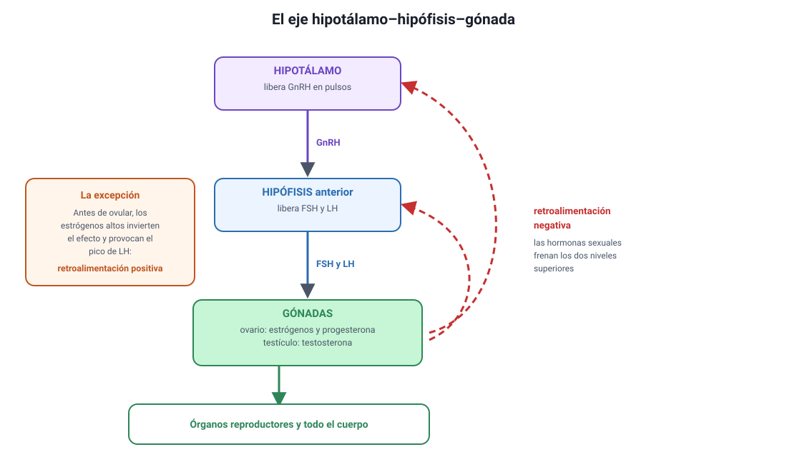
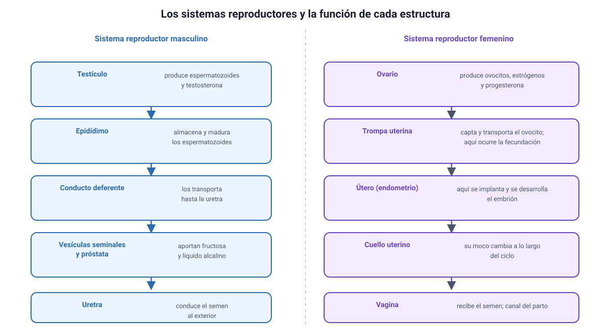
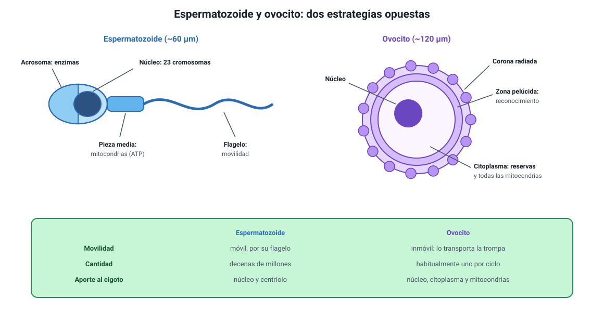
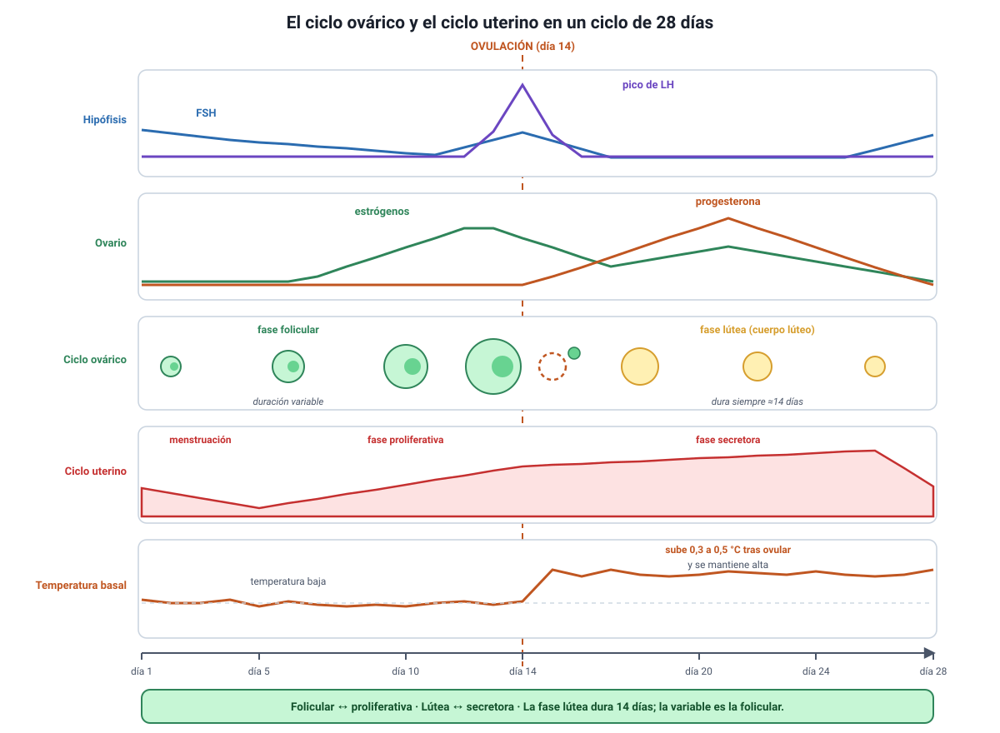
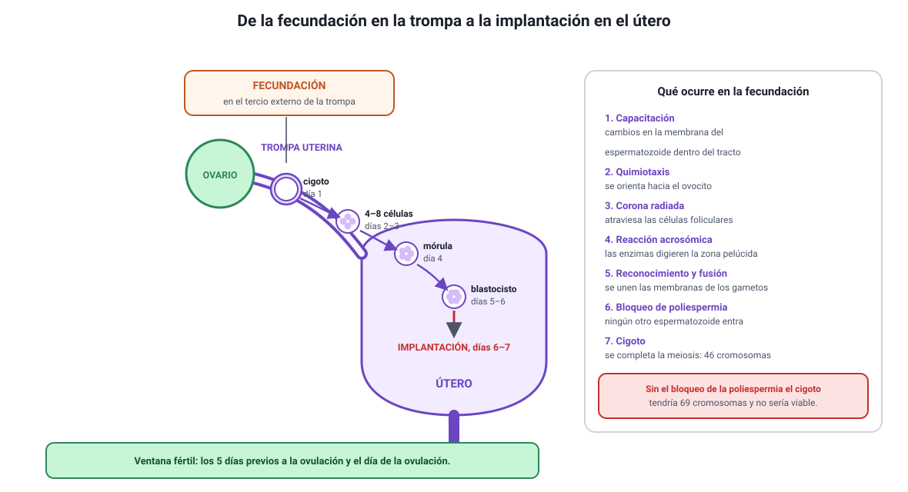
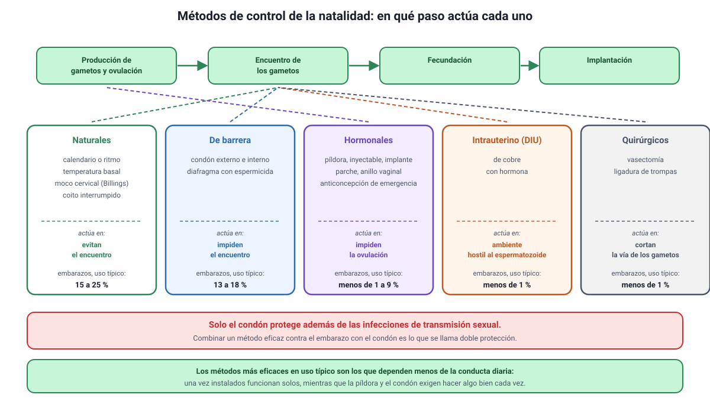

Capítulo 5: Sistema endocrino y sexualidad humana
Área temática: Procesos y funciones biológicas
En la prueba oficial PAES de Invierno 2027 hubo al menos diez preguntas que salieron de este capítulo: quimiotaxis de los espermatozoides, enzimas del acrosoma, implantación del blastocisto, días de la fase folicular, vasectomía, diseño de un ensayo de un anticonceptivo masculino, un test para detectar el virus del herpes y un gráfico de incidencia de clamidia, gonorrea y VIH. Es, junto con el método científico, uno de los capítulos más rentables del libro.
Aquí vas a aprender cómo funciona el sistema endocrino y por qué la retroalimentación negativa explica casi todo lo que sigue; cuáles son las estructuras de los sistemas reproductores y qué hace cada una; en qué se parecen y en qué se diferencian los gametos; cómo se acoplan el ciclo ovárico y el ciclo uterino, con sus hormonas, sus fases y sus señales corporales; qué ocurre paso a paso en la fecundación; qué son los caracteres sexuales y qué dimensiones tiene la sexualidad humana; cómo se clasifican y qué eficacia tienen los métodos de control de la natalidad; y cuáles son el agente, la transmisión, los síntomas y la prevención de las principales infecciones de transmisión sexual.
Este capítulo cubre los conocimientos 2.2 a 2.6 del temario DEMRE 2027.
1. Conceptos claveIA:12
| Concepto | Definición |
|---|---|
| Hormona | Mensajero químico producido por una glándula endocrina, que viaja por la sangre y actúa sobre células con el receptor específico |
| Glándula endocrina | Órgano que libera sus secreciones directamente a la sangre, sin conductos |
| Célula blanco | Célula que posee el receptor para una hormona determinada y, por lo tanto, responde a ella |
| Retroalimentación negativa | Mecanismo en que el producto de un proceso inhibe su propio estímulo, manteniendo estable una variable |
| Eje hipotálamo-hipófisis | Circuito de control en el que el hipotálamo regula la hipófisis y esta, a las glándulas periféricas |
| Gónada | Órgano que produce gametos y hormonas sexuales: el testículo y el ovario |
| Gameto | Célula sexual haploide: el espermatozoide y el ovocito |
| Espermatogénesis | Formación de espermatozoides en los túbulos seminíferos del testículo, desde la pubertad y de forma continua |
| Ovogénesis | Formación de ovocitos, que comienza antes del nacimiento y se completa solo si hay fecundación |
| Acrosoma | Vesícula del espermatozoide con enzimas que digieren las cubiertas del ovocito |
| Zona pelúcida | Cubierta glicoproteica que rodea al ovocito y donde ocurre el reconocimiento entre gametos |
| FSH | Hormona folículo-estimulante, de la hipófisis: estimula el desarrollo del folículo y la espermatogénesis |
| LH | Hormona luteinizante, de la hipófisis: desencadena la ovulación y la formación del cuerpo lúteo |
| Estrógenos | Hormonas del folículo ovárico: engrosan el endometrio y desarrollan los caracteres sexuales secundarios femeninos |
| Progesterona | Hormona del cuerpo lúteo: mantiene el endometrio y prepara el útero para la implantación |
| Testosterona | Hormona del testículo: mantiene la espermatogénesis y desarrolla los caracteres sexuales secundarios masculinos |
| Ciclo ovárico | Cambios cíclicos del ovario: fase folicular, ovulación y fase lútea |
| Ciclo uterino | Cambios cíclicos del endometrio: menstruación, fase proliferativa y fase secretora |
| Ovulación | Liberación del ovocito desde el folículo maduro, desencadenada por el pico de LH |
| Cuerpo lúteo | Estructura que queda en el ovario tras la ovulación y secreta progesterona |
| Endometrio | Capa interna del útero, que se engrosa y se descama en cada ciclo |
| Fecundación | Unión del espermatozoide con el ovocito, que ocurre normalmente en la trompa uterina |
| Capacitación | Cambios que sufre el espermatozoide en el tracto femenino y que lo habilitan para fecundar |
| Bloqueo de la poliespermia | Conjunto de cambios del ovocito que impide la entrada de un segundo espermatozoide |
| Cigoto | Célula diploide que resulta de la fusión de los dos gametos |
| Blastocisto | Estructura de unos cinco días que se implanta en el endometrio |
| Implantación | Anidación del blastocisto en el endometrio, alrededor del sexto o séptimo día |
| Caracteres sexuales primarios | Estructuras presentes desde el nacimiento y directamente implicadas en la reproducción |
| Caracteres sexuales secundarios | Rasgos que aparecen en la pubertad por acción de las hormonas sexuales |
| Método de barrera | Anticonceptivo que impide físicamente el encuentro de los gametos, como el condón |
| Anticoncepción de emergencia | Método hormonal de uso posterior a una relación sexual sin protección, que actúa retrasando la ovulación |
| ITS | Infección de transmisión sexual: se transmite principalmente por contacto sexual sin protección |
| Período de ventana | Tiempo entre la infección y el momento en que un examen puede detectarla |
2. El sistema endocrino: hormonas y regulaciónIA:34
Esta sección es la base de todo el capítulo. El temario no la lista como un conocimiento aparte, pero sin ella no se entiende el ciclo ovárico ni cómo funcionan los anticonceptivos hormonales.

a. Qué es una hormonaIA:567
Una hormona es un mensajero químico que una glándula endocrina libera a la sangre y que actúa sobre células situadas lejos del lugar donde se produjo. Tres rasgos la definen:
- Viaja por la sangre, de modo que alcanza a todo el cuerpo.
- Actúa solo sobre las células que tienen su receptor, llamadas células blanco. Esa especificidad es la que explica por qué una hormona que circula por todo el organismo produce efectos solo en algunos órganos.
- Actúa en concentraciones muy bajas, del orden de nanogramos por mililitro.
La comparación con el sistema nervioso aparece con frecuencia. El sistema nervioso envía señales rápidas, breves y dirigidas a un blanco preciso; el endocrino envía señales lentas, duraderas y difundidas por la sangre. Los dos se coordinan justamente en el hipotálamo.
b. Dos tipos de hormona y dos tipos de receptorIA:8910
Dónde está el receptor depende de si la hormona puede atravesar la membrana:
| Tipo | Ejemplos | ¿Atraviesa la membrana? | Dónde está su receptor | Velocidad del efecto |
|---|---|---|---|---|
| Esteroidales (derivadas del colesterol) | Estrógenos, progesterona, testosterona, cortisol | Sí, por ser liposolubles | Dentro de la célula; actúan sobre la expresión de genes | Lento y duradero |
| Peptídicas y proteicas | FSH, LH, insulina, hormona del crecimiento | No, por ser hidrosolubles | En la membrana; activan segundos mensajeros | Rápido y transitorio |
Por qué esto importa. Las hormonas sexuales son esteroidales, y por eso pueden administrarse por vía oral y actúan modificando la expresión génica de sus células blanco. La FSH y la LH son peptídicas: se degradarían en el estómago, así que se administran inyectadas en los tratamientos de fertilidad.
c. La retroalimentación negativaIA:111213
Es el mecanismo de control más importante del sistema endocrino y el que explica la mayoría de los ítems de esta unidad: el producto final inhibe su propio estímulo.
Piensa en un termostato. Cuando la temperatura baja, se enciende la calefacción; cuando sube lo suficiente, la calefacción se apaga. El resultado es una variable que se mantiene estable oscilando alrededor de un valor.
En el sistema endocrino ocurre igual: si la concentración de una hormona periférica sube, esa hormona frena al hipotálamo y a la hipófisis; si baja, el freno se libera y la producción vuelve a aumentar.
Cómo se pregunta. «Se administra una hormona externa. ¿Qué ocurre con la producción propia?» La respuesta casi siempre es que disminuye, porque la hormona externa ejerce la misma retroalimentación negativa que la propia. Ese es exactamente el mecanismo de los anticonceptivos hormonales, que verás en la sección 8.
d. El eje hipotálamo-hipófisis-gónadaIA:141516
El circuito que controla la reproducción tiene tres niveles:
| Nivel | Qué produce | Sobre quién actúa |
|---|---|---|
| Hipotálamo | GnRH (hormona liberadora de gonadotropinas), en pulsos | Hipófisis anterior |
| Hipófisis anterior | FSH y LH, llamadas gonadotropinas | Gónadas: ovario y testículo |
| Gónadas | Estrógenos y progesterona en el ovario; testosterona en el testículo | Órganos reproductores y todo el cuerpo |
Y las hormonas de las gónadas vuelven a los dos niveles superiores para frenarlos: eso es la retroalimentación negativa.
El hipotálamo es, además, el punto donde el sistema nervioso y el endocrino se conectan: recibe información del encéfalo sobre el estrés, la nutrición y los ritmos de luz, y la traduce en señales hormonales. Por eso una pérdida de peso importante, un entrenamiento extremo o un estrés sostenido pueden alterar los ciclos.
e. La excepción: la retroalimentación positivaIA:171819
Existe un caso en que el producto estimula en vez de frenar, y no es un detalle menor: es el que desencadena la ovulación. Cuando el folículo maduro alcanza una concentración alta y sostenida de estrógenos, el efecto sobre la hipófisis se invierte y provoca un pico de LH. Ese pico es el que libera el ovocito.
Por eso en el ciclo ovárico conviven los dos mecanismos: la retroalimentación negativa durante casi todo el ciclo y una ventana breve de retroalimentación positiva justo antes de la ovulación.
3. Los sistemas reproductoresIA:2021
Es parte del conocimiento 2.6 del temario DEMRE 2027. La prueba no pide memorizar listas de estructuras: pide saber qué hace cada una, porque los ítems suelen describir una falla y preguntar dónde está el problema.

a. Sistema reproductor masculinoIA:222324
| Estructura | Función |
|---|---|
| Testículos | Producen espermatozoides en los túbulos seminíferos y testosterona en las células de Leydig |
| Epidídimo | Almacena los espermatozoides y allí terminan de madurar y adquieren movilidad |
| Conducto deferente | Transporta los espermatozoides desde el epidídimo hasta la uretra |
| Vesículas seminales | Aportan un líquido rico en fructosa, que es el combustible del espermatozoide |
| Próstata | Aporta un líquido alcalino que neutraliza la acidez de la vagina |
| Uretra | Conduce al exterior tanto la orina como el semen, en momentos distintos |
El semen es la suma de espermatozoides y de los líquidos de las glándulas. Los espermatozoides son apenas un pequeño porcentaje de su volumen.
Por qué los testículos están fuera del cuerpo. La espermatogénesis requiere una temperatura de unos 2 a 3 °C bajo la corporal. El escroto regula esa temperatura acercando o alejando los testículos del cuerpo. Es un ejemplo claro de relación entre estructura y función, y explica por qué la fiebre prolongada o el calor excesivo afectan de forma transitoria la producción de espermatozoides.
b. Sistema reproductor femeninoIA:252627
| Estructura | Función |
|---|---|
| Ovarios | Contienen los folículos, producen ovocitos y secretan estrógenos y progesterona |
| Trompas uterinas (oviductos) | Captan el ovocito liberado y lo transportan; aquí ocurre la fecundación |
| Útero | Órgano muscular donde se implanta y se desarrolla el embrión; su capa interna es el endometrio |
| Cuello uterino (cérvix) | Comunica el útero con la vagina; su moco cambia de consistencia a lo largo del ciclo |
| Vagina | Conducto que recibe el semen y forma el canal del parto |
La estructura que más se pregunta es la trompa uterina. La fecundación no ocurre en el útero ni en el ovario: ocurre en el tercio externo de la trompa, cerca del ovario. El embrión recorre luego la trompa hasta el útero, donde se implanta unos seis o siete días después. Si una alternativa sitúa la fecundación en el útero, es incorrecta.
c. Cómo se pregunta esto: razonar desde la fallaIA:282930
Los ítems de esta sección suelen describir una alteración y pedir localizarla. Conviene tener a mano estas asociaciones:
| Hallazgo | Dónde buscar el problema |
|---|---|
| No hay espermatozoides en el semen, pero sí testosterona normal | Obstrucción del conducto deferente, como en una vasectomía |
| Los espermatozoides existen pero no se mueven | Maduración en el epidídimo o pieza media del espermatozoide |
| Hay ovulación pero no se logra la implantación | Endometrio o fase lútea |
| No hay ovulación | Eje hipotálamo-hipófisis o el propio folículo |
| Trompas obstruidas | El ovocito y el espermatozoide no pueden encontrarse |
La prueba oficial de Invierno 2027 lo hizo de dos maneras: preguntó cómo comprobar que la reversión de una vasectomía fue exitosa —la respuesta es examinar el semen al microscopio, porque es donde se verifica que los espermatozoides volvieron a circular— y planteó un síndrome con adherencias en la cavidad uterina que altera la fertilidad, donde lo comprometido es el endometrio.
4. Los gametos: espermatozoide y ovocitoIA:3132
Es el conocimiento 2.2 del temario DEMRE 2027, en su parte de estructura y función. La fecundación viene en la sección 6.

a. Dos células haploides con estrategias opuestasIA:333435
Ambos gametos tienen 23 cromosomas, la mitad que una célula somática, y ambos se forman por meiosis. Pero todo lo demás en ellos es distinto, y esa diferencia tiene una lógica.
| Espermatozoide | Ovocito | |
|---|---|---|
| Tamaño | Unos 60 µm de largo, casi todo flagelo | Unos 100 a 150 µm de diámetro: la célula más grande del cuerpo humano |
| Movilidad | Móvil, gracias al flagelo | Inmóvil: lo transporta la trompa |
| Citoplasma | Muy escaso | Abundante, con reservas para los primeros días del embrión |
| Cantidad | Decenas de millones por eyaculación | Habitualmente uno por ciclo |
| Producción | Continua desde la pubertad | Se inicia antes de nacer y se detiene hasta la pubertad |
| Aporte a la célula hija | Núcleo y centríolo | Núcleo, citoplasma, organelos y todas las mitocondrias |
La herencia mitocondrial es materna. Las pocas mitocondrias que el espermatozoide lleva en su pieza media se degradan tras la fecundación. Por eso el ADN mitocondrial se hereda solo por vía materna, un dato que aparece tanto aquí como en el capítulo 9, al usar el ADN mitocondrial para reconstruir parentescos.
b. El espermatozoide, parte por parteIA:363738
| Parte | Qué contiene | Para qué sirve |
|---|---|---|
| Acrosoma | Vesícula con enzimas hidrolíticas | Digiere la corona radiada y la zona pelúcida del ovocito |
| Núcleo | 23 cromosomas muy compactados | Aporta la mitad del material genético |
| Pieza media | Mitocondrias enrolladas | Produce el ATP que mueve el flagelo |
| Flagelo | Microtúbulos | Da la movilidad |
Un ítem oficial de 2027. Se describían espermatozoides con acrosomas de apariencia y volumen normales, pero con enzimas de actividad reducida, y se pedía predecir la consecuencia. La clave está en la función del acrosoma: sin enzimas activas, el espermatozoide no puede degradar las cubiertas del ovocito, aunque nade perfectamente. Fíjate en el método: se altera una estructura y se pregunta por la función que depende de ella.
c. El ovocito y sus cubiertasIA:394041
Alrededor del ovocito hay dos capas que cumplen funciones distintas y que la prueba distingue:
- Corona radiada: capa externa de células foliculares que acompañan al ovocito al salir del ovario. El espermatozoide debe atravesarla primero.
- Zona pelúcida: cubierta de glicoproteínas pegada al ovocito. Aquí ocurre el reconocimiento específico entre gametos, que impide que un espermatozoide de otra especie fecunde al ovocito, y aquí se produce después el bloqueo de la poliespermia.
d. Espermatogénesis y ovogénesisIA:424344
| Espermatogénesis | Ovogénesis | |
|---|---|---|
| Dónde | Túbulos seminíferos del testículo | Ovario |
| Cuándo comienza | En la pubertad | Antes del nacimiento |
| Duración de un ciclo completo | Unos 70 días | Décadas: se detiene en profase I hasta la pubertad |
| Producto de una meiosis | Cuatro espermatozoides funcionales | Un ovocito y cuerpos polares que degeneran |
| Hasta cuándo | Se mantiene, con declive gradual, toda la vida adulta | Termina en la menopausia |
| Control hormonal | FSH sobre las células de Sertoli; LH sobre las de Leydig | FSH sobre el folículo; LH desencadena la ovulación |
Por qué una meiosis rinde un solo ovocito. La división es desigual: casi todo el citoplasma queda en una sola célula y las otras, los cuerpos polares, reciben solo cromosomas y degeneran. Así el ovocito conserva las reservas que el embrión necesitará antes de implantarse. En el espermatozoide ocurre lo contrario: se descarta casi todo el citoplasma para ganar velocidad.
Otro punto que conviene tener claro: en la ovogénesis la meiosis se completa solo si hay fecundación. Lo que se libera en la ovulación es un ovocito detenido en metafase II, y la segunda división meiótica termina recién cuando entra el espermatozoide.
5. El ciclo ovárico y el ciclo uterinoIA:4546
Es el conocimiento 2.3 del temario DEMRE 2027 y el contenido con más preguntas del capítulo. Son dos ciclos que ocurren a la vez, en órganos distintos, coordinados por las mismas hormonas.

a. Cómo leer el esquemaIA:474849
Todo se cuenta desde el día 1, que es el primer día de la menstruación. En un ciclo de 28 días, la ovulación ocurre alrededor del día 14. Las cuatro bandas de la figura están alineadas en el tiempo, así que cada momento puede leerse en los cuatro niveles a la vez.
b. El ciclo ovárico: lo que pasa en el ovarioIA:505152
| Fase | Días (ciclo de 28) | Qué ocurre | Hormona protagonista |
|---|---|---|---|
| Folicular | 1 a 13 | La FSH estimula el crecimiento de varios folículos; uno se hace dominante y el resto degenera. El folículo secreta estrógenos en cantidad creciente | FSH y estrógenos |
| Ovulación | ≈ 14 | El pico de LH rompe el folículo y libera el ovocito hacia la trompa | LH |
| Lútea | 15 a 28 | El folículo roto se transforma en cuerpo lúteo y secreta progesterona. Si no hay embarazo, degenera hacia el día 26 y las hormonas caen | Progesterona |
El dato que más se pregunta: cuál fase es variable. La fase lútea dura casi siempre 14 días, porque ese es el tiempo de vida del cuerpo lúteo. Lo que varía entre personas y entre ciclos es la fase folicular. Por eso, en un ciclo de 32 días la ovulación no ocurre el día 16, sino alrededor del día 18: se cuentan 14 días hacia atrás desde el final. Un ítem oficial de 2027 usó exactamente ese cálculo con un ciclo de 32 días.
c. El ciclo uterino: lo que pasa en el endometrioIA:535455
| Fase | Días (ciclo de 28) | Qué ocurre | Hormona que la dirige |
|---|---|---|---|
| Menstrual | 1 a 5 | El endometrio se descama y se elimina, porque cayeron los estrógenos y la progesterona | Ninguna: es consecuencia de la caída |
| Proliferativa | 6 a 13 | El endometrio se regenera y se engrosa | Estrógenos del folículo |
| Secretora | 15 a 28 | El endometrio se vuelve glandular y vascularizado, listo para recibir un embrión | Progesterona del cuerpo lúteo |
La correspondencia entre ambos ciclos es directa: la fase folicular del ovario coincide con la proliferativa del útero, y la fase lútea con la secretora.
Por qué llega la menstruación. Si no hay implantación, el cuerpo lúteo degenera y la progesterona cae. El endometrio, que dependía de ella para mantenerse, se descama: eso es la menstruación, y marca el día 1 del ciclo siguiente. Si en cambio hay implantación, el embrión produce hCG, que mantiene vivo al cuerpo lúteo y, con él, la progesterona. Esa misma hCG es la que detectan los test de embarazo.
d. Dos señales corporales del cicloIA:565758
Ambas se usan en los métodos naturales de la sección 8 y aparecen con frecuencia en los ítems con gráficos.
Temperatura corporal basal. Es la temperatura medida al despertar, antes de cualquier actividad. Durante la fase folicular se mantiene baja; después de la ovulación sube entre 0,3 y 0,5 °C por efecto de la progesterona y se mantiene alta durante toda la fase lútea.
La limitación que la prueba explota. El alza de temperatura confirma que la ovulación ya ocurrió: no la anticipa. Por eso, por sí sola, no sirve para predecir el día fértil, aunque sí para reconocer el patrón del propio ciclo a lo largo de varios meses.
Moco cervical. Cambia de consistencia a lo largo del ciclo. Cerca de la ovulación, los estrógenos lo vuelven abundante, transparente y elástico, parecido a la clara de huevo, lo que facilita el paso de los espermatozoides. Después de la ovulación, la progesterona lo vuelve espeso y escaso, y forma una barrera. Ese cambio es la base del método de Billings.
e. Qué altera los ciclosIA:596061
Como todo el eje depende del hipotálamo, cualquier cosa que lo afecte puede alterar el ciclo: estrés sostenido, pérdida o ganancia importante de peso, ejercicio de alta intensidad, enfermedades y algunos fármacos.
La prueba oficial de Invierno 2027 presentó dos casos de este tipo: un estudio sobre tabaquismo que encontró niveles disminuidos de un factor de crecimiento vascular en el tejido uterino —lo que compromete la vascularización del endometrio y, por lo tanto, la implantación—, y otro que relacionaba el índice de masa corporal con el desarrollo de los caracteres sexuales. En ambos, la clave estaba en seguir la cadena desde la variable alterada hasta la función que depende de ella.
6. La fecundación y los primeros díasIA:6263
Completa el conocimiento 2.2 del temario DEMRE 2027: la función de los gametos en la fecundación.

a. Dónde y cuándoIA:646566
La fecundación ocurre en el tercio externo de la trompa uterina, el extremo cercano al ovario, y debe ocurrir dentro de un plazo acotado:
- El ovocito sobrevive entre 12 y 24 horas tras la ovulación.
- Los espermatozoides sobreviven en el tracto femenino hasta unos 5 días, según las condiciones del moco cervical.
De ahí sale el concepto de ventana fértil: los días en que una relación sexual puede terminar en embarazo son aproximadamente los cinco previos a la ovulación y el día de la ovulación misma. No es un día, sino un intervalo, y esa es la razón de que los métodos basados en el calendario sean poco confiables.
b. El recorrido del espermatozoideIA:676869
De las decenas de millones que entran, solo unos pocos cientos llegan hasta el ovocito.
- Capacitación. En el tracto femenino, el espermatozoide sufre cambios en su membrana que lo habilitan para fecundar. Sin capacitación no puede producirse la reacción acrosómica. Por eso, en la fecundación in vitro, el laboratorio debe reproducir este paso.
- Quimiotaxis. El espermatozoide orienta su movimiento siguiendo sustancias atrayentes liberadas cerca del ovocito. La prueba oficial de Invierno 2027 presentó datos de migración de espermatozoides frente a concentraciones crecientes de un quimioatrayente y pidió predecir el efecto sobre la fecundación asistida.
- Paso por la corona radiada. El espermatozoide se abre camino entre las células foliculares.
- Reacción acrosómica. Al contactar la zona pelúcida, el acrosoma libera sus enzimas, que digieren localmente esa cubierta.
- Reconocimiento y fusión. Proteínas de la zona pelúcida y de la membrana del espermatozoide se reconocen de forma específica, y las membranas de los dos gametos se fusionan.
- Bloqueo de la poliespermia. El ovocito responde de inmediato modificando su membrana y endureciendo la zona pelúcida, de modo que ningún otro espermatozoide puede entrar.
- Fin de la meiosis y formación del cigoto. El ovocito completa su segunda división meiótica y los dos núcleos haploides se unen: queda una célula diploide, el cigoto.
Por qué el bloqueo de la poliespermia es decisivo. Si entraran dos espermatozoides, el cigoto quedaría con 69 cromosomas en lugar de 46 y no sería viable. Cuando un ítem pregunta qué evita ese bloqueo, la respuesta correcta se refiere al número de cromosomas, no a la velocidad del desarrollo ni a la energía disponible.
c. De cigoto a blastocistoIA:707172
Mientras avanza por la trompa hacia el útero, el cigoto se divide sin crecer: las células se hacen cada vez más pequeñas, porque viven de las reservas que aportó el ovocito.
| Momento aproximado | Estructura |
|---|---|
| Día 1 | Cigoto |
| Días 2 a 3 | 4 a 8 células, en la trompa |
| Día 4 | Mórula, que llega al útero |
| Días 5 a 6 | Blastocisto, con una cavidad interna |
| Días 6 a 7 | Implantación en el endometrio |
La implantación exige que el endometrio esté en fase secretora, es decir, engrosado y vascularizado por acción de la progesterona. Si ese endometrio está dañado o mal vascularizado, la implantación falla aunque la fecundación haya ocurrido: esa es la lógica de los dos ítems oficiales que mencionamos en la sección anterior.
Fecundación no es lo mismo que embarazo. Entre la unión de los gametos y el embarazo establecido median unos siete días y un paso que puede fallar: la implantación. Distinguir ambos momentos es necesario para entender cómo actúa cada método anticonceptivo de la sección 8.
d. Cuando algo falla: la reproducción asistidaIA:737475
Los ítems sobre técnicas de reproducción asistida se resuelven identificando qué paso del proceso reemplaza la técnica.
| Técnica | Qué paso reemplaza | Cuándo no sirve |
|---|---|---|
| Inseminación intrauterina | El recorrido inicial del espermatozoide | Si las trompas están obstruidas |
| Fecundación in vitro | El encuentro de los gametos fuera del cuerpo | Si el espermatozoide no logra penetrar el ovocito |
| Inyección de un espermatozoide en el ovocito | El recorrido, la reacción acrosómica y el reconocimiento | Si el problema está en la meiosis y los gametos son cromosómicamente anómalos |
Ese último caso fue justamente un ítem oficial de 2027: entre cuatro personas con distintas causas de infertilidad, la técnica de inyección directa resultaba inefectiva para quien tenía anomalías en el proceso meiótico, porque esa técnica sortea las barreras físicas pero no corrige el contenido genético del gameto.
7. Caracteres sexuales y dimensiones de la sexualidadIA:7677
Completa el conocimiento 2.6 del temario DEMRE 2027: los aspectos sociales, afectivos y psicológicos de la sexualidad humana, además de los biológicos.
a. Caracteres sexuales primarios y secundariosIA:787980
| Caracteres primarios | Caracteres secundarios | |
|---|---|---|
| Qué son | Estructuras directamente implicadas en la reproducción | Rasgos que diferencian a los sexos sin participar directamente en la reproducción |
| Cuándo aparecen | Se forman antes del nacimiento | Se desarrollan en la pubertad |
| Ejemplos | Gónadas, conductos, útero, pene, vagina | Vello corporal, cambio de voz, desarrollo mamario, distribución de la grasa, ensanchamiento de caderas o de hombros |
| Qué los provoca | Determinación genética y hormonal durante el desarrollo embrionario | Testosterona y estrógenos a partir de la pubertad |
La distinción se pregunta con frecuencia. Si un ítem describe un rasgo que aparece en la pubertad, es secundario; si describe una estructura presente desde el nacimiento y necesaria para la reproducción, es primario. Un ítem oficial de 2027 relacionaba el índice de masa corporal con el desarrollo prematuro de los caracteres sexuales secundarios, y distinguirlos era justamente lo que separaba la clave de su distractor.
b. Qué desencadena la pubertadIA:818283
La pubertad no comienza en las gónadas, sino en el hipotálamo: aumenta la secreción pulsátil de GnRH, con ella suben la FSH y la LH, y las gónadas empiezan a producir hormonas sexuales en cantidad. Es el mismo eje de la sección 2, que se activa después de estar frenado durante la infancia.
Ese inicio depende también del estado nutricional y de la cantidad de tejido adiposo, lo que explica que tanto la desnutrición como el exceso de peso puedan adelantar o retrasar su comienzo.
c. La sexualidad tiene más de una dimensiónIA:848586
El temario es explícito en pedir los aspectos sociales, afectivos y psicológicos junto con los biológicos. La sexualidad humana no se reduce a la reproducción: la mayoría de las conductas sexuales de nuestra especie no tienen fin reproductivo.
| Dimensión | De qué se trata |
|---|---|
| Biológica | Anatomía, fisiología, hormonas, respuesta sexual, fertilidad |
| Afectiva | Vínculos, deseo, atracción, intimidad y cuidado mutuo |
| Psicológica | Identidad, autoimagen, autoestima, expectativas y decisiones propias |
| Social y cultural | Normas, leyes, roles, mensajes de los medios y expectativas del entorno |
Por qué esto está en una prueba de ciencias. Porque las decisiones sobre sexualidad no se explican solo por la biología. Un ítem puede describir, por ejemplo, un programa de prevención que fracasa pese a entregar información correcta, y pedir qué dimensión no se abordó. Reconocer que existen factores afectivos y sociales, y no solo de conocimiento, es parte de lo que se evalúa.
d. Decisiones informadas y autocuidadoIA:878889
Tres ideas concretas que ordenan esta parte del contenido:
- El consentimiento es un requisito, no un detalle. Debe ser libre, informado, específico y reversible: puede retirarse en cualquier momento. Sin consentimiento no hay relación sexual, hay una agresión, y en Chile eso es un delito.
- La información correcta es necesaria pero no suficiente. Saber cómo se transmite el VIH no basta si no se dispone de preservativos, si no se puede conversar con la pareja o si la presión del entorno pesa más que la información.
- El autocuidado incluye el control de salud. Los exámenes de ITS, el acceso a métodos anticonceptivos y las consultas de salud sexual son parte del cuidado ordinario, no una señal de que algo anda mal.
e. El marco legal chilenoIA:909192
La Ley 20.418 fija las normas sobre información, orientación y prestaciones en materia de regulación de la fertilidad. Tres puntos importan para este capítulo:
- Toda persona tiene derecho a recibir información completa sobre los métodos de regulación de la fertilidad y a elegir libremente entre los autorizados.
- La ley garantiza la confidencialidad sobre las decisiones y los métodos que cada persona elige, y la edad no es motivo para romperla.
- Los establecimientos de salud deben poner a disposición de la población los métodos autorizados, tanto hormonales como no hormonales, incluida la anticoncepción de emergencia.
La misma ley establece un deber de información a un adulto responsable cuando quien solicita anticoncepción de emergencia es menor de 14 años, pero incluso en ese caso el método se entrega primero y el aviso es posterior.
8. Métodos de control de la natalidadIA:9394
Es el conocimiento 2.4 del temario DEMRE 2027, que pide expresamente distinguir los métodos naturales, los artificiales reversibles —hormonales y de barrera— y los parcialmente reversibles, es decir, los quirúrgicos.

a. La pregunta que ordena la clasificación: ¿en qué paso actúa?IA:959697
Todos los métodos hacen lo mismo en el fondo: interrumpen alguno de los pasos que van desde la producción de gametos hasta la implantación. Saber cuál interrumpe cada uno permite responder la mayoría de los ítems sin memorizar listas.
| Paso del proceso | Métodos que lo interrumpen |
|---|---|
| Producción u ovulación | Anticonceptivos hormonales; anticoncepción de emergencia |
| Encuentro de los gametos | Condón, diafragma; ligadura de trompas; vasectomía; métodos naturales |
| Entorno uterino y movilidad de los espermatozoides | Dispositivo intrauterino |
b. Métodos naturalesIA:9899100
Se basan en identificar la ventana fértil y evitar relaciones sexuales en esos días. No usan dispositivos ni fármacos.
| Método | En qué se basa | Limitación principal |
|---|---|---|
| Calendario (ritmo) | Estimar la ovulación a partir de la duración de ciclos anteriores | Supone ciclos regulares; falla si el ciclo varía |
| Temperatura basal | El alza de 0,3 a 0,5 °C que sigue a la ovulación | Confirma la ovulación una vez ocurrida; no la anticipa |
| Billings (moco cervical) | El moco se vuelve abundante, transparente y elástico cerca de la ovulación | Requiere observación diaria y se altera con infecciones o fármacos |
| Coito interrumpido | Retirar el pene antes de la eyaculación | Poco confiable: hay espermatozoides antes de la eyaculación |
Lo que los hace poco confiables no es el principio, sino la variabilidad. El ciclo cambia con el estrés, una enfermedad, un viaje o un cambio de peso, y la ventana fértil se desplaza con él. Por eso su eficacia en uso típico es muy inferior a la de los métodos hormonales o de barrera. Si un ítem afirma que el método del calendario es confiable en una persona con ciclos irregulares, es incorrecto.
c. Métodos de barreraIA:101102103
Impiden físicamente que los espermatozoides lleguen al ovocito.
- Condón externo (masculino) e interno (femenino): son los únicos métodos que, además de evitar el embarazo, reducen el riesgo de infecciones de transmisión sexual. Ese doble papel es lo que más se pregunta.
- Diafragma y capuchón cervical: cubren el cuello uterino y se usan con espermicida. No protegen de las ITS.
d. Métodos hormonalesIA:104105106
Aportan estrógenos y progestágenos, o solo progestágeno, en presentaciones diversas: píldora, inyectable, implante subdérmico, parche y anillo vaginal.
Cómo funcionan. Aquí se aplica directamente la retroalimentación negativa de la sección 2: las hormonas externas frenan la secreción de FSH y LH, de modo que no hay pico de LH y no hay ovulación. Además espesan el moco cervical y modifican el endometrio.
El razonamiento completo. Hormonas externas → el hipotálamo y la hipófisis detectan concentraciones altas → baja la GnRH y bajan la FSH y la LH → el folículo no madura y no hay pico de LH → no hay ovulación. Esa cadena resuelve cualquier ítem sobre anticonceptivos hormonales, incluidos los que presentan gráficos de concentraciones.
La anticoncepción de emergencia es un caso aparte: es una dosis alta de progestágeno que se toma después de una relación sexual sin protección y actúa retrasando o impidiendo la ovulación. Es menos eficaz que un método de uso regular y, como su nombre indica, no está pensada para usarse como tal.
e. Dispositivo intrauterinoIA:107108109
El DIU se instala en el útero y puede ser de cobre o con hormona. El de cobre crea un ambiente hostil para los espermatozoides y dificulta la fecundación; el hormonal, además, espesa el moco cervical y adelgaza el endometrio. Es reversible al retirarlo y dura varios años.
f. Métodos quirúrgicosIA:110111112
El temario los llama parcialmente reversibles, y la palabra importa.
- Vasectomía: se seccionan los conductos deferentes. El testículo sigue produciendo testosterona y espermatozoides, pero estos ya no llegan al semen.
- Ligadura de trompas: se interrumpen las trompas uterinas, de modo que el ovocito y el espermatozoide no pueden encontrarse. El ciclo ovárico continúa igual.
Dos ítems oficiales de 2027 salieron de aquí. Uno preguntaba cómo comprobar que la reversión de una vasectomía fue exitosa: la respuesta es examinar una muestra de semen al microscopio, porque el problema era el paso de los espermatozoides y no su producción. El otro planteaba un ensayo de un anticonceptivo masculino inyectable comparado con el condón, y pedía la pregunta de investigación que lo originó: la que compara la eficacia de ambos métodos para prevenir embarazos, y no la que indaga preferencias o niveles hormonales.
g. Eficacia: uso perfecto y uso típicoIA:113114115
La eficacia se expresa como el porcentaje de embarazos durante el primer año de uso, y siempre se informa de dos maneras:
- Uso perfecto: el método se usa exactamente como corresponde, siempre.
- Uso típico: el uso real de la población, con olvidos y errores.
| Método | Embarazos en el primer año, uso típico (orden de magnitud) |
|---|---|
| Implante y DIU | Menos del 1 % |
| Píldora, parche, anillo, inyectable | Alrededor del 7 al 9 % |
| Condón externo | Alrededor del 13 al 18 % |
| Métodos naturales | Entre un 15 y un 25 %, según el método |
| Coito interrumpido | Alrededor del 20 % o más |
| Sin método | Más del 80 % |
La lección que dejan estas cifras. Los métodos más eficaces en uso típico son los que dependen menos de la conducta diaria de la persona: una vez instalados, funcionan solos. Los que exigen recordar algo todos los días, o hacer algo correctamente en cada relación, pierden eficacia en el uso real. Por eso la diferencia entre uso perfecto y uso típico es enorme en la píldora y casi nula en el implante.
Por último, algo que la prueba distingue con cuidado: la doble protección, es decir, combinar un método eficaz para evitar el embarazo con el condón, que es el único que reduce además el riesgo de infecciones.
9. Infecciones de transmisión sexualIA:116117
Es el conocimiento 2.5 del temario DEMRE 2027, que pide para cada infección cuatro cosas: agente patógeno, transmisión, síntomas y prevención. El capítulo 8 desarrolla los microorganismos y las barreras defensivas; aquí se aplica ese contenido a las cuatro ITS que el temario nombra.
a. Las cuatro del temarioIA:118119120
| VIH | Herpes genital | Gonorrea | Clamidia | |
|---|---|---|---|---|
| Agente | Virus de la inmunodeficiencia humana (retrovirus) | Virus del herpes simple, sobre todo VHS-2 | Bacteria Neisseria gonorrhoeae | Bacteria Chlamydia trachomatis |
| Transmisión | Relaciones sexuales sin protección, sangre, y de la madre al hijo en embarazo, parto o lactancia | Contacto directo con lesiones o con piel y mucosas, incluso sin lesiones visibles | Relaciones sexuales sin protección; de la madre al hijo en el parto | Relaciones sexuales sin protección; de la madre al hijo en el parto |
| Síntomas | Al inicio, cuadro similar a una gripe; luego años sin síntomas y, sin tratamiento, deterioro inmunitario | Vesículas dolorosas que se ulceran y recurren; el virus queda latente de por vida | Secreción y ardor al orinar; con frecuencia asintomática, sobre todo en mujeres | Muy a menudo asintomática; puede causar secreción y molestias |
| Tratamiento | Sin cura; con terapia antirretroviral la carga viral se vuelve indetectable | Sin cura; los antivirales controlan los brotes | Curable con antibióticos | Curable con antibióticos |
| Si no se trata | Inmunodeficiencia grave | Brotes recurrentes | Infertilidad, enfermedad inflamatoria pelviana | Infertilidad, embarazo ectópico |
El rasgo que más se pregunta: muchas ITS son asintomáticas. La clamidia y la gonorrea pueden cursar sin síntomas durante meses, y en ese tiempo se transmiten igual y pueden dejar secuelas. De ahí se siguen dos conclusiones que la prueba busca: no tener síntomas no prueba que no haya infección, y por eso el examen periódico es parte de la prevención y no solo del diagnóstico.
b. Virus o bacteria: la diferencia que decide el tratamientoIA:121122123
| Causadas por bacterias | Causadas por virus | |
|---|---|---|
| Cuáles | Gonorrea, clamidia, sífilis | VIH, herpes, VPH |
| Tratamiento | Antibióticos, que curan la infección | Antivirales, que controlan pero no eliminan |
| Consecuencia | Se puede volver a contraer tras curarse | La infección persiste de por vida |
Por qué los antibióticos no sirven contra un virus. Los antibióticos atacan estructuras propias de las bacterias, como su pared celular o sus ribosomas, que los virus no tienen. Un virus usa la maquinaria de la célula que infecta, de modo que atacarlo exige fármacos distintos. Si un ítem propone tratar el herpes o el VIH con antibióticos, es incorrecto.
c. Cómo se previenenIA:124125126
Ordenadas de mayor a menor alcance:
- Condón, externo o interno, en todas las relaciones sexuales. Es la medida que reduce el riesgo de todas las ITS a la vez, aunque no lo elimina para las que se transmiten por contacto de piel, como el herpes y el VPH.
- Exámenes periódicos, especialmente por la alta proporción de casos asintomáticos.
- Tratamiento oportuno de la pareja, para evitar la reinfección.
- Vacunas, cuando existen: hay vacuna contra el VPH y contra la hepatitis B, no contra el VIH, el herpes, la gonorrea ni la clamidia.
- Profilaxis del VIH: existen esquemas de medicamentos previos a la exposición y de emergencia posteriores a ella.
Un error frecuente. La anticoncepción hormonal, el DIU y los métodos naturales no protegen de las ITS: actúan sobre la fertilidad, no sobre la transmisión de microorganismos. Ese es el fundamento de la doble protección de la sección anterior.
d. El período de ventana y los exámenesIA:127128129
Entre la infección y el momento en que un examen puede detectarla transcurre un período de ventana: el organismo todavía no produce suficientes anticuerpos, o la cantidad de agente es demasiado baja.
Esto tiene dos consecuencias prácticas que la prueba usa:
- Un examen negativo tomado demasiado pronto no descarta la infección, y por eso se repite pasado el plazo correspondiente.
- Durante ese período la persona sí puede transmitir la infección.
e. Cómo se pregunta esto en la PAESIA:130131132
La prueba oficial de Invierno 2027 incluyó dos ítems de esta sección, y ninguno pedía memorizar síntomas.
- Uno presentaba cuatro tests diseñados para detectar una proteína del virus del herpes y una tabla con las reacciones de cada uno frente a proteínas de varios virus. Había que elegir el test específico, es decir, el que reaccionaba con el herpes y con ningún otro. Un test que reacciona con varios agentes da falsos positivos.
- El otro entregaba un gráfico con el número de casos nuevos de clamidia, gonorrea y VIH en mujeres adultas, hombres adultos y recién nacidos, y pedía una interpretación correcta. La dificultad estaba en no concluir más de lo que los datos muestran: un recuento de casos por grupo no permite comparar riesgos si no se conoce el tamaño de cada grupo.
La regla que resuelve los ítems con datos epidemiológicos. Un número de casos no es lo mismo que una tasa. Para comparar el riesgo entre dos grupos hay que dividir los casos por el tamaño de cada grupo; si el ítem no entrega ese dato, la conclusión debe limitarse a describir los recuentos.
f. Lo que conviene llevar de este capítuloIA:133134135
- Retroalimentación negativa: hormona externa alta → baja la propia. Resuelve los ítems de anticonceptivos hormonales.
- La fase lútea dura 14 días; la que varía es la folicular. Para ubicar la ovulación, cuenta 14 días hacia atrás desde el final del ciclo.
- Folicular ↔ proliferativa y lútea ↔ secretora: los dos ciclos van acoplados.
- La temperatura basal sube después de ovular: confirma, no anticipa.
- La fecundación ocurre en la trompa; la implantación, en el endometrio, unos seis o siete días después.
- El acrosoma aporta enzimas; la pieza media, energía; el ovocito, citoplasma y mitocondrias.
- El bloqueo de la poliespermia mantiene el número correcto de cromosomas.
- Solo el condón protege a la vez del embarazo y de las ITS.
- Bacterias se curan con antibióticos; virus, no.
- Ausencia de síntomas no es ausencia de infección, y un número de casos no es una tasa.
Ejemplos PAES resueltos
Cuatro ítems al estilo de la prueba, resueltos paso a paso. Cúbrelos y compara después.
Ejemplo 1 (Procesar y analizar la evidencia). Una persona tiene ciclos regulares de 32 días. Un tratamiento de estimulación ovárica debe administrarse durante los 10 a 12 días previos al término de la fase folicular. ¿En qué días del ciclo corresponde aplicarlo?
A) Entre los días 1 y 12. B) Entre los días 6 y 17. C) Entre los días 18 y 29. D) Entre los días 21 y 32.
Desarrollo. Todo depende de ubicar la ovulación, y para eso hay una sola regla confiable.
- La fase lútea dura siempre unos 14 días. Es el tiempo de vida del cuerpo lúteo, y no cambia con la duración del ciclo.
- Por lo tanto, la ovulación se cuenta hacia atrás desde el final: 32 − 14 = día 18. No es el día 16, que sería la mitad del ciclo: ese es el error que el ítem busca.
- La fase folicular termina el día 18, así que los 10 a 12 días previos a su término van aproximadamente del día 6 al día 17.
Clave: B.
Lo que evalúa. Que no apliques el esquema del ciclo de 28 días a cualquier ciclo. La mitad del ciclo coincide con la ovulación solo cuando el ciclo dura 28 días.
Ejemplo 2 (Evaluar). Se describen espermatozoides obtenidos de células germinales modificadas: tienen acrosomas de apariencia y volumen normales, pero con enzimas de actividad reducida. ¿Qué predicción es correcta sobre esos espermatozoides?
A) Presentarán déficit de producción de energía para desplazarse. B) Presentarán movilidad errática de sus flagelos. C) Presentarán dificultad para degradar las cubiertas del ovocito. D) Presentarán alta probabilidad de generar anomalías genéticas.
Desarrollo. El ítem altera una estructura y pide la consecuencia sobre la función que depende de ella.
- ¿Qué hace el acrosoma? Contiene enzimas hidrolíticas que digieren la corona radiada y la zona pelúcida. Es la «llave» que abre paso al ovocito.
- ¿Qué se alteró? No el tamaño ni la forma, sino la actividad de las enzimas. Todo lo demás del espermatozoide está intacto.
- ¿Qué depende de esas enzimas? Exclusivamente la penetración de las cubiertas. Por eso C es la consecuencia directa.
- Por qué las otras no. La energía para nadar la produce la pieza media con sus mitocondrias, no el acrosoma, lo que descarta A. La movilidad depende del flagelo, lo que descarta B. Y el contenido genético depende de la meiosis, no del acrosoma, lo que descarta D.
Clave: C.
Lo que evalúa. La estrategia general de los ítems de anatomía celular: localiza la estructura alterada, recuerda su función y no atribuyas efectos a estructuras que el enunciado dejó intactas.
Ejemplo 3 (Planificar y conducir una investigación). Un equipo desarrolla un anticonceptivo masculino inyectable que inhibe temporalmente la producción de espermatozoides sin alterar las hormonas sexuales. Para evaluarlo, dividirá parejas sexualmente activas en dos grupos: uno recibirá la inyección y el otro usará condón masculino. ¿Qué pregunta de investigación pudo originar ese procedimiento?
A) ¿Cuántos hombres prefieren el método nuevo antes que el condón masculino? B) ¿Qué diferencias hay en las concentraciones de hormonas sexuales entre quienes reciben la inyección y quienes no? C) ¿Cuál es la eficacia de la inyección comparada con la del condón masculino para prevenir embarazos? D) ¿De qué manera influyen las preferencias personales en la elección entre ambos métodos?
Desarrollo. La pregunta de investigación debe corresponder a lo que el diseño efectivamente mide.
- ¿Qué compara el diseño? Dos métodos anticonceptivos en dos grupos de parejas sexualmente activas.
- ¿Qué resultado registrará? Lo único que tiene sentido medir en ese montaje: si ocurren o no embarazos, es decir, la eficacia de cada método.
- Descarte de las demás. A y D preguntan por preferencias, que no se miden dividiendo parejas en dos grupos y siguiéndolas en el tiempo: eso se averigua con una encuesta. B pregunta por hormonas, y el enunciado dice que el método no las altera; además, el grupo de comparación usa condón, que tampoco tiene efecto hormonal.
Clave: C.
Lo que evalúa. Leer un diseño y reconocer qué pregunta responde. Una pregunta que exige medir algo que el diseño no registra nunca es la correcta, aunque sea interesante.
Ejemplo 4 (Evaluar). En un centro de salud se registran los casos nuevos de tres infecciones de transmisión sexual durante un año:
| Grupo | Clamidia | Gonorrea | VIH |
|---|---|---|---|
| Mujeres adultas | 257 | 35 | 17 |
| Hombres adultos | 200 | 110 | 25 |
| Recién nacidos | 103 | 359 | 40 |
¿Cuál de las siguientes interpretaciones es correcta?
A) Las mujeres adultas tienen mayor riesgo de contraer clamidia que los hombres adultos. B) En los recién nacidos las tres infecciones se adquirieron por vía sexual. C) La clamidia fue la infección más diagnosticada entre las mujeres adultas atendidas. D) El VIH es la infección con mayor incidencia en el centro de salud durante el año.
Desarrollo. El ítem entrega recuentos, y casi todas las alternativas intentan hacerte concluir más de lo que un recuento permite.
- Descripción, no comparación de riesgo. Para afirmar que un grupo tiene «mayor riesgo» hay que dividir los casos por el tamaño de cada grupo, y ese dato no está. Por eso A es incorrecta, aunque el número sea mayor.
- Cuidado con la vía de transmisión. En los recién nacidos la infección se adquiere de la madre durante el embarazo o el parto, no por vía sexual: B es falsa.
- Suma total. Clamidia: 560; gonorrea: 504; VIH: 82. El VIH es la menos frecuente en este registro, así que D es falsa.
- Lo que sí se puede afirmar. Dentro del grupo de mujeres adultas, 257 casos de clamidia superan a los 35 de gonorrea y a los 17 de VIH. Eso es una comparación dentro del mismo grupo, que no requiere conocer su tamaño.
Clave: C.
Lo que evalúa. Distinguir un número de casos de una tasa. Comparar dentro de un grupo es válido; comparar riesgos entre grupos de tamaño desconocido, no.
Evaluación formativa
Veinte preguntas sobre el sistema endocrino, los sistemas reproductores, los gametos, los ciclos, la fecundación, los métodos de control de la natalidad y las infecciones de transmisión sexual. Responde todas y luego revisa las explicaciones.
1. ¿Qué característica define a una hormona?
- Que actúa únicamente sobre la célula que la produjo.
- Que viaja por la sangre y actúa solo donde hay receptor para ella.
- Que se transmite de una célula a otra por contacto directo.
- Que actúa sobre todas las células del organismo por igual.
Respuesta correcta: B
La hormona se libera a la sangre y alcanza todo el cuerpo, pero solo produce efecto en las células que poseen su receptor específico, llamadas células blanco. Esa especificidad explica que una molécula que circula por todas partes actúe solo sobre algunos órganos.
2. Se administra a una persona una hormona sexual externa en dosis altas y sostenidas. ¿Qué ocurre con la producción propia de esa hormona?
- Aumenta, porque el organismo intenta igualar la concentración recibida.
- Se mantiene igual, porque la hormona externa no llega al hipotálamo.
- Aumenta, porque las gónadas reciben más estímulo desde la hipófisis.
- Disminuye, porque la hormona externa ejerce retroalimentación negativa.
Respuesta correcta: D
El hipotálamo y la hipófisis detectan la concentración total, sin distinguir el origen de la hormona. Al encontrarla alta, reducen la GnRH y las gonadotropinas, y la producción propia cae. Ese es exactamente el mecanismo de los anticonceptivos hormonales.
3. ¿Dónde ocurre normalmente la fecundación?
- En el tercio externo de la trompa uterina.
- En el interior del folículo ovárico maduro.
- En el endometrio del útero, ya implantado.
- En el cuello uterino, apenas entra el semen.
Respuesta correcta: A
El ovocito es captado por la trompa tras la ovulación y allí se encuentra con los espermatozoides. El embrión recorre después la trompa y llega al útero, donde se implanta unos seis o siete días más tarde. Fecundación e implantación ocurren en órganos y momentos distintos.
4. ¿Cuál es la función del acrosoma del espermatozoide?
- Producir el ATP que impulsa el movimiento del flagelo.
- Aportar las mitocondrias que heredará el cigoto.
- Liberar enzimas que digieren las cubiertas del ovocito.
- Contener los 23 cromosomas que aporta a la fecundación.
Respuesta correcta: C
El acrosoma es una vesícula con enzimas hidrolíticas que permiten atravesar la corona radiada y la zona pelúcida. El ATP lo produce la pieza media con sus mitocondrias, que además se degradan tras la fecundación, y el material genético está en el núcleo.
5. Una persona tiene ciclos regulares de 30 días. ¿Alrededor de qué día ovula?
- El día 15, porque la ovulación ocurre en la mitad del ciclo.
- El día 16, contando 14 días hacia atrás desde el final del ciclo.
- El día 14, porque la ovulación siempre ocurre ese día.
- El día 20, porque la fase folicular dura siempre 20 días.
Respuesta correcta: B
La fase lútea dura de manera bastante constante unos 14 días, mientras la folicular es la que varía. Por eso la ovulación se ubica restando 14 al total: 30 − 14 = 16. Tomar la mitad del ciclo solo funciona cuando el ciclo dura 28 días.
6. ¿Qué hormona desencadena la ovulación?
- La progesterona secretada por el cuerpo lúteo.
- La FSH, que estimula el crecimiento del folículo.
- La hCG producida por el embrión implantado.
- El pico de LH liberado por la hipófisis anterior.
Respuesta correcta: D
Los estrógenos altos del folículo maduro invierten su efecto sobre la hipófisis y provocan un pico de LH, que rompe el folículo. La FSH hace crecer el folículo antes, la progesterona aparece después y la hCG solo existe si hubo implantación.
7. La fase lútea del ciclo ovárico se corresponde en el útero con la
- fase secretora, en la que el endometrio se vuelve glandular.
- fase proliferativa, en la que el endometrio se regenera.
- menstruación, en la que el endometrio se descama.
- ovulación, en la que se libera el ovocito maduro.
Respuesta correcta: A
La progesterona del cuerpo lúteo transforma el endometrio ya engrosado en un tejido glandular y vascularizado, listo para la implantación. La fase folicular, en cambio, se corresponde con la proliferativa, dirigida por los estrógenos.
8. ¿Por qué se produce la menstruación cuando no hay embarazo?
- Porque la FSH aumenta bruscamente al final del ciclo.
- Porque el ovocito no fecundado se elimina junto con el endometrio.
- Porque el cuerpo lúteo degenera y caen los niveles de progesterona.
- Porque la hCG del embrión deja de producirse tras la ovulación.
Respuesta correcta: C
El endometrio se mantiene gracias a la progesterona. Al degenerar el cuerpo lúteo, esa hormona cae y el tejido se descama. Si hubiera implantación, el embrión produciría hCG, que mantiene al cuerpo lúteo y evita la caída.
9. Una persona registra su temperatura basal y observa un alza de 0,4 °C que se mantiene varios días. ¿Qué indica ese registro?
- Que la ovulación ocurrirá dentro de las próximas 48 horas.
- Que la ovulación ya ocurrió y comenzó la fase lútea.
- Que la persona no ovuló durante ese ciclo.
- Que se produjo la implantación de un embrión.
Respuesta correcta: B
El alza térmica se debe a la progesterona, que solo aparece una vez formado el cuerpo lúteo. Por eso confirma la ovulación, pero no la anticipa, y esa limitación es la que hace poco confiable al método de la temperatura basal usado por sí solo.
10. ¿Cuál es la consecuencia de que el ovocito bloquee la entrada de un segundo espermatozoide?
- Que el cigoto se divide más rápido en los primeros días.
- Que el embrión dispone de más reservas de nutrientes.
- Que se acelera el recorrido del embrión por la trompa.
- Que el cigoto conserva el número correcto de 46 cromosomas.
Respuesta correcta: D
Si entraran dos espermatozoides, el cigoto tendría 69 cromosomas y no sería viable. El bloqueo de la poliespermia, mediante cambios de la membrana y endurecimiento de la zona pelúcida, asegura que solo un gameto masculino aporte sus 23 cromosomas.
11. ¿Cuál de las siguientes diferencias entre los gametos es correcta?
- El ovocito aporta al cigoto el citoplasma y las mitocondrias.
- El espermatozoide aporta la mayor parte del citoplasma del cigoto.
- El ovocito es haploide y el espermatozoide, diploide.
- Ambos gametos se producen en cantidades similares por ciclo.
Respuesta correcta: A
El ovocito es la célula más grande del cuerpo humano y aporta citoplasma, organelos y todas las mitocondrias, que se heredan solo por vía materna. Ambos gametos son haploides, y se liberan decenas de millones de espermatozoides frente a un ovocito por ciclo.
12. Tras una vasectomía, ¿qué se espera encontrar?
- Niveles de testosterona muy disminuidos y ausencia de caracteres secundarios.
- Detención completa de la producción de espermatozoides en el testículo.
- Ausencia de espermatozoides en el semen, con testosterona normal.
- Ausencia de eyaculación, porque se interrumpe el conducto de salida.
Respuesta correcta: C
La vasectomía secciona los conductos deferentes, de modo que los espermatozoides no llegan al semen. El testículo sigue produciéndolos y sigue secretando testosterona, porque esta se libera a la sangre y no depende de esos conductos. La eyaculación continúa, con el líquido de las glándulas.
13. ¿Cómo evitan el embarazo los anticonceptivos hormonales combinados?
- Destruyendo los espermatozoides que ingresan al tracto femenino.
- Frenando la FSH y la LH, con lo que no se produce la ovulación.
- Impidiendo físicamente el paso de los espermatozoides al útero.
- Aumentando la secreción de GnRH en el hipotálamo.
Respuesta correcta: B
Las hormonas externas mantienen concentraciones altas que frenan al hipotálamo y a la hipófisis por retroalimentación negativa. Sin pico de LH no hay ovulación, y además se espesa el moco cervical. El bloqueo físico corresponde a los métodos de barrera.
14. ¿Cuál de los siguientes métodos es el único que reduce además el riesgo de infecciones de transmisión sexual?
- El dispositivo intrauterino de cobre.
- El implante subdérmico hormonal.
- El método del calendario o del ritmo.
- El condón, externo o interno.
Respuesta correcta: D
El condón es el único método que actúa como barrera frente a los microorganismos, además de impedir el encuentro de los gametos. Los métodos hormonales, el DIU y los naturales actúan sobre la fertilidad y no sobre la transmisión de infecciones: por eso se recomienda la doble protección.
15. ¿Por qué el método del calendario es poco confiable en una persona con ciclos irregulares?
- Porque la ventana fértil se desplaza y no puede predecirse con ciclos previos.
- Porque en los ciclos irregulares no se produce ovulación en ningún mes.
- Porque los espermatozoides sobreviven solo unas pocas horas en el tracto.
- Porque el ovocito puede ser fecundado durante toda la fase lútea.
Respuesta correcta: A
El método estima la ovulación a partir de la duración de ciclos anteriores, así que solo funciona si esa duración se mantiene. Además, como los espermatozoides sobreviven hasta unos cinco días, la ventana fértil es un intervalo y no un solo día.
16. ¿Cuál de las siguientes infecciones de transmisión sexual es causada por una bacteria y puede curarse con antibióticos?
- El VIH.
- El herpes genital.
- La clamidia.
- El virus del papiloma humano.
Respuesta correcta: C
La clamidia es causada por Chlamydia trachomatis y se cura con antibióticos, igual que la gonorrea y la sífilis. El VIH, el herpes y el VPH son virus: los antivirales controlan la infección, pero esta persiste, porque los antibióticos atacan estructuras bacterianas que los virus no tienen.
17. Una persona no presenta síntomas y concluye que no tiene ninguna infección de transmisión sexual. ¿Cuál es la evaluación correcta de ese razonamiento?
- Es correcto: toda ITS produce síntomas evidentes en poco tiempo.
- Es incorrecto: la clamidia y la gonorrea cursan a menudo sin síntomas.
- Es incorrecto: las ITS producen síntomas solo en los hombres.
- Es correcto, siempre que la persona use anticoncepción hormonal.
Respuesta correcta: B
Una parte importante de los casos de clamidia y gonorrea es asintomática, y durante ese tiempo la infección se transmite igual y puede dejar secuelas como infertilidad. Por eso el examen periódico forma parte de la prevención y no solo del diagnóstico.
18. ¿Qué es el período de ventana de un examen de detección?
- El tiempo entre la infección y el momento en que el examen puede detectarla.
- El plazo máximo que puede transcurrir antes de iniciar el tratamiento.
- El intervalo durante el cual la persona no puede transmitir la infección.
- El tiempo que el laboratorio demora en entregar el resultado.
Respuesta correcta: A
Durante ese período el organismo aún no produce suficientes anticuerpos o la cantidad de agente es demasiado baja, de modo que un resultado negativo no descarta la infección. Además, la persona sí puede transmitirla en ese tiempo, por lo que el examen se repite pasado el plazo.
19. ¿Cuál de los siguientes corresponde a un carácter sexual secundario?
- La presencia de ovarios en el sistema reproductor femenino.
- La formación del útero durante el desarrollo embrionario.
- La existencia de conductos deferentes en el sistema masculino.
- El cambio de voz que ocurre durante la pubertad.
Respuesta correcta: D
Los caracteres secundarios aparecen en la pubertad por acción de las hormonas sexuales y no participan directamente en la reproducción. Los ovarios, el útero y los conductos deferentes son estructuras presentes desde antes del nacimiento: son caracteres primarios.
20. Un programa de prevención entrega información correcta sobre el uso del condón, pero el uso no aumenta. ¿Qué dimensión de la sexualidad conviene considerar para explicarlo?
- Solo la biológica, revisando la anatomía de los sistemas reproductores.
- Ninguna: con información correcta la conducta cambia necesariamente.
- Las dimensiones afectiva y social, como la comunicación y la presión del entorno.
- Solo la genética, buscando variantes que expliquen la conducta.
Respuesta correcta: C
La información es necesaria pero no suficiente: la conducta depende también de poder conversar con la pareja, del acceso real al método y de las normas del entorno. Por eso el temario pide considerar los aspectos afectivos, psicológicos y sociales junto con los biológicos.
Fuentes del capítulo
Consultadas el 24 de septiembre de 2026. El texto es de redacción propia y los seis diagramas son originales.
Documentos oficiales
- DEMRE (2026). Temario Regular – Pruebas Electivas – Ciencias. Admisión 2027, área «Procesos y funciones biológicas», conocimientos 2.2 (gametos y su función en la fecundación), 2.3 (ciclo ovárico y ciclo uterino), 2.4 (métodos de control de la natalidad), 2.5 (infecciones de transmisión sexual) y 2.6 (sexualidad humana y reproducción).
- DEMRE (2026). Prueba oficial PAES de Invierno, Ciencias – Biología, Admisión 2027, y su clavijero: ítems sobre quimiotaxis de los espermatozoides, efecto del tabaquismo sobre la vascularización uterina y la implantación, diseño de un ensayo de un anticonceptivo masculino inyectable, comprobación de la reversión de una vasectomía, diseño de un test específico para el virus del herpes simple tipo 1, adherencias en la cavidad uterina y fertilidad, gráfico de incidencia de clamidia, gonorrea y VIH, cálculo de la fase folicular en un ciclo de 32 días, enzimas del acrosoma, inyección intracitoplasmática de espermatozoides e índice de masa corporal y caracteres sexuales. Se usaron para calibrar el enfoque y la dificultad, sin reproducirlos.
- Ministerio de Educación de Chile. Bases Curriculares de Ciencias Naturales y de Ciencias para la Ciudadanía, unidades de sexualidad, reproducción y autocuidado.
Legislación y política pública chilena
- Ley 20.418 (2010). Fija normas sobre información, orientación y prestaciones en materia de regulación de la fertilidad: derecho a información y a elegir libremente el método, confidencialidad, disponibilidad de métodos hormonales y no hormonales, y regla especial de información a un adulto responsable cuando la anticoncepción de emergencia la solicita una persona menor de 14 años. Biblioteca del Congreso Nacional
- Ministerio de Salud de Chile. Ley Nº 20.418, texto oficial. oig.cepal.org
- Casas, L. (2010). «Ley 20.418: fija normas sobre información, orientación y prestaciones en materia de regulación de la fertilidad». Revista Chilena de Obstetricia y Ginecología. scielo.cl
Infecciones de transmisión sexual
- Ministerio de Salud de Chile, Departamento de Epidemiología. Situación epidemiológica de las infecciones de transmisión sexual en Chile, publicado en la Revista Chilena de Infectología. scielo.cl
- Biblioteca del Congreso Nacional de Chile. Las infecciones de transmisión sexual en Chile, 1982-2018. bcn.cl
Eficacia de los métodos de control de la natalidad
- Centros para el Control y la Prevención de Enfermedades. Recomendaciones sobre prácticas seleccionadas para el uso de anticonceptivos, tercera edición: porcentaje de embarazos durante el primer año de uso típico y de uso perfecto para cada método. ncbi.nlm.nih.gov
- Colegio Americano de Obstetras y Ginecólogos. Eficacia de los métodos anticonceptivos. acog.org
Preguntas de práctica (IA)
Estas 135 preguntas fueron creadas con inteligencia artificial a partir de los contenidos de esta sección; no son del libro. Los números verdes junto a cada título llevan a sus preguntas, y el botón «↩ Ver tema» de cada pregunta te devuelve a la materia que la explica.
Tema: 1. Conceptos clave
1.↩ Ver tema Se quiere comprobar en el laboratorio que el cuerpo lúteo es el responsable de la secreción de progesterona. ¿Qué diseño resulta adecuado? Planificar y conducir una investigación Procesos y funciones biológicas
- Medir el tamaño del ovario durante un ciclo completo sin intervenir.
- Medir la temperatura ambiente del bioterio durante todo el experimento.
- Medir la progesterona antes y después de extraer el cuerpo lúteo.
- Medir la progesterona solo una vez, al final de la fase folicular.
Respuesta correcta: C
Habilidad evaluada. Esta pregunta evalúa la habilidad de planificar y conducir una investigación: diseñar una intervención que demuestre la necesidad de una estructura.
Concepto del libro. Según «Conceptos clave», el cuerpo lúteo es la estructura que queda en el ovario tras la ovulación y secreta progesterona, la hormona que mantiene el endometrio.
Desarrollo. Para atribuir una función a una estructura hay que suprimirla y comprobar que la función se pierde, comparando con la medición previa del mismo animal. Observar sin intervenir no establece causalidad, la temperatura del bioterio es una condición y una sola medición no permite comparar nada.
Por qué fallan las otras alternativas.
- A) (condición incompleta) La observación sin intervención no demuestra la relación causal.
- B) (variable equivocada) La temperatura ambiente no es la variable del estudio.
- D) (condición incompleta) Una medición única no permite evaluar el efecto de la extracción.
Qué hay que saber y saber hacer. Hay que saber que la supresión de una estructura es la prueba clásica de su función. Dato para la PAES: comparar antes y después en el mismo sujeto controla las diferencias individuales.
Pregunta creada con IA a partir del contenido de esta sección.
2.↩ Ver tema Para un glosario escolar se necesita definir «período de ventana» de un examen de detección. ¿Cuál es la definición correcta? Comunicar Procesos y funciones biológicas
- El tiempo que dura el tratamiento de una infección ya diagnosticada.
- El plazo durante el cual una persona infectada no puede transmitir el agente.
- El tiempo que tarda el laboratorio en procesar y entregar el resultado.
- El lapso entre la infección y el momento en que el examen puede detectarla.
Respuesta correcta: D
Habilidad evaluada. Esta pregunta evalúa la habilidad de comunicar: escoger una definición precisa para un término técnico.
Concepto del libro. Según «Conceptos clave», el período de ventana es el tiempo entre la infección y el momento en que un examen puede detectarla, porque antes no hay suficientes anticuerpos o el agente es demasiado escaso.
Desarrollo. La definición se refiere a la capacidad de detección del examen, no al tratamiento ni a la logística del laboratorio. Y un punto importante: durante ese período la persona sí puede transmitir la infección, de modo que la tercera opción invierte un hecho relevante.
Por qué fallan las otras alternativas.
- A) (atribución cruzada) Se refiere a la duración del tratamiento, no a la detección.
- B) (relación inversa o inexistente) Durante ese período la persona sí puede transmitir la infección.
- C) (variable equivocada) Describe un tiempo administrativo, no una propiedad biológica.
Qué hay que saber y saber hacer. Hay que saber que el período de ventana limita la interpretación de un resultado negativo. Dato para la PAES: un examen negativo muy precoz no descarta la infección.
Pregunta creada con IA a partir del contenido de esta sección.
Tema: 2. El sistema endocrino: hormonas y regulación
3.↩ Ver tema Se quiere determinar si una sustancia desconocida actúa como hormona. ¿Qué conjunto de comprobaciones resulta pertinente? Planificar y conducir una investigación Procesos y funciones biológicas
- Comprobar que se disuelve en agua y que puede almacenarse a temperatura ambiente.
- Que viaja por la sangre y actúa solo en las células que tienen su receptor.
- Comprobar que aparece en la orina y que tiene un color característico.
- Comprobar que se sintetiza en el laboratorio con un rendimiento alto.
Respuesta correcta: B
Habilidad evaluada. Esta pregunta evalúa la habilidad de planificar y conducir una investigación: traducir una definición en un conjunto de comprobaciones experimentales.
Concepto del libro. Según «El sistema endocrino», una hormona se define por tres rasgos: la produce una glándula endocrina, viaja por la sangre y actúa solo sobre las células que poseen su receptor.
Desarrollo. Cada rasgo de la definición se convierte en una comprobación: identificar el tejido que la produce, detectarla en la circulación y demostrar una respuesta selectiva en células con receptor. La solubilidad, el color o el rendimiento de síntesis son propiedades químicas o técnicas que no definen a una hormona.
Por qué fallan las otras alternativas.
- A) (variable equivocada) La solubilidad y la conservación no definen a una hormona.
- C) (verdadero pero irrelevante) La presencia en la orina no acredita función hormonal.
- D) (variable equivocada) El rendimiento de síntesis es un dato técnico, no biológico.
Qué hay que saber y saber hacer. Hay que saber convertir una definición de varios componentes en un plan de comprobaciones. Dato para la PAES: si la definición tiene tres rasgos, el diseño debe verificarlos todos.
Pregunta creada con IA a partir del contenido de esta sección.
4.↩ Ver tema Se necesita una frase que explique a un curso por qué una hormona que circula por todo el cuerpo produce efectos solo en algunos órganos. ¿Cuál es la adecuada? Comunicar Procesos y funciones biológicas
- Porque solo actúa sobre las células que poseen su receptor específico.
- Porque la hormona se degrada antes de llegar a los órganos lejanos.
- Porque la sangre la transporta únicamente hacia los órganos afectados.
- Porque su concentración es demasiado baja para actuar en otros tejidos.
Respuesta correcta: A
Habilidad evaluada. Esta pregunta evalúa la habilidad de comunicar: formular una explicación breve que conserve el mecanismo correcto.
Concepto del libro. Según «El sistema endocrino», la hormona viaja por la sangre y alcanza todo el cuerpo, pero actúa solo sobre las células blanco, que son las que poseen el receptor correspondiente.
Desarrollo. La especificidad no está en el transporte ni en la dosis, sino en el receptor: sin receptor no hay respuesta, por más hormona que llegue. Esa es la razón de que una misma molécula circulante afecte al ovario o al testículo y no a un hueso o a una neurona cualquiera.
Por qué fallan las otras alternativas.
- B) (relación inversa o inexistente) La hormona llega a todo el cuerpo: lo que falta en otros tejidos es el receptor.
- C) (sobre-alcance) La sangre no dirige la hormona a un órgano en particular.
- D) (variable equivocada) La concentración es la misma en todo el torrente circulatorio.
Qué hay que saber y saber hacer. Hay que saber que la especificidad hormonal reside en la célula que recibe. Dato para la PAES: ante un efecto selectivo, la explicación casi siempre es el receptor.
Pregunta creada con IA a partir del contenido de esta sección.
Tema: a. Qué es una hormona
5.↩ Ver tema Se inyecta a un animal una hormona marcada y se detecta en la sangre de todo su cuerpo, pero solo el tejido X responde. ¿Qué explica ese resultado? Procesar y analizar la evidencia Procesos y funciones biológicas
- Que la hormona se concentra exclusivamente en el tejido X.
- Que los demás tejidos destruyen la hormona antes de recibirla.
- Que solo el tejido X posee el receptor para esa hormona.
- Que la hormona pierde su marca al salir del torrente sanguíneo.
Respuesta correcta: C
Habilidad evaluada. Esta pregunta evalúa la habilidad de procesar y analizar la evidencia: explicar un resultado que distingue entre distribución y respuesta.
Concepto del libro. Según «Qué es una hormona», una hormona viaja por la sangre y alcanza a todo el cuerpo, pero actúa solo sobre las células blanco, es decir, las que tienen su receptor.
Desarrollo. El experimento separa dos cosas: la hormona llegó a todas partes, como muestra el marcador, y sin embargo la respuesta fue selectiva. La única explicación compatible con ambos hechos es la presencia del receptor en un tejido y su ausencia en los demás.
Por qué fallan las otras alternativas.
- A) (relación inversa o inexistente) El enunciado indica que la hormona se detecta en todo el cuerpo.
- B) (condición incompleta) Si la destruyeran, no se detectaría en la sangre de esos tejidos.
- D) (variable equivocada) La pérdida de la marca no explicaría la respuesta selectiva.
Qué hay que saber y saber hacer. Hay que saber distinguir a dónde llega una molécula de dónde produce efecto. Dato para la PAES: cuando el enunciado dice que la sustancia se detecta en todas partes, la respuesta apunta al receptor.
Pregunta creada con IA a partir del contenido de esta sección.
6.↩ Ver tema Se quiere determinar si un tejido es blanco de una hormona determinada. ¿Cuál es el procedimiento más directo? Planificar y conducir una investigación Procesos y funciones biológicas
- Medir la concentración de la hormona en la sangre que irriga ese tejido.
- Medir el tamaño del tejido antes y después de una comida abundante.
- Determinar la temperatura del tejido en reposo y durante el ejercicio.
- Comprobar si las células de ese tejido expresan el receptor.
Respuesta correcta: D
Habilidad evaluada. Esta pregunta evalúa la habilidad de planificar y conducir una investigación: escoger la medición que responde a la definición del concepto estudiado.
Concepto del libro. Según «Qué es una hormona», célula blanco es aquella que posee el receptor específico para la hormona y, por lo tanto, puede responder a ella.
Desarrollo. Como la definición se apoya en el receptor, la prueba directa es buscar ese receptor en las células del tejido. La concentración de hormona en la sangre es la misma para todos los tejidos irrigados, de modo que no discrimina, y el tamaño o la temperatura no informan sobre la capacidad de respuesta.
Por qué fallan las otras alternativas.
- A) (variable equivocada) La concentración sanguínea es similar en todos los tejidos irrigados.
- B) (variable equivocada) El tamaño del tejido no indica la presencia del receptor.
- C) (verdadero pero irrelevante) La temperatura no se relaciona con la capacidad de responder a la hormona.
Qué hay que saber y saber hacer. Hay que saber convertir una definición en una medición. Dato para la PAES: si la definición nombra una estructura, el diseño debe buscar esa estructura.
Pregunta creada con IA a partir del contenido de esta sección.
7.↩ Ver tema Un estudiante afirma que «una hormona debe estar muy concentrada para producir efecto, porque debe repartirse por todo el cuerpo». ¿Cuál es la corrección pertinente? Evaluar Procesos y funciones biológicas
- Es correcta: las hormonas actúan en concentraciones del orden de gramos por litro.
- Es incorrecta: actúan en concentraciones bajísimas, de nanogramos.
- Es incorrecta, porque las hormonas no se distribuyen por el torrente sanguíneo.
- Es correcta, porque la sangre diluye por completo cualquier mensajero químico.
Respuesta correcta: B
Habilidad evaluada. Esta pregunta evalúa la habilidad de evaluar: contrastar una intuición razonable con el dato cuantitativo correcto.
Concepto del libro. Según «Qué es una hormona», las hormonas actúan en concentraciones muy bajas, del orden de nanogramos por mililitro, gracias a la alta afinidad de sus receptores.
Desarrollo. El razonamiento parece sensato, pero el dato lo desmiente: basta una cantidad minúscula porque el receptor la reconoce con gran afinidad y porque la señal se amplifica dentro de la célula blanco. Esa sensibilidad extrema es también la razón de que pequeños desbalances hormonales tengan efectos notorios.
Por qué fallan las otras alternativas.
- A) (error de cálculo típico) Se equivoca en varios órdenes de magnitud respecto del valor real.
- C) (relación inversa o inexistente) Las hormonas sí viajan por la sangre: esa es su vía de transporte.
- D) (condición incompleta) La dilución es real, pero los receptores tienen afinidad suficiente.
Qué hay que saber y saber hacer. Hay que saber los órdenes de magnitud del sistema endocrino. Dato para la PAES: hormona equivale a concentración muy baja y efecto grande.
Pregunta creada con IA a partir del contenido de esta sección.
Tema: b. Dos tipos de hormona y dos tipos de receptor
8.↩ Ver tema Una hormona es liposoluble, atraviesa la membrana plasmática y su receptor está dentro de la célula. ¿A qué tipo pertenece y qué efecto se espera? Procesar y analizar la evidencia Procesos y funciones biológicas
- Peptídica, con un efecto rápido y transitorio sobre la célula.
- Peptídica, con un efecto lento mediado por segundos mensajeros.
- Esteroidal, con un efecto inmediato sobre los canales de la membrana.
- Esteroidal, con un efecto lento y duradero sobre la expresión génica.
Respuesta correcta: D
Habilidad evaluada. Esta pregunta evalúa la habilidad de procesar y analizar la evidencia: clasificar una molécula a partir de sus propiedades y predecir su modo de acción.
Concepto del libro. Según «Dos tipos de hormona y dos tipos de receptor», las hormonas esteroidales son liposolubles, cruzan la membrana, tienen receptores intracelulares y actúan sobre la expresión de genes, con efectos lentos y duraderos.
Desarrollo. La liposolubilidad y el receptor intracelular identifican de inmediato a una hormona esteroidal, como los estrógenos o la testosterona. Su efecto exige transcribir genes y sintetizar proteínas, lo que toma tiempo y persiste. Las peptídicas, en cambio, no cruzan la membrana y actúan en minutos.
Por qué fallan las otras alternativas.
- A) (atribución cruzada) Las peptídicas no atraviesan la membrana y su receptor es de superficie.
- B) (relación inversa o inexistente) Los segundos mensajeros producen efectos rápidos, no lentos.
- C) (atribución cruzada) La acción inmediata sobre canales es propia de mensajeros de membrana.
Qué hay que saber y saber hacer. Hay que saber emparejar solubilidad, ubicación del receptor y velocidad del efecto. Dato para la PAES: receptor intracelular implica hormona esteroidal y efecto génico.
Pregunta creada con IA a partir del contenido de esta sección.
9.↩ Ver tema Se propone administrar FSH por vía oral en un tratamiento de fertilidad. ¿Cuál es la evaluación correcta de esa propuesta? Evaluar Procesos y funciones biológicas
- Es inadecuada: la FSH es peptídica y se degradaría en el tubo digestivo.
- Es adecuada, porque toda hormona puede administrarse por vía oral.
- Es inadecuada, porque la FSH no tiene ningún efecto sobre el ovario.
- Es adecuada, porque la FSH es liposoluble y atraviesa las membranas.
Respuesta correcta: A
Habilidad evaluada. Esta pregunta evalúa la habilidad de evaluar: juzgar una decisión práctica a partir de la naturaleza química de una molécula.
Concepto del libro. Según «Dos tipos de hormona y dos tipos de receptor», la FSH y la LH son peptídicas, de modo que se degradarían en el estómago y se administran inyectadas; las esteroidales, en cambio, admiten la vía oral.
Desarrollo. Una proteína ingerida es digerida como cualquier otra proteína de la dieta, así que no llegaría intacta a la sangre. Por eso los tratamientos con gonadotropinas son inyectables, mientras que la píldora anticonceptiva, hecha de hormonas esteroidales, sí funciona por vía oral.
Por qué fallan las otras alternativas.
- B) (sobre-alcance) La vía oral depende de que la molécula resista la digestión.
- C) (relación inversa o inexistente) La FSH estimula el desarrollo folicular: por eso se usa en fertilidad.
- D) (atribución cruzada) La FSH es peptídica e hidrosoluble, no liposoluble.
Qué hay que saber y saber hacer. Hay que saber deducir la vía de administración desde la naturaleza química. Dato para la PAES: peptídica implica inyectable; esteroidal admite la vía oral.
Pregunta creada con IA a partir del contenido de esta sección.
10.↩ Ver tema Un estudiante advierte que el efecto de una inyección de adrenalina se nota en segundos, mientras que el de un tratamiento con hormonas sexuales tarda semanas. ¿Qué pregunta investigable plantea esa diferencia? Observar y plantear preguntas Procesos y funciones biológicas
- ¿Cuántos miligramos de cada hormona contiene la preparación farmacéutica?
- ¿Qué relación hay entre el receptor y la rapidez del efecto?
- ¿Cuál de las dos hormonas fue descubierta primero por la ciencia?
- ¿Qué color tiene la solución en que viene cada uno de los preparados?
Respuesta correcta: B
Habilidad evaluada. Esta pregunta evalúa la habilidad de observar y plantear preguntas: derivar de una diferencia observada una pregunta sobre su mecanismo.
Concepto del libro. Según «Dos tipos de hormona y dos tipos de receptor», los receptores de membrana activan segundos mensajeros y producen efectos rápidos, mientras los intracelulares modifican la expresión génica, con efectos lentos y duraderos.
Desarrollo. La observación contrasta dos velocidades muy distintas, así que la pregunta pertinente indaga qué las explica. La respuesta está en el tipo de receptor y en lo que cada uno desencadena. Las otras opciones piden datos de dosis, historia o apariencia que no abordan la diferencia.
Por qué fallan las otras alternativas.
- A) (variable equivocada) La dosis no explica una diferencia de segundos frente a semanas.
- C) (verdadero pero irrelevante) Es un dato histórico ajeno al mecanismo observado.
- D) (verdadero pero irrelevante) El aspecto del preparado no se relaciona con la rapidez del efecto.
Qué hay que saber y saber hacer. Hay que saber convertir una diferencia temporal en una pregunta sobre mecanismo. Dato para la PAES: cuando dos efectos difieren en velocidad, busca diferencias en la vía de señalización.
Pregunta creada con IA a partir del contenido de esta sección.
Tema: c. La retroalimentación negativa
11.↩ Ver tema Un paciente recibe durante meses una hormona esteroidal externa. Al medir sus hormonas se observa que la producción propia de esa misma hormona está muy disminuida. ¿Qué explica ese hallazgo? Procesar y analizar la evidencia Procesos y funciones biológicas
- La destrucción de la glándula por efecto tóxico de la hormona externa.
- La retroalimentación negativa que la hormona externa ejerce sobre el eje.
- El aumento compensatorio de la secreción hipofisaria de gonadotropinas.
- La incapacidad del organismo de reconocer hormonas de origen externo.
Respuesta correcta: B
Habilidad evaluada. Esta pregunta evalúa la habilidad de procesar y analizar la evidencia: explicar un resultado clínico mediante un mecanismo de control conocido.
Concepto del libro. Según «La retroalimentación negativa», el producto final inhibe su propio estímulo: si la concentración de una hormona periférica sube, esa hormona frena al hipotálamo y a la hipófisis.
Desarrollo. El organismo mide la concentración total y no distingue si la hormona es propia o administrada. Al encontrarla alta de forma sostenida, reduce la señal de estímulo y la glándula deja de producir. El efecto es reversible al suspender el tratamiento, lo que descarta una destrucción glandular.
Por qué fallan las otras alternativas.
- A) (sobre-alcance) No hay destrucción: el efecto revierte al suspender la administración.
- C) (relación inversa o inexistente) Las gonadotropinas disminuyen, no aumentan.
- D) (relación inversa o inexistente) El organismo responde igual a la hormona externa que a la propia.
Qué hay que saber y saber hacer. Hay que saber que el control se ejerce sobre la concentración, no sobre el origen. Dato para la PAES: hormona externa alta implica producción propia baja.
Pregunta creada con IA a partir del contenido de esta sección.
12.↩ Ver tema Se quiere explicar la retroalimentación negativa con una analogía comprensible. ¿Cuál es la más adecuada? Comunicar Procesos y funciones biológicas
- Un termostato que apaga la calefacción cuando sube el calor.
- Un micrófono que amplifica cada vez más el sonido que él mismo capta.
- Un reloj que marca la hora sin recibir información del ambiente.
- Una llave de agua que se abre más cuanto más lleno está el estanque.
Respuesta correcta: A
Habilidad evaluada. Esta pregunta evalúa la habilidad de comunicar: elegir una analogía que conserve la relación esencial del concepto explicado.
Concepto del libro. Según «La retroalimentación negativa», el producto final inhibe su propio estímulo, de modo que la variable se mantiene estable oscilando alrededor de un valor.
Desarrollo. El termostato conserva los dos rasgos decisivos: existe una variable medida y su aumento apaga el mecanismo que la produce. El micrófono y la llave que se abre más ilustran una retroalimentación positiva, que amplifica en lugar de estabilizar, y el reloj no tiene retroalimentación alguna.
Por qué fallan las otras alternativas.
- B) (relación inversa o inexistente) Describe una retroalimentación positiva, que amplifica la señal.
- C) (condición incompleta) No hay retroalimentación: el reloj no mide lo que produce.
- D) (relación inversa o inexistente) El efecto refuerza la causa, de modo que es positiva.
Qué hay que saber y saber hacer. Hay que saber evaluar una analogía por la relación que preserva. Dato para la PAES: si el efecto refuerza la causa, es positiva; si la frena, es negativa.
Pregunta creada con IA a partir del contenido de esta sección.
13.↩ Ver tema Se quiere comprobar en un animal de laboratorio que una hormona periférica frena la secreción hipofisaria. ¿Cuál es el diseño adecuado? Planificar y conducir una investigación Procesos y funciones biológicas
- Medir el peso corporal del animal durante un mes sin intervención alguna.
- Administrar la hormona periférica y medir la temperatura corporal del animal.
- Medir la hormona hipofisaria antes y después de dar la periférica.
- Comparar dos animales de especies distintas sin administrar nada a ninguno.
Respuesta correcta: C
Habilidad evaluada. Esta pregunta evalúa la habilidad de planificar y conducir una investigación: diseñar una intervención con medición basal y variable dependiente pertinente.
Concepto del libro. Según «La retroalimentación negativa», la hormona periférica inhibe al hipotálamo y a la hipófisis, de modo que su administración debería reducir la secreción hipofisaria.
Desarrollo. La hipótesis afirma un efecto sobre una hormona concreta, así que esa hormona es la variable a medir, y la comparación antes-después en el mismo animal elimina las diferencias individuales. El peso y la temperatura responden a otras preguntas, y comparar especies distintas sin intervención no pone a prueba nada.
Por qué fallan las otras alternativas.
- A) (variable equivocada) El peso corporal no mide la secreción hipofisaria.
- B) (variable equivocada) La temperatura no es la variable que la hipótesis predice.
- D) (condición incompleta) Sin intervención no se puede evaluar un efecto.
Qué hay que saber y saber hacer. Hay que saber que la variable dependiente debe ser la que la hipótesis nombra. Dato para la PAES: si la hipótesis habla de una hormona, el diseño debe medir esa hormona.
Pregunta creada con IA a partir del contenido de esta sección.
Tema: d. El eje hipotálamo-hipófisis-gónada
14.↩ Ver tema Ordena los niveles del eje reproductivo según el sentido de la señal: 1, gónadas; 2, hipófisis anterior; 3, hipotálamo. ¿Cuál es el orden correcto y qué hormona conecta los dos primeros pasos? Procesar y analizar la evidencia Procesos y funciones biológicas
- 3 → 2 → 1, y la GnRH conecta el hipotálamo con la hipófisis.
- 1 → 2 → 3, y la FSH conecta las gónadas con la hipófisis.
- 2 → 3 → 1, y la LH conecta la hipófisis con el hipotálamo.
- 3 → 1 → 2, y la testosterona conecta el hipotálamo con la gónada.
Respuesta correcta: A
Habilidad evaluada. Esta pregunta evalúa la habilidad de procesar y analizar la evidencia: reconstruir una jerarquía de control y nombrar la señal de cada tramo.
Concepto del libro. Según «El eje hipotálamo-hipófisis-gónada», el hipotálamo libera GnRH sobre la hipófisis, esta libera FSH y LH sobre las gónadas, y las gónadas producen las hormonas sexuales.
Desarrollo. La señal desciende desde el hipotálamo, pasa por la hipófisis y llega a las gónadas. El primer tramo lo cubre la GnRH; el segundo, las gonadotropinas FSH y LH. Lo que sube son las hormonas sexuales, pero como freno, no como orden.
Por qué fallan las otras alternativas.
- B) (relación inversa o inexistente) Invierte el sentido del eje: la orden desciende desde el hipotálamo.
- C) (relación inversa o inexistente) La LH va de la hipófisis a la gónada, no al hipotálamo.
- D) (atribución cruzada) La testosterona es producida por la gónada, no dirigida hacia ella.
Qué hay que saber y saber hacer. Hay que saber el sentido descendente del eje y la señal de cada tramo. Dato para la PAES: GnRH arriba, gonadotropinas al medio, hormonas sexuales abajo.
Pregunta creada con IA a partir del contenido de esta sección.
15.↩ Ver tema Una persona presenta niveles muy bajos de hormonas sexuales y también de FSH y LH. ¿Dónde se ubica con mayor probabilidad la alteración? Procesar y analizar la evidencia Procesos y funciones biológicas
- En las gónadas, que dejaron de responder a las gonadotropinas.
- En los receptores periféricos de las hormonas sexuales.
- En el hipotálamo o la hipófisis, que no estimulan la gónada.
- En la sangre, que no logra transportar las hormonas producidas.
Respuesta correcta: C
Habilidad evaluada. Esta pregunta evalúa la habilidad de procesar y analizar la evidencia: localizar una falla en una cadena de control usando dos mediciones.
Concepto del libro. Según «El eje hipotálamo-hipófisis-gónada», las gónadas producen hormonas sexuales al ser estimuladas por la FSH y la LH, y estas a su vez dependen de la GnRH del hipotálamo.
Desarrollo. La clave está en que **ambas** medidas son bajas. Si el problema estuviera en la gónada, faltarían hormonas sexuales y, al desaparecer el freno, la FSH y la LH estarían **altas**. Que las dos estén bajas indica que el estímulo no está llegando, es decir, que la falla es de los niveles superiores del eje.
Por qué fallan las otras alternativas.
- A) (condición incompleta) Si fallara la gónada, la FSH y la LH estarían altas por falta de freno.
- B) (variable equivocada) Un problema de receptores periféricos no bajaría la producción hormonal.
- D) (sobre-alcance) La sangre transporta todas las hormonas por igual.
Qué hay que saber y saber hacer. Hay que saber usar la retroalimentación para localizar una falla. Dato para la PAES: gonadotropinas altas apuntan a la gónada; bajas, al hipotálamo o la hipófisis.
Pregunta creada con IA a partir del contenido de esta sección.
16.↩ Ver tema Se afirma que «el hipotálamo es solo una glándula endocrina más, sin relación con el sistema nervioso». ¿Cuál es la objeción correcta? Evaluar Procesos y funciones biológicas
- Es correcta: el hipotálamo funciona con total independencia del encéfalo.
- Es incorrecta: es parte del encéfalo y traduce señales nerviosas.
- Es incorrecta, porque el hipotálamo no produce ninguna hormona.
- Es incorrecta, porque el hipotálamo controla directamente a las gónadas.
Respuesta correcta: B
Habilidad evaluada. Esta pregunta evalúa la habilidad de evaluar: corregir una afirmación que desconoce la función integradora de una estructura.
Concepto del libro. Según «El eje hipotálamo-hipófisis-gónada», el hipotálamo es el punto donde se conectan el sistema nervioso y el endocrino: recibe información sobre el estrés, la nutrición y los ritmos de luz, y la traduce en señales hormonales.
Desarrollo. El hipotálamo forma parte del encéfalo y recibe entradas nerviosas, de modo que no es una glándula aislada. Esa condición doble explica por qué una pérdida de peso importante, un entrenamiento extremo o un estrés sostenido pueden alterar los ciclos reproductivos.
Por qué fallan las otras alternativas.
- A) (relación inversa o inexistente) El hipotálamo es parte del encéfalo y recibe información nerviosa.
- C) (relación inversa o inexistente) Produce GnRH, entre otras hormonas.
- D) (condición incompleta) Actúa sobre las gónadas a través de la hipófisis, no de forma directa.
Qué hay que saber y saber hacer. Hay que saber que el hipotálamo integra ambos sistemas. Dato para la PAES: cuando un factor psicológico o nutricional altera un ciclo hormonal, la vía pasa por el hipotálamo.
Pregunta creada con IA a partir del contenido de esta sección.
Tema: e. La excepción: la retroalimentación positiva
17.↩ Ver tema Durante casi todo el ciclo, los estrógenos frenan la secreción de LH. Sin embargo, cuando alcanzan concentraciones altas y sostenidas antes de la ovulación, provocan un pico de LH. ¿Qué nombre recibe ese segundo comportamiento? Procesar y analizar la evidencia Procesos y funciones biológicas
- Retroalimentación negativa, porque los estrógenos regulan la LH.
- Inhibición competitiva, porque los estrógenos ocupan el receptor de la LH.
- Retroalimentación positiva, porque el producto estimula su propio estímulo.
- Homeostasis, porque el organismo mantiene constante la concentración.
Respuesta correcta: C
Habilidad evaluada. Esta pregunta evalúa la habilidad de procesar y analizar la evidencia: clasificar un mecanismo a partir de la dirección del efecto descrito.
Concepto del libro. Según «La excepción», cuando el folículo maduro alcanza una concentración alta y sostenida de estrógenos, el efecto sobre la hipófisis se invierte y provoca un pico de LH que desencadena la ovulación.
Desarrollo. El criterio para clasificar es si el producto frena o estimula lo que lo produce. Aquí los estrógenos, en vez de frenar, amplifican la secreción de LH: eso es retroalimentación positiva. No es inhibición competitiva, porque no hay competencia por un receptor, ni homeostasis, porque el resultado es un cambio brusco y no una estabilidad.
Por qué fallan las otras alternativas.
- A) (relación inversa o inexistente) En la retroalimentación negativa el producto frena su estímulo.
- B) (atribución cruzada) No hay competencia por un receptor: hay cambio en la respuesta hipofisaria.
- D) (sub-alcance) El resultado es un pico brusco, no el mantenimiento de un valor estable.
Qué hay que saber y saber hacer. Hay que saber clasificar por la dirección del efecto. Dato para la PAES: la ovulación es el ejemplo clásico de retroalimentación positiva en el ser humano.
Pregunta creada con IA a partir del contenido de esta sección.
18.↩ Ver tema Se sostiene que «la retroalimentación positiva es un error del sistema endocrino, porque desestabiliza las concentraciones hormonales». ¿Cuál es la evaluación adecuada? Evaluar Procesos y funciones biológicas
- Es inadecuada: ese cambio brusco es justamente lo que desencadena la ovulación.
- Es correcta: cualquier desestabilización de una variable es perjudicial.
- Es inadecuada, porque la retroalimentación positiva no existe en el ser humano.
- Es correcta, porque el organismo debe mantener siempre valores constantes.
Respuesta correcta: A
Habilidad evaluada. Esta pregunta evalúa la habilidad de evaluar: reinterpretar como función lo que una afirmación presenta como defecto.
Concepto del libro. Según «La excepción», el ciclo ovárico combina retroalimentación negativa durante casi todo su transcurso con una ventana breve de retroalimentación positiva que produce el pico de LH.
Desarrollo. Un cambio brusco es exactamente lo que se necesita cuando el organismo debe producir un suceso puntual, como romper el folículo y liberar el ovocito. Una regulación que solo estabilizara nunca generaría ese pico. Por eso la retroalimentación positiva no es un error, sino un mecanismo con una función específica y acotada en el tiempo.
Por qué fallan las otras alternativas.
- B) (sobre-alcance) Hay procesos que requieren un cambio brusco para ocurrir.
- C) (relación inversa o inexistente) El pico de LH es un caso bien documentado en el ser humano.
- D) (sub-alcance) La constancia es el objetivo habitual, pero no en todos los procesos.
Qué hay que saber y saber hacer. Hay que saber que un mecanismo se evalúa por la función que cumple. Dato para la PAES: la retroalimentación positiva aparece donde se necesita un suceso rápido y definido.
Pregunta creada con IA a partir del contenido de esta sección.
19.↩ Ver tema Se quiere comprobar que el pico de LH es consecuencia de niveles altos y sostenidos de estrógenos. ¿Qué diseño es el adecuado? Planificar y conducir una investigación Procesos y funciones biológicas
- Medir la LH durante un ciclo completo sin administrar ninguna sustancia.
- Administrar estrógenos altos y sostenidos, y luego registrar la LH.
- Administrar LH y registrar los niveles de estrógenos resultantes.
- Comparar la LH de dos personas con ciclos de distinta duración.
Respuesta correcta: B
Habilidad evaluada. Esta pregunta evalúa la habilidad de planificar y conducir una investigación: manipular la variable independiente propuesta por la hipótesis.
Concepto del libro. Según «La excepción», es la concentración alta y sostenida de estrógenos la que invierte el efecto sobre la hipófisis y desencadena el pico de LH.
Desarrollo. La hipótesis afirma que los estrógenos son la causa, de modo que hay que manipularlos y observar la LH, que es el efecto esperado. Medir sin intervenir solo describe el fenómeno, administrar LH invierte la relación causal y comparar dos personas no manipula nada.
Por qué fallan las otras alternativas.
- A) (condición incompleta) La observación sin intervención no establece causalidad.
- C) (relación inversa o inexistente) Invierte la relación: la hipótesis dice que los estrógenos causan el pico.
- D) (variable equivocada) La duración del ciclo no es la variable de la hipótesis.
Qué hay que saber y saber hacer. Hay que saber cuál variable manipular según la dirección de la causa propuesta. Dato para la PAES: se manipula la causa y se mide el efecto, nunca al revés.
Pregunta creada con IA a partir del contenido de esta sección.
Tema: 3. Los sistemas reproductores
20.↩ Ver tema Un análisis muestra ausencia total de espermatozoides en el semen, con niveles de testosterona normales y espermatogénesis conservada en el testículo. ¿Dónde está la falla? Procesar y analizar la evidencia Procesos y funciones biológicas
- En las células de Leydig, que dejaron de producir testosterona.
- En la vía de salida: el conducto deferente está cortado.
- En el hipotálamo, que no libera GnRH en pulsos.
- En los túbulos seminíferos, donde no se forman los gametos.
Respuesta correcta: B
Habilidad evaluada. Esta pregunta evalúa la habilidad de procesar y analizar la evidencia: localizar una falla usando a la vez lo que se pierde y lo que se conserva.
Concepto del libro. Según «Los sistemas reproductores», el testículo produce espermatozoides y testosterona, el epidídimo los madura y el conducto deferente los transporta hasta la uretra.
Desarrollo. La producción está conservada, según indica el enunciado, y la testosterona es normal, de modo que el testículo funciona. Lo único que falta es la llegada de los espermatozoides al semen, así que el problema está en el transporte. Es exactamente la situación que produce una vasectomía.
Por qué fallan las otras alternativas.
- A) (relación inversa o inexistente) La testosterona es normal, de modo que las células de Leydig funcionan.
- C) (condición incompleta) Sin GnRH caerían también la testosterona y la espermatogénesis.
- D) (relación inversa o inexistente) El enunciado señala que la espermatogénesis está conservada.
Qué hay que saber y saber hacer. Hay que saber razonar desde lo que se conserva. Dato para la PAES: producción normal más ausencia en el semen equivale a obstrucción de la vía.
Pregunta creada con IA a partir del contenido de esta sección.
21.↩ Ver tema Un estudiante observa que los testículos se ubican fuera de la cavidad abdominal, a diferencia de los ovarios. ¿Qué pregunta investigable plantea esa diferencia? Observar y plantear preguntas Procesos y funciones biológicas
- ¿Cuántos gramos pesa en promedio cada uno de los dos órganos?
- ¿En qué siglo se describió por primera vez la anatomía del testículo?
- ¿Qué ventaja tiene mantener los testículos a menor temperatura?
- ¿Qué nombre reciben los músculos que sostienen la pared abdominal?
Respuesta correcta: C
Habilidad evaluada. Esta pregunta evalúa la habilidad de observar y plantear preguntas: derivar de un rasgo anatómico una pregunta sobre su función.
Concepto del libro. Según «Los sistemas reproductores», la espermatogénesis requiere una temperatura de unos 2 a 3 °C bajo la corporal, y el escroto regula esa temperatura acercando o alejando los testículos del cuerpo.
Desarrollo. Lo llamativo de la observación es que un órgano interno quede expuesto, lo que sugiere que esa posición cumple alguna función. Preguntar por la ventaja de la menor temperatura va directo al asunto. Las demás opciones piden datos de masa, historia o anatomía general que no explican la ubicación.
Por qué fallan las otras alternativas.
- A) (verdadero pero irrelevante) La masa de los órganos no explica su ubicación.
- B) (variable equivocada) Es una pregunta histórica, no investigable con el órgano.
- D) (verdadero pero irrelevante) Se refiere a otra estructura anatómica sin relación con lo observado.
Qué hay que saber y saber hacer. Hay que saber leer una particularidad anatómica como indicio funcional. Dato para la PAES: cuando algo parece un mal diseño, pregúntate qué condición hace posible.
Pregunta creada con IA a partir del contenido de esta sección.
Tema: a. Sistema reproductor masculino
22.↩ Ver tema Se quiere evaluar si la próstata de un paciente aporta normalmente su secreción al semen. ¿Qué medición es la más pertinente? Planificar y conducir una investigación Procesos y funciones biológicas
- Medir el pH del semen y compararlo con el rango de referencia.
- Contar el número de espermatozoides móviles presentes en la muestra.
- Medir la concentración de testosterona en la sangre del paciente.
- Determinar el volumen de orina emitido durante las 24 horas.
Respuesta correcta: A
Habilidad evaluada. Esta pregunta evalúa la habilidad de planificar y conducir una investigación: escoger la medición que refleja la función de una estructura determinada.
Concepto del libro. Según «Sistema reproductor masculino», la próstata aporta un líquido alcalino que neutraliza la acidez de la vagina, mientras las vesículas seminales aportan fructosa.
Desarrollo. Como el aporte prostático se caracteriza por su alcalinidad, el pH del semen es el indicador directo de esa función. El recuento espermático evalúa la producción testicular, la testosterona evalúa la función endocrina y el volumen urinario no se relaciona con el semen.
Por qué fallan las otras alternativas.
- B) (variable equivocada) El recuento evalúa la producción testicular, no la secreción prostática.
- C) (variable equivocada) La testosterona evalúa la función endocrina del testículo.
- D) (verdadero pero irrelevante) El volumen urinario no informa sobre el semen.
Qué hay que saber y saber hacer. Hay que saber elegir el indicador que corresponde a la función evaluada. Dato para la PAES: si la función es química, la medición debe ser química.
Pregunta creada con IA a partir del contenido de esta sección.
23.↩ Ver tema Tras una enfermedad con fiebre alta y prolongada, una persona presenta una disminución transitoria del número de espermatozoides. ¿Cuál es la explicación más probable? Procesar y analizar la evidencia Procesos y funciones biológicas
- La fiebre destruyó de forma permanente los túbulos seminíferos.
- La fiebre interrumpió la producción de testosterona en el testículo.
- La espermatogénesis requiere una temperatura menor que la corporal.
- Los espermatozoides almacenados en el epidídimo se multiplicaron menos.
Respuesta correcta: C
Habilidad evaluada. Esta pregunta evalúa la habilidad de procesar y analizar la evidencia: explicar un efecto transitorio a partir de un requisito fisiológico.
Concepto del libro. Según «Sistema reproductor masculino», la espermatogénesis requiere unos 2 a 3 °C menos que la temperatura corporal, y por eso los testículos se ubican en el escroto.
Desarrollo. Una fiebre elevada y prolongada aumenta la temperatura testicular y compromete la producción durante un tiempo. Como el ciclo completo de espermatogénesis dura unos 70 días, el efecto se nota semanas después y luego se recupera. Nada indica una destrucción permanente ni una falla hormonal.
Por qué fallan las otras alternativas.
- A) (sobre-alcance) El efecto descrito es transitorio, de modo que no hay destrucción permanente.
- B) (condición incompleta) La testosterona se produce en las células de Leydig y no explica por sí sola el hallazgo.
- D) (relación inversa o inexistente) Los espermatozoides no se multiplican en el epidídimo: allí maduran.
Qué hay que saber y saber hacer. Hay que saber que la producción de gametos masculinos es sensible a la temperatura. Dato para la PAES: un efecto transitorio apunta a una condición alterada, no a un daño estructural.
Pregunta creada con IA a partir del contenido de esta sección.
24.↩ Ver tema Se afirma que «el semen está compuesto casi por completo de espermatozoides». ¿Cuál es la precisión necesaria? Evaluar Procesos y funciones biológicas
- Es correcta: los espermatozoides representan la mayor parte del volumen.
- Es incorrecta: la mayor parte del volumen la aportan las glándulas.
- Es incorrecta, porque el semen no contiene espermatozoides en ningún caso.
- Es correcta, porque las glándulas accesorias solo aportan enzimas.
Respuesta correcta: B
Habilidad evaluada. Esta pregunta evalúa la habilidad de evaluar: corregir una afirmación cuantitativa sobre la composición de una muestra.
Concepto del libro. Según «Sistema reproductor masculino», el semen es la suma de espermatozoides y de los líquidos de las vesículas seminales y de la próstata, y los espermatozoides son apenas un pequeño porcentaje de su volumen.
Desarrollo. La mayor parte del volumen corresponde al plasma seminal, que aporta fructosa, alcalinidad y el medio en que los espermatozoides se desplazan. Eso explica, además, por qué tras una vasectomía la eyaculación continúa con volumen normal aunque no haya espermatozoides.
Por qué fallan las otras alternativas.
- A) (error de cálculo típico) Los espermatozoides son una fracción muy pequeña del volumen.
- C) (sobre-alcance) El semen sí contiene espermatozoides, salvo en casos particulares.
- D) (condición incompleta) Las glándulas aportan el grueso del volumen, no solo enzimas.
Qué hay que saber y saber hacer. Hay que saber distinguir el componente celular del líquido. Dato para la PAES: el volumen del semen no informa sobre el número de espermatozoides.
Pregunta creada con IA a partir del contenido de esta sección.
Tema: b. Sistema reproductor femenino
25.↩ Ver tema Una persona presenta ambas trompas uterinas obstruidas, con ovulación y ciclos normales. ¿Qué consecuencia tiene esa condición? Procesar y analizar la evidencia Procesos y funciones biológicas
- No se produce ovulación, porque el ovocito no puede salir del ovario.
- El endometrio deja de engrosarse, porque no recibe estrógenos.
- El ovocito y el espermatozoide ya no pueden encontrarse.
- La menstruación desaparece, porque el ciclo uterino se interrumpe.
Respuesta correcta: C
Habilidad evaluada. Esta pregunta evalúa la habilidad de procesar y analizar la evidencia: deducir la consecuencia de interrumpir una estructura dentro de una vía.
Concepto del libro. Según «Sistema reproductor femenino», las trompas uterinas captan el ovocito liberado y en ellas ocurre la fecundación.
Desarrollo. La obstrucción impide que los gametos se encuentren, porque el espermatozoide no llega al ovocito ni el ovocito avanza hacia el útero. El ovario sigue ovulando y produciendo hormonas, de modo que el ciclo uterino continúa con normalidad, incluida la menstruación. Es el mismo principio de la ligadura de trompas.
Por qué fallan las otras alternativas.
- A) (relación inversa o inexistente) La ovulación ocurre en el ovario y no depende de las trompas.
- B) (condición incompleta) Los estrógenos siguen produciéndose en el ovario.
- D) (relación inversa o inexistente) El ciclo uterino continúa, porque depende de las hormonas ováricas.
Qué hay que saber y saber hacer. Hay que saber separar lo que depende de la vía de lo que depende de las hormonas. Dato para la PAES: una obstrucción mecánica no altera el ciclo hormonal.
Pregunta creada con IA a partir del contenido de esta sección.
26.↩ Ver tema Se pide completar la celda «función» correspondiente a la trompa uterina en una tabla de estructuras. ¿Cuál es el contenido correcto? Comunicar Procesos y funciones biológicas
- Produce los ovocitos y las hormonas sexuales femeninas.
- Capta y transporta el ovocito; allí ocurre la fecundación.
- Aloja al embrión durante todo el desarrollo hasta el parto.
- Produce el moco cuya consistencia cambia durante el ciclo.
Respuesta correcta: B
Habilidad evaluada. Esta pregunta evalúa la habilidad de comunicar: completar una tabla con la función exacta de cada estructura.
Concepto del libro. Según «Sistema reproductor femenino», las trompas captan el ovocito liberado y lo transportan, y en su tercio externo ocurre la fecundación.
Desarrollo. Cada una de las otras opciones describe correctamente otra estructura: la producción de ovocitos y hormonas corresponde al ovario, el alojamiento del embrión al útero y el moco al cuello uterino. Rellenar la celda con cualquiera de ellas produciría una tabla con atribuciones cruzadas.
Por qué fallan las otras alternativas.
- A) (atribución cruzada) Corresponde al ovario.
- C) (atribución cruzada) Corresponde al útero.
- D) (atribución cruzada) Corresponde al cuello uterino.
Qué hay que saber y saber hacer. Hay que saber emparejar cada estructura con su función específica y desconfiar de las opciones que describen bien otra estructura. Dato para la PAES: trompa equivale a transporte del ovocito y lugar de la fecundación; útero, a implantación y desarrollo.
Pregunta creada con IA a partir del contenido de esta sección.
27.↩ Ver tema Se quiere evaluar si las trompas uterinas de una persona están permeables. ¿Cuál de los siguientes procedimientos entrega la información pertinente? Planificar y conducir una investigación Procesos y funciones biológicas
- Un examen de imagen que compruebe el paso de un medio de contraste.
- Medir los niveles de estrógenos y progesterona durante un ciclo completo.
- Registrar la temperatura basal diaria durante tres meses seguidos.
- Contar el número de folículos visibles en el ovario mediante una ecografía.
Respuesta correcta: A
Habilidad evaluada. Esta pregunta evalúa la habilidad de planificar y conducir una investigación: escoger el examen que evalúa la propiedad en cuestión.
Concepto del libro. Según «Sistema reproductor femenino», las trompas son el conducto por el que transitan el ovocito y el embrión, de modo que lo relevante es si ese paso está libre.
Desarrollo. La permeabilidad es una propiedad del conducto, y comprobarla exige verificar que algo pueda atravesarlo: eso hace el medio de contraste. Las hormonas y la temperatura basal informan sobre la ovulación, y el recuento de folículos, sobre la reserva ovárica; ninguno evalúa el trayecto.
Por qué fallan las otras alternativas.
- B) (variable equivocada) Las hormonas informan sobre la ovulación, no sobre el conducto.
- C) (variable equivocada) La temperatura basal confirma la ovulación, no la permeabilidad.
- D) (variable equivocada) El recuento folicular evalúa el ovario, no las trompas.
Qué hay que saber y saber hacer. Hay que saber elegir el examen según la estructura que se quiere evaluar. Dato para la PAES: si la pregunta es sobre un conducto, el examen debe seguir el paso a través de él.
Pregunta creada con IA a partir del contenido de esta sección.
Tema: c. Cómo se pregunta esto: razonar desde la falla
28.↩ Ver tema Una persona presenta adherencias de tejido cicatricial en la cavidad uterina, con ovulación normal, y no logra que se establezca un embarazo. ¿Qué estructura está comprometida? Procesar y analizar la evidencia Procesos y funciones biológicas
- El ovario, que no libera ovocitos maduros.
- El cuello uterino, que impide el paso del semen.
- El endometrio, donde debe implantarse el blastocisto.
- La hipófisis, que no secreta gonadotropinas.
Respuesta correcta: C
Habilidad evaluada. Esta pregunta evalúa la habilidad de procesar y analizar la evidencia: identificar la estructura comprometida a partir de la etapa del proceso que falla.
Concepto del libro. Según «Cómo se pregunta esto», cuando hay ovulación pero no se logra la implantación, el problema debe buscarse en el endometrio o en la fase lútea.
Desarrollo. Las adherencias ocupan la cavidad uterina y dañan el endometrio, que es el tejido donde el blastocisto debe anidar. Como la ovulación es normal, el eje hormonal y el ovario funcionan, y como el semen ingresa, el cuello uterino no está en juego. Ese fue el planteamiento de un ítem oficial de 2027.
Por qué fallan las otras alternativas.
- A) (relación inversa o inexistente) El enunciado señala que la ovulación es normal.
- B) (condición incompleta) Las adherencias descritas están en la cavidad uterina, no en el cuello.
- D) (condición incompleta) Si fallara la hipófisis, tampoco habría ovulación.
Qué hay que saber y saber hacer. Hay que saber ubicar la falla en la etapa correspondiente del proceso. Dato para la PAES: ovulación normal más ausencia de embarazo orienta hacia el encuentro de los gametos o hacia la implantación.
Pregunta creada con IA a partir del contenido de esta sección.
29.↩ Ver tema Tras una cirugía de reconexión de los conductos deferentes, se quiere comprobar si la reversión fue exitosa. ¿Qué acción entrega la evidencia directa? Planificar y conducir una investigación Procesos y funciones biológicas
- Medir la concentración de testosterona en la sangre del paciente.
- Evaluar la formación de espermatozoides en los túbulos seminíferos.
- Medir el volumen total del semen obtenido en una eyaculación.
- Estudiar una muestra de semen al microscopio del laboratorio.
Respuesta correcta: D
Habilidad evaluada. Esta pregunta evalúa la habilidad de planificar y conducir una investigación: escoger la prueba que evalúa exactamente lo que la cirugía intentó restablecer.
Concepto del libro. Según «Cómo se pregunta esto», la vasectomía interrumpe el paso de los espermatozoides hacia el semen sin alterar la producción de testosterona ni la espermatogénesis.
Desarrollo. Lo que la cirugía intenta restablecer es el **paso** de los espermatozoides, de modo que el éxito se comprueba encontrándolos en el semen. La testosterona nunca estuvo alterada, la producción testicular tampoco, y el volumen del semen depende de las glándulas accesorias y no cambia con la vasectomía.
Por qué fallan las otras alternativas.
- A) (variable equivocada) La testosterona no se altera con la vasectomía ni con su reversión.
- B) (condición incompleta) La producción testicular estaba conservada antes de la cirugía.
- C) (variable equivocada) El volumen depende de las glándulas accesorias, no del paso de los gametos.
Qué hay que saber y saber hacer. Hay que saber que la prueba debe evaluar la función que se intervino. Dato para la PAES: si el problema era de tránsito, la evidencia está en el punto de llegada.
Pregunta creada con IA a partir del contenido de esta sección.
30.↩ Ver tema Un estudiante concluye que, como una persona no logra un embarazo, el problema debe estar necesariamente en la producción de gametos. ¿Cuál es la evaluación correcta de esa conclusión? Evaluar Procesos y funciones biológicas
- Es correcta: la infertilidad siempre se origina en la formación de los gametos.
- Es apresurada: la falla puede estar en otro paso del proceso reproductivo.
- Es incorrecta, porque la producción de gametos nunca influye en la fertilidad.
- Es correcta, siempre que los ciclos hormonales sean regulares.
Respuesta correcta: B
Habilidad evaluada. Esta pregunta evalúa la habilidad de evaluar: reconocer que un mismo resultado admite varias causas posibles.
Concepto del libro. Según «Cómo se pregunta esto», el proceso reproductivo tiene varios pasos sucesivos —producción, transporte, encuentro, fecundación e implantación— y la falla puede estar en cualquiera de ellos.
Desarrollo. La ausencia de embarazo es el resultado final de una cadena larga, así que no identifica por sí sola el eslabón comprometido. De hecho, los ítems de esta sección se construyen justamente sobre esa ambigüedad: entregan un dato adicional que permite descartar unos pasos y quedarse con otro.
Por qué fallan las otras alternativas.
- A) (sobre-alcance) Generaliza una causa posible a todos los casos.
- C) (relación inversa o inexistente) La producción de gametos sí influye en la fertilidad.
- D) (condición incompleta) Ciclos regulares descartan algunas causas, pero no el transporte ni la implantación.
Qué hay que saber y saber hacer. Hay que saber que un resultado final no localiza la causa. Dato para la PAES: busca siempre el dato que descarta pasos, no el que confirma el resultado.
Pregunta creada con IA a partir del contenido de esta sección.
Tema: 4. Los gametos: espermatozoide y ovocito
31.↩ Ver tema Se quiere comprobar que el ADN mitocondrial se hereda solo por vía materna. ¿Qué comparación resulta concluyente? Planificar y conducir una investigación Procesos y funciones biológicas
- Comparar el número de mitocondrias del ovocito y del espermatozoide.
- Comparar el tamaño corporal de los hijos con el de cada uno de sus progenitores.
- Comparar la velocidad de los espermatozoides de distintos individuos.
- Comparar el ADN mitocondrial de los hijos con el de su madre y su padre.
Respuesta correcta: D
Habilidad evaluada. Esta pregunta evalúa la habilidad de planificar y conducir una investigación: diseñar la comparación que permite establecer un patrón de herencia.
Concepto del libro. Según «Los gametos», el ovocito aporta al cigoto todas las mitocondrias, mientras las del espermatozoide se degradan tras la fecundación, de modo que el ADN mitocondrial se hereda por vía materna.
Desarrollo. Un patrón de herencia se establece comparando la secuencia de los hijos con la de ambos progenitores: si coincide siempre con la materna y nunca con la paterna, la conclusión queda demostrada. Contar mitocondrias sugiere el mecanismo, pero no prueba qué se hereda.
Por qué fallan las otras alternativas.
- A) (condición incompleta) El recuento sugiere el mecanismo, pero no demuestra el patrón de herencia.
- B) (variable equivocada) El tamaño corporal depende de muchos genes y del ambiente.
- C) (variable equivocada) La velocidad de los espermatozoides no informa sobre la herencia.
Qué hay que saber y saber hacer. Hay que saber que un patrón de herencia se demuestra comparando generaciones. Dato para la PAES: incluir a ambos progenitores es lo que permite descartar una de las dos vías.
Pregunta creada con IA a partir del contenido de esta sección.
32.↩ Ver tema Se afirma que «el ADN mitocondrial se hereda de ambos progenitores, porque el espermatozoide lleva mitocondrias en su pieza media». ¿Cuál es la corrección pertinente? Evaluar Procesos y funciones biológicas
- Es incorrecta: las mitocondrias paternas se degradan tras la fecundación.
- Es correcta: las mitocondrias paternas persisten en el cigoto.
- Es incorrecta, porque el espermatozoide carece por completo de mitocondrias.
- Es correcta, porque el ovocito no aporta mitocondrias al cigoto.
Respuesta correcta: A
Habilidad evaluada. Esta pregunta evalúa la habilidad de evaluar: corregir una conclusión que parte de una premisa verdadera pero incompleta.
Concepto del libro. Según «Los gametos», el espermatozoide sí lleva mitocondrias en su pieza media, pero estas se degradan tras la fecundación, de modo que el ADN mitocondrial se hereda solo por vía materna.
Desarrollo. La premisa es correcta: la pieza media contiene mitocondrias que producen el ATP del flagelo. Lo que la afirmación omite es su destino posterior. Por eso el ADN mitocondrial sirve para reconstruir linajes maternos, un uso que aparece también en el capítulo de evolución.
Por qué fallan las otras alternativas.
- B) (condición incompleta) Las mitocondrias paternas se degradan y no persisten en el embrión.
- C) (relación inversa o inexistente) El espermatozoide sí tiene mitocondrias en su pieza media.
- D) (relación inversa o inexistente) El ovocito aporta todas las mitocondrias del cigoto.
Qué hay que saber y saber hacer. Hay que saber que una premisa verdadera puede conducir a una conclusión falsa si falta un paso. Dato para la PAES: mitocondrias del espermatozoide existen, pero no se heredan.
Pregunta creada con IA a partir del contenido de esta sección.
Tema: a. Dos células haploides con estrategias opuestas
33.↩ Ver tema El ovocito humano mide entre 100 y 150 µm y el espermatozoide, unos 60 µm de los cuales casi todo es flagelo. ¿Qué explica esa diferencia de diseño? Procesar y analizar la evidencia Procesos y funciones biológicas
- El ovocito necesita más espacio porque contiene el doble de cromosomas.
- El espermatozoide es pequeño porque no contiene material genético.
- El tamaño de ambos gametos depende solo de la edad del organismo.
- El ovocito almacena reservas; el espermatozoide prioriza nadar.
Respuesta correcta: D
Habilidad evaluada. Esta pregunta evalúa la habilidad de procesar y analizar la evidencia: interpretar una diferencia morfológica en términos de función.
Concepto del libro. Según «Dos células haploides con estrategias opuestas», el ovocito conserva un citoplasma abundante con reservas para los primeros días del embrión, mientras el espermatozoide descarta casi todo su citoplasma para ganar movilidad.
Desarrollo. Cada gameto resuelve un problema distinto. El espermatozoide debe recorrer una distancia larga en poco tiempo, y todo peso adicional lo entorpece. El ovocito, en cambio, es transportado y debe sostener al embrión hasta la implantación, cuando recién obtiene nutrientes del endometrio.
Por qué fallan las otras alternativas.
- A) (relación inversa o inexistente) Ambos gametos son haploides y tienen 23 cromosomas.
- B) (relación inversa o inexistente) El espermatozoide aporta 23 cromosomas en su núcleo.
- C) (variable equivocada) El tamaño responde a la función del gameto, no a la edad.
Qué hay que saber y saber hacer. Hay que saber leer la forma de una célula como respuesta a una tarea. Dato para la PAES: movilidad implica poco citoplasma; reservas implican mucho.
Pregunta creada con IA a partir del contenido de esta sección.
34.↩ Ver tema Un estudiante advierte que el ovocito se describe como la célula más grande del cuerpo humano y, al mismo tiempo, como una célula sin capacidad de movimiento propio. ¿Qué pregunta investigable plantea esa combinación? Observar y plantear preguntas Procesos y funciones biológicas
- ¿Cuántas células tiene en total el cuerpo humano adulto?
- ¿Cómo llega el ovocito al sitio de la fecundación sin moverse?
- ¿Qué aumento del microscopio permite observar un ovocito humano?
- ¿En qué museo se conserva la primera imagen de un ovocito humano?
Respuesta correcta: B
Habilidad evaluada. Esta pregunta evalúa la habilidad de observar y plantear preguntas: detectar una tensión entre dos rasgos y convertirla en pregunta.
Concepto del libro. Según «Dos células haploides con estrategias opuestas», el ovocito es inmóvil y lo transporta la trompa uterina, mientras el espermatozoide se desplaza gracias a su flagelo.
Desarrollo. Si la célula no se mueve, algo tiene que moverla, y esa es exactamente la pregunta pertinente. La respuesta está en los cilios y en las contracciones de la trompa. Las demás opciones piden datos de recuento, de técnica o de historia que no resuelven la tensión observada.
Por qué fallan las otras alternativas.
- A) (sobre-alcance) Convierte la observación en un recuento general sin relación con ella.
- C) (variable equivocada) Se refiere a la técnica de observación y no al transporte.
- D) (verdadero pero irrelevante) Es una pregunta histórica ajena al problema planteado.
Qué hay que saber y saber hacer. Hay que saber que una limitación de un elemento obliga a buscar el mecanismo que la compensa. Dato para la PAES: si una estructura no puede hacer algo, pregunta quién lo hace por ella.
Pregunta creada con IA a partir del contenido de esta sección.
35.↩ Ver tema Se necesita una frase que resuma por qué el ovocito aporta las reservas del embrión. ¿Cuál es la adecuada? Comunicar Procesos y funciones biológicas
- Porque el embrión vive de esas reservas hasta implantarse en el endometrio.
- Porque el embrión no necesita nutrientes durante sus primeros días.
- Porque el espermatozoide consume todas sus reservas al desplazarse.
- Porque el endometrio nutre al embrión desde el momento de la fecundación.
Respuesta correcta: A
Habilidad evaluada. Esta pregunta evalúa la habilidad de comunicar: explicar una característica indicando su consecuencia funcional.
Concepto del libro. Según «Dos células haploides con estrategias opuestas», el ovocito conserva un citoplasma abundante con reservas para los primeros días del embrión, que se divide sin crecer mientras recorre la trompa.
Desarrollo. Entre la fecundación y la implantación pasan unos seis o siete días en los que el embrión no está conectado a ningún tejido materno: todo lo que consume proviene del ovocito. Por eso la implantación es también el momento en que comienza a recibir nutrientes desde el endometrio.
Por qué fallan las otras alternativas.
- B) (relación inversa o inexistente) El embrión sí consume nutrientes mientras se divide.
- C) (variable equivocada) El gasto del espermatozoide no explica las reservas del ovocito.
- D) (error de cálculo típico) El endometrio lo nutre desde la implantación, no desde la fecundación.
Qué hay que saber y saber hacer. Hay que saber ubicar en el tiempo la dependencia de las reservas. Dato para la PAES: el embrión depende del ovocito hasta la implantación, no antes ni después.
Pregunta creada con IA a partir del contenido de esta sección.
Tema: b. El espermatozoide, parte por parte
36.↩ Ver tema Se obtienen espermatozoides con acrosomas de tamaño y apariencia normales, pero con enzimas de actividad muy reducida. ¿Qué consecuencia se predice? Procesar y analizar la evidencia Procesos y funciones biológicas
- Tendrán dificultad para degradar la zona pelúcida.
- Tendrán déficit de energía para desplazarse por el tracto.
- Presentarán movimientos erráticos de su flagelo.
- Generarán con alta probabilidad anomalías cromosómicas.
Respuesta correcta: A
Habilidad evaluada. Esta pregunta evalúa la habilidad de procesar y analizar la evidencia: predecir la consecuencia de alterar una función específica de una estructura.
Concepto del libro. Según «El espermatozoide, parte por parte», el acrosoma contiene enzimas hidrolíticas que digieren la corona radiada y la zona pelúcida del ovocito.
Desarrollo. El enunciado precisa que la estructura está intacta y lo alterado es la actividad enzimática, de modo que solo se pierde la función que depende de esas enzimas: abrir paso a través de las cubiertas. La energía la produce la pieza media, la movilidad depende del flagelo y el contenido cromosómico, de la meiosis.
Por qué fallan las otras alternativas.
- B) (atribución cruzada) La energía proviene de las mitocondrias de la pieza media.
- C) (atribución cruzada) La movilidad depende del flagelo, no del acrosoma.
- D) (atribución cruzada) El contenido cromosómico depende de la meiosis previa.
Qué hay que saber y saber hacer. Hay que saber atribuir cada función a su estructura. Dato para la PAES: no asignes un efecto a partes que el enunciado dejó explícitamente intactas.
Pregunta creada con IA a partir del contenido de esta sección.
37.↩ Ver tema Se quiere determinar si la baja movilidad de los espermatozoides de una muestra se debe a un problema energético. ¿Qué observación resulta más informativa? Planificar y conducir una investigación Procesos y funciones biológicas
- Medir el diámetro de la cabeza de los espermatozoides al microscopio.
- Contar el número total de espermatozoides presentes en la muestra.
- Determinar el volumen total del semen obtenido en la eyaculación.
- Evaluar la cantidad y la integridad de las mitocondrias de la pieza media.
Respuesta correcta: D
Habilidad evaluada. Esta pregunta evalúa la habilidad de planificar y conducir una investigación: escoger la observación que corresponde a la hipótesis planteada.
Concepto del libro. Según «El espermatozoide, parte por parte», la pieza media contiene las mitocondrias que producen el ATP necesario para mover el flagelo.
Desarrollo. La hipótesis atribuye la baja movilidad a un déficit de energía, de modo que hay que examinar la estructura que la produce. El tamaño de la cabeza, el recuento total y el volumen del semen describen otros aspectos de la muestra y no permiten confirmar ni descartar el problema energético.
Por qué fallan las otras alternativas.
- A) (variable equivocada) El diámetro de la cabeza no se relaciona con la producción de ATP.
- B) (variable equivocada) El recuento evalúa la cantidad, no la capacidad energética.
- C) (verdadero pero irrelevante) El volumen depende de las glándulas accesorias.
Qué hay que saber y saber hacer. Hay que saber que la observación debe apuntar a la estructura que la hipótesis señala. Dato para la PAES: energía en el espermatozoide equivale a mitocondrias de la pieza media.
Pregunta creada con IA a partir del contenido de esta sección.
38.↩ Ver tema Se rotula un esquema del espermatozoide. ¿Qué rótulo corresponde a la estructura que aporta el material genético? Comunicar Procesos y funciones biológicas
- Acrosoma: vesícula con enzimas hidrolíticas.
- Núcleo: 23 cromosomas muy compactados.
- Pieza media: mitocondrias que producen ATP.
- Flagelo: microtúbulos que generan el movimiento.
Respuesta correcta: B
Habilidad evaluada. Esta pregunta evalúa la habilidad de comunicar: rotular una estructura con la descripción que corresponde a su función.
Concepto del libro. Según «El espermatozoide, parte por parte», el núcleo contiene los 23 cromosomas muy compactados y aporta la mitad del material genético del cigoto.
Desarrollo. Los otros tres rótulos son correctos en sí mismos, pero describen estructuras con funciones distintas: enzimas para penetrar las cubiertas, energía para el movimiento y el aparato que lo ejecuta. Solo el núcleo cumple la función que el enunciado pide identificar.
Por qué fallan las otras alternativas.
- A) (verdadero pero irrelevante) Describe correctamente el acrosoma, que no aporta material genético.
- C) (verdadero pero irrelevante) Describe la pieza media, cuya función es energética.
- D) (verdadero pero irrelevante) Describe el flagelo, responsable de la movilidad.
Qué hay que saber y saber hacer. Hay que saber que varias alternativas pueden ser verdaderas y una sola responder la pregunta. Dato para la PAES: lee qué función se pide antes de elegir entre rótulos correctos.
Pregunta creada con IA a partir del contenido de esta sección.
Tema: c. El ovocito y sus cubiertas
39.↩ Ver tema ¿Cuál es la función de la zona pelúcida durante la fecundación? Procesar y analizar la evidencia Procesos y funciones biológicas
- Aportar las enzimas que digieren la corona radiada del ovocito.
- Permitir el reconocimiento entre gametos y frenar la entrada.
- Producir el ATP que el ovocito necesita para completar la meiosis.
- Transportar el ovocito desde el ovario hasta el útero.
Respuesta correcta: B
Habilidad evaluada. Esta pregunta evalúa la habilidad de procesar y analizar la evidencia: identificar la función de una cubierta a partir de lo que ocurre en ella.
Concepto del libro. Según «El ovocito y sus cubiertas», la zona pelúcida es una cubierta de glicoproteínas donde ocurre el reconocimiento específico entre gametos y donde se produce después el bloqueo de la poliespermia.
Desarrollo. Esa cubierta cumple dos papeles sucesivos: primero asegura que solo un espermatozoide compatible se una, lo que impide la fecundación entre especies distintas, y luego se endurece para que no entre un segundo. Las enzimas provienen del acrosoma y el transporte lo realiza la trompa.
Por qué fallan las otras alternativas.
- A) (atribución cruzada) Las enzimas provienen del acrosoma del espermatozoide.
- C) (variable equivocada) La zona pelúcida no produce energía.
- D) (atribución cruzada) El transporte lo realiza la trompa uterina.
Qué hay que saber y saber hacer. Hay que saber que una misma estructura puede tener funciones sucesivas. Dato para la PAES: zona pelúcida equivale a reconocimiento y a bloqueo.
Pregunta creada con IA a partir del contenido de esta sección.
40.↩ Ver tema Se quiere determinar si el fracaso de una fecundación in vitro se debe a un problema de reconocimiento entre gametos. ¿Qué observación resulta más informativa? Planificar y conducir una investigación Procesos y funciones biológicas
- Observar si los espermatozoides se unen a la zona pelúcida del ovocito.
- Contar el número de espermatozoides presentes en la muestra de semen.
- Medir la temperatura del medio de cultivo durante el procedimiento.
- Registrar el tiempo total que dura el procedimiento en el laboratorio.
Respuesta correcta: A
Habilidad evaluada. Esta pregunta evalúa la habilidad de planificar y conducir una investigación: escoger la observación que discrimina entre las causas posibles de un fracaso.
Concepto del libro. Según «El ovocito y sus cubiertas», el reconocimiento específico entre gametos ocurre en la zona pelúcida, donde proteínas del espermatozoide y del ovocito se unen.
Desarrollo. Si el problema fuera de reconocimiento, los espermatozoides llegarían hasta la zona pelúcida pero no se unirían a ella, y eso puede observarse directamente. El recuento espermático evalúa otra causa posible, y la temperatura o la duración son condiciones del procedimiento, no del encuentro entre gametos.
Por qué fallan las otras alternativas.
- B) (variable equivocada) El número de espermatozoides evalúa otra causa distinta.
- C) (verdadero pero irrelevante) La temperatura es una condición controlada del cultivo.
- D) (variable equivocada) La duración del procedimiento no informa sobre el reconocimiento.
Qué hay que saber y saber hacer. Hay que saber observar el paso exacto que la hipótesis señala, y no uno anterior ni uno posterior. Dato para la PAES: cuando se sospecha de un paso concreto del proceso, la evidencia debe obtenerse justamente en ese paso.
Pregunta creada con IA a partir del contenido de esta sección.
41.↩ Ver tema Se afirma que «la corona radiada y la zona pelúcida son dos nombres para la misma estructura del ovocito». ¿Cuál es la corrección pertinente? Evaluar Procesos y funciones biológicas
- Es correcta: ambos términos designan la cubierta externa del ovocito.
- Es incorrecta, porque el ovocito humano carece por completo de corona radiada.
- Es correcta, porque ambas se forman a partir de la membrana del ovocito.
- Es incorrecta: la corona radiada es celular y la zona pelúcida, glicoproteica.
Respuesta correcta: D
Habilidad evaluada. Esta pregunta evalúa la habilidad de evaluar: distinguir dos estructuras que se confunden por su proximidad.
Concepto del libro. Según «El ovocito y sus cubiertas», la corona radiada es una capa de células foliculares que acompaña al ovocito, mientras la zona pelúcida es una cubierta de glicoproteínas adherida a él.
Desarrollo. Son estructuras distintas en naturaleza y en orden: el espermatozoide atraviesa primero las células de la corona y después la zona pelúcida, que es donde ocurre el reconocimiento. Confundirlas lleva a errores al describir la secuencia de la fecundación.
Por qué fallan las otras alternativas.
- A) (sobre-alcance) Son dos capas distintas, con composición y función diferentes.
- B) (relación inversa o inexistente) El ovocito humano sí está rodeado por la corona radiada.
- C) (atribución cruzada) La corona radiada proviene de células del folículo, no de la membrana del ovocito.
Qué hay que saber y saber hacer. Hay que saber diferenciar las dos capas por su composición y por el orden en que el espermatozoide las atraviesa. Dato para la PAES: la corona radiada es celular y se cruza primero; la zona pelúcida es glicoproteica y es donde ocurre el reconocimiento.
Pregunta creada con IA a partir del contenido de esta sección.
Tema: d. Espermatogénesis y ovogénesis
42.↩ Ver tema Se quiere estimar cuánto dura un ciclo completo de espermatogénesis. ¿Qué procedimiento resulta adecuado? Planificar y conducir una investigación Procesos y funciones biológicas
- Contar los espermatozoides presentes en una sola muestra de semen.
- Medir la concentración de testosterona en sangre en un único momento.
- Marcar células germinales iniciales y seguirlas hasta el gameto.
- Comparar el tamaño de los testículos entre dos individuos distintos.
Respuesta correcta: C
Habilidad evaluada. Esta pregunta evalúa la habilidad de planificar y conducir una investigación: diseñar un seguimiento temporal para medir la duración de un proceso.
Concepto del libro. Según «Espermatogénesis y ovogénesis», el ciclo completo de espermatogénesis dura unos 70 días, mientras la ovogénesis se extiende durante décadas con dos detenciones.
Desarrollo. Medir una duración exige identificar un punto de partida y otro de llegada en las mismas células, y eso se logra marcándolas y siguiéndolas. Un recuento, una concentración hormonal puntual o una comparación de tamaños entregan datos de un instante y no permiten estimar tiempo alguno.
Por qué fallan las otras alternativas.
- A) (condición incompleta) Un recuento en un instante no informa sobre la duración del proceso.
- B) (variable equivocada) La testosterona no mide el tiempo que tarda la espermatogénesis.
- D) (variable equivocada) El tamaño testicular no entrega una medida temporal.
Qué hay que saber y saber hacer. Hay que saber que medir una duración exige seguir al mismo material en el tiempo. Dato para la PAES: una medición única nunca entrega una duración.
Pregunta creada con IA a partir del contenido de esta sección.
43.↩ Ver tema ¿En qué momento se completa la meiosis del ovocito humano? Procesar y analizar la evidencia Procesos y funciones biológicas
- Solo si ocurre la fecundación, cuando entra el espermatozoide.
- Antes del nacimiento, durante el desarrollo embrionario del ovario.
- En la pubertad, al iniciarse los primeros ciclos ováricos.
- En el momento de la ovulación, al salir el ovocito del folículo.
Respuesta correcta: A
Habilidad evaluada. Esta pregunta evalúa la habilidad de procesar y analizar la evidencia: ubicar un suceso dentro de una secuencia temporal prolongada.
Concepto del libro. Según «Espermatogénesis y ovogénesis», lo que se libera en la ovulación es un ovocito detenido en metafase II, y la segunda división meiótica termina recién cuando entra el espermatozoide.
Desarrollo. La ovogénesis es un proceso con dos detenciones largas: la primera desde antes del nacimiento hasta la pubertad y la segunda hasta la fecundación. Por eso, estrictamente, el ovocito liberado en la ovulación aún no ha terminado su meiosis, y la completa solo si es fecundado.
Por qué fallan las otras alternativas.
- B) (condición incompleta) Antes de nacer la meiosis se inicia y se detiene en profase I.
- C) (error de cálculo típico) En la pubertad se reanuda, pero no se completa.
- D) (condición incompleta) En la ovulación el ovocito queda detenido en metafase II.
Qué hay que saber y saber hacer. Hay que saber que la ovogénesis queda inconclusa hasta la fecundación. Dato para la PAES: el gameto femenino liberado está detenido en metafase II.
Pregunta creada con IA a partir del contenido de esta sección.
44.↩ Ver tema Se sostiene que «la producción de gametos funciona igual en ambos sexos, solo que con distinto nombre». ¿Cuál es la evaluación adecuada? Evaluar Procesos y funciones biológicas
- Es correcta: ambos procesos son idénticos salvo en la terminología.
- Es inadecuada, porque solo uno de los dos procesos implica meiosis.
- Es correcta, porque ambos producen cuatro gametos funcionales por meiosis.
- Es inadecuada: difieren en el momento de inicio, el rendimiento y la continuidad.
Respuesta correcta: D
Habilidad evaluada. Esta pregunta evalúa la habilidad de evaluar: contrastar una generalización con las diferencias documentadas entre dos procesos.
Concepto del libro. Según «Espermatogénesis y ovogénesis», la masculina comienza en la pubertad, es continua y rinde cuatro gametos por meiosis; la femenina comienza antes del nacimiento, se detiene durante décadas, rinde uno y termina en la menopausia.
Desarrollo. Las semejanzas son reales: ambos son meiosis y producen células haploides. Pero las diferencias son sustantivas y tienen consecuencias, entre ellas que la reserva de ovocitos sea finita y que su calidad dependa del tiempo transcurrido desde antes del nacimiento.
Por qué fallan las otras alternativas.
- A) (sobre-alcance) Las diferencias van mucho más allá de la terminología.
- B) (relación inversa o inexistente) Ambos procesos implican meiosis.
- C) (error de cálculo típico) Solo la espermatogénesis rinde cuatro gametos funcionales.
Qué hay que saber y saber hacer. Hay que saber que un mismo mecanismo puede organizarse de maneras muy distintas. Dato para la PAES: compara inicio, rendimiento, continuidad y término.
Pregunta creada con IA a partir del contenido de esta sección.
Tema: 5. El ciclo ovárico y el ciclo uterino
45.↩ Ver tema Una persona tiene ciclos regulares de 24 días. ¿Alrededor de qué día ovula? Procesar y analizar la evidencia Procesos y funciones biológicas
- El día 12, porque la ovulación ocurre siempre en la mitad del ciclo.
- El día 14, porque la fase folicular dura siempre 14 días.
- El día 10, contando 14 días hacia atrás desde el final del ciclo.
- El día 17, porque la fase lútea dura la mitad del ciclo.
Respuesta correcta: C
Habilidad evaluada. Esta pregunta evalúa la habilidad de procesar y analizar la evidencia: aplicar una regla de cálculo a un caso que se aparta del valor típico.
Concepto del libro. Según «El ciclo ovárico y el ciclo uterino», la fase lútea dura casi siempre 14 días, de modo que la ovulación se ubica restando 14 a la duración total del ciclo; lo que varía entre personas es la fase folicular.
Desarrollo. En un ciclo de 24 días, 24 menos 14 da el día 10. Tomar la mitad del ciclo entregaría el día 12 y sería un error, porque esa coincidencia solo se da en ciclos de 28 días. Suponer una fase folicular fija de 14 días es el mismo error visto al revés.
Por qué fallan las otras alternativas.
- A) (error de cálculo típico) La mitad del ciclo coincide con la ovulación solo si el ciclo dura 28 días.
- B) (relación inversa o inexistente) La fase constante es la lútea, no la folicular.
- D) (error de cálculo típico) La fase lútea dura unos 14 días, no la mitad del ciclo.
Qué hay que saber y saber hacer. Hay que saber cuál de las dos fases es constante. Dato para la PAES: la lútea es fija en unos 14 días; la folicular absorbe toda la variación.
Pregunta creada con IA a partir del contenido de esta sección.
46.↩ Ver tema Se pide describir en una frase la relación entre el ciclo ovárico y el ciclo uterino. ¿Cuál es la correcta? Comunicar Procesos y funciones biológicas
- Ocurren en momentos distintos: primero el ovárico y después el uterino.
- Ocurren a la vez en órganos distintos, con las mismas hormonas guía.
- Son el mismo ciclo, descrito con dos nombres según el libro de texto.
- El ciclo uterino controla al ovárico mediante la secreción de estrógenos.
Respuesta correcta: B
Habilidad evaluada. Esta pregunta evalúa la habilidad de comunicar: describir con precisión la relación entre dos procesos simultáneos.
Concepto del libro. Según «El ciclo ovárico y el ciclo uterino», son dos ciclos que ocurren al mismo tiempo, en órganos distintos, coordinados por las hormonas que produce el ovario.
Desarrollo. La fase folicular del ovario coincide con la proliferativa del útero, y la lútea con la secretora. No son sucesivos ni son el mismo ciclo, y la dirección del control va del ovario al útero: son los estrógenos y la progesterona ováricos los que dirigen los cambios del endometrio.
Por qué fallan las otras alternativas.
- A) (relación inversa o inexistente) Los dos ciclos transcurren simultáneamente.
- C) (sub-alcance) Son procesos distintos en órganos distintos, aunque estén acoplados.
- D) (relación inversa o inexistente) Los estrógenos provienen del ovario y actúan sobre el útero.
Qué hay que saber y saber hacer. Hay que saber que la simultaneidad y el sentido del control son parte de la descripción. Dato para la PAES: el ovario manda, el endometrio responde.
Pregunta creada con IA a partir del contenido de esta sección.
Tema: a. Cómo leer el esquema
47.↩ Ver tema Se quiere construir el esquema del ciclo de una persona a partir de sus registros. ¿Qué dato debe registrarse primero para poder alinear todas las bandas? Planificar y conducir una investigación Procesos y funciones biológicas
- La fecha del primer día de menstruación de cada ciclo.
- El peso corporal medido al comienzo de cada mes del año.
- La cantidad de horas dormidas durante la fase lútea.
- La temperatura ambiente del lugar donde vive la persona.
Respuesta correcta: A
Habilidad evaluada. Esta pregunta evalúa la habilidad de planificar y conducir una investigación: identificar el dato de referencia que hace comparables varias series.
Concepto del libro. Según «Cómo leer el esquema», todo se cuenta desde el día 1, que es el primer día de la menstruación, y las bandas del gráfico se alinean respecto de esa referencia.
Desarrollo. Sin un punto de inicio común, los registros hormonales, de temperatura y de moco no pueden superponerse ni compararse entre ciclos. La menstruación se usa como referencia porque es el suceso visible e inequívoco. Las otras opciones registran variables que no sirven para alinear las series.
Por qué fallan las otras alternativas.
- B) (variable equivocada) El peso corporal no define el inicio del ciclo.
- C) (variable equivocada) Las horas de sueño no sirven como punto de referencia.
- D) (verdadero pero irrelevante) La temperatura ambiente no permite alinear los registros.
Qué hay que saber y saber hacer. Hay que saber que toda serie temporal necesita un origen definido. Dato para la PAES: en el ciclo, el origen es siempre el primer día de menstruación.
Pregunta creada con IA a partir del contenido de esta sección.
48.↩ Ver tema En un esquema de un ciclo de 28 días, ¿qué ocurre simultáneamente alrededor del día 14? Procesar y analizar la evidencia Procesos y funciones biológicas
- La menstruación, la caída de progesterona y el inicio de la fase folicular.
- El máximo de progesterona, la implantación y la fase secretora avanzada.
- El pico de LH, la ovulación y el fin de la fase proliferativa.
- El inicio de la FSH, el crecimiento folicular y la descamación endometrial.
Respuesta correcta: C
Habilidad evaluada. Esta pregunta evalúa la habilidad de procesar y analizar la evidencia: leer varias bandas alineadas de un mismo gráfico en un instante determinado.
Concepto del libro. Según «Cómo leer el esquema», las bandas del gráfico están alineadas en el tiempo, de modo que cada momento puede leerse simultáneamente en los niveles hormonal, ovárico y uterino.
Desarrollo. Alrededor del día 14 coinciden tres cosas: el pico de LH en la banda hipofisaria, la ovulación en la banda ovárica y el término de la fase proliferativa en la uterina, que dará paso a la secretora. Las demás combinaciones mezclan sucesos del comienzo y del final del ciclo.
Por qué fallan las otras alternativas.
- A) (error de cálculo típico) Esos sucesos corresponden al día 1 y no a la mitad del ciclo.
- B) (error de cálculo típico) El máximo de progesterona ocurre alrededor del día 21.
- D) (condición incompleta) La descamación endometrial ocurre al comienzo del ciclo.
Qué hay que saber y saber hacer. Hay que saber leer un gráfico de bandas alineadas en vertical. Dato para la PAES: elige un día y recorre todas las bandas antes de responder.
Pregunta creada con IA a partir del contenido de esta sección.
49.↩ Ver tema Un estudiante compara los esquemas de dos personas: una con ciclos de 26 días y otra con ciclos de 34, y advierte que en ambas la fase lútea ocupa el mismo número de días. ¿Qué pregunta investigable plantea esa observación? Observar y plantear preguntas Procesos y funciones biológicas
- ¿Cuántos ciclos completos tiene una persona a lo largo de su vida?
- ¿Qué determina que la fase lútea tenga una duración tan constante?
- ¿Qué colores conviene usar para distinguir las fases en el esquema?
- ¿Quién propuso por primera vez dibujar el ciclo en forma de bandas?
Respuesta correcta: B
Habilidad evaluada. Esta pregunta evalúa la habilidad de observar y plantear preguntas: convertir una regularidad observada en una pregunta sobre su causa.
Concepto del libro. Según «El ciclo ovárico y el ciclo uterino», la fase lútea dura casi siempre 14 días porque ese es el tiempo de vida del cuerpo lúteo, mientras la fase folicular es la que varía.
Desarrollo. Lo llamativo es que dos ciclos de duración muy distinta compartan una fase de igual extensión, lo que sugiere que algo fija esa duración. La respuesta está en la vida útil del cuerpo lúteo. Las demás opciones piden datos de recuento, diseño gráfico o historia.
Por qué fallan las otras alternativas.
- A) (variable equivocada) Es un recuento que no explica la constancia observada.
- C) (verdadero pero irrelevante) Se refiere al diseño del esquema y no al fenómeno.
- D) (variable equivocada) Es una pregunta histórica sobre la representación.
Qué hay que saber y saber hacer. Hay que saber que una constante dentro de un proceso variable pide explicación. Dato para la PAES: la duración de la fase lútea depende del cuerpo lúteo, no del largo del ciclo.
Pregunta creada con IA a partir del contenido de esta sección.
Tema: b. El ciclo ovárico: lo que pasa en el ovario
50.↩ Ver tema Un estudiante advierte que el folículo, después de liberar el ovocito, no desaparece sino que se transforma en una estructura que secreta otra hormona. ¿Qué pregunta investigable plantea esa observación? Observar y plantear preguntas Procesos y funciones biológicas
- ¿Cuántos folículos tiene un ovario en el momento del nacimiento?
- ¿Qué instrumento permite observar un folículo dentro del ovario?
- ¿En qué idioma se describió por primera vez el cuerpo lúteo?
- ¿Qué función cumple esa estructura durante la fase lútea?
Respuesta correcta: D
Habilidad evaluada. Esta pregunta evalúa la habilidad de observar y plantear preguntas: convertir una transformación observada en una pregunta sobre su utilidad.
Concepto del libro. Según «El ciclo ovárico», el folículo roto se transforma en cuerpo lúteo y secreta progesterona, que prepara y mantiene el endometrio durante la fase lútea.
Desarrollo. Lo llamativo es que una estructura que ya cumplió su tarea se reconvierta en otra cosa en lugar de degenerar de inmediato, lo que sugiere una función nueva. Preguntar cuál es esa función continúa la observación. Las demás opciones piden datos de recuento, de técnica o de historia.
Por qué fallan las otras alternativas.
- A) (verdadero pero irrelevante) Es un dato de reserva ovárica que no explica la transformación.
- B) (variable equivocada) Se refiere a la técnica de observación.
- C) (verdadero pero irrelevante) Es un dato histórico ajeno a la función.
Qué hay que saber y saber hacer. Hay que saber que una transformación estructural anuncia una función nueva. Dato para la PAES: si algo cambia de forma en vez de desaparecer, pregunta para qué sirve ahora.
Pregunta creada con IA a partir del contenido de esta sección.
51.↩ Ver tema Durante la fase folicular se desarrollan varios folículos, pero habitualmente solo uno llega a ovular. ¿Qué ocurre con los demás? Procesar y analizar la evidencia Procesos y funciones biológicas
- Degeneran, mientras el dominante continúa su desarrollo.
- Se transforman todos en cuerpos lúteos al mismo tiempo.
- Permanecen intactos y ovulan en los ciclos siguientes.
- Se fusionan entre sí para formar un único folículo grande.
Respuesta correcta: A
Habilidad evaluada. Esta pregunta evalúa la habilidad de procesar y analizar la evidencia: describir el destino de los elementos que no completan un proceso selectivo.
Concepto del libro. Según «El ciclo ovárico», la FSH estimula el crecimiento de varios folículos, uno se hace dominante y el resto degenera.
Desarrollo. La selección de un folículo dominante explica que lo habitual sea la ovulación de un solo ovocito por ciclo. Los tratamientos de estimulación ovárica intervienen justamente en ese punto, manteniendo niveles altos de gonadotropinas para que maduren varios folículos a la vez.
Por qué fallan las otras alternativas.
- B) (condición incompleta) Solo el folículo que ovula se transforma en cuerpo lúteo.
- C) (relación inversa o inexistente) Los folículos que no ovulan degeneran y no se reservan.
- D) (sobre-alcance) Los folículos no se fusionan entre sí.
Qué hay que saber y saber hacer. Hay que saber que el desarrollo folicular es selectivo y que la mayoría de los folículos reclutados no llega a ovular. Dato para la PAES: varios empiezan a crecer, uno se hace dominante y ovula, y todos los demás degeneran en ese mismo ciclo.
Pregunta creada con IA a partir del contenido de esta sección.
52.↩ Ver tema En un tratamiento de estimulación ovárica, los fármacos deben aplicarse durante los 10 a 12 días previos al término de la fase folicular. En una persona con ciclos de 32 días, ¿en qué intervalo corresponde aplicarlos? Planificar y conducir una investigación Procesos y funciones biológicas
- Entre los días 1 y 12 del ciclo.
- Entre los días 18 y 29 del ciclo.
- Entre los días 6 y 17 del ciclo.
- Entre los días 21 y 32 del ciclo.
Respuesta correcta: C
Habilidad evaluada. Esta pregunta evalúa la habilidad de planificar y conducir una investigación: ubicar en el tiempo una intervención a partir de un criterio fisiológico.
Concepto del libro. Según «El ciclo ovárico», la fase lútea dura unos 14 días, de modo que en un ciclo de 32 días la ovulación ocurre alrededor del día 18 y la fase folicular termina ese día.
Desarrollo. Primero se ubica el término de la fase folicular: 32 menos 14 da el día 18. Luego se cuentan hacia atrás los 10 a 12 días de tratamiento, lo que sitúa el inicio entre los días 6 y 8. El intervalo que cumple ambas condiciones es el que va del día 6 al 17, justo antes de la ovulación.
Por qué fallan las otras alternativas.
- A) (error de cálculo típico) Termina en el día 12, demasiado lejos del término de la fase folicular.
- B) (error de cálculo típico) Corresponde a la fase lútea, cuando la ovulación ya ocurrió.
- D) (error de cálculo típico) Sitúa el tratamiento al final del ciclo, después de la ovulación.
Qué hay que saber y saber hacer. Hay que saber encadenar dos cálculos: primero la ovulación y después la ventana de tratamiento. Dato para la PAES: nunca uses la mitad del ciclo si este no dura 28 días.
Pregunta creada con IA a partir del contenido de esta sección.
Tema: c. El ciclo uterino: lo que pasa en el endometrio
53.↩ Ver tema Se quiere evaluar si el endometrio de una persona alcanza el grosor adecuado antes de la implantación. ¿Qué procedimiento corresponde? Planificar y conducir una investigación Procesos y funciones biológicas
- Medir el grosor del endometrio por ecografía en la fase secretora.
- Medir el grosor endometrial durante el primer día de la menstruación.
- Medir la concentración de FSH en la sangre al iniciar el ciclo.
- Registrar la duración total del ciclo durante los últimos seis meses.
Respuesta correcta: A
Habilidad evaluada. Esta pregunta evalúa la habilidad de planificar y conducir una investigación: escoger el momento y el método adecuados para medir una variable.
Concepto del libro. Según «El ciclo uterino», el endometrio se regenera en la fase proliferativa y alcanza su estado glandular y vascularizado en la fase secretora, que ocurre en la segunda mitad del ciclo.
Desarrollo. La medición debe hacerse cuando la variable alcanza el valor que interesa, es decir, en la fase secretora, poco antes de la ventana de implantación. Medirlo el primer día entregaría el mínimo, la FSH informa sobre el ovario y la duración del ciclo es otro dato.
Por qué fallan las otras alternativas.
- B) (error de cálculo típico) Durante la menstruación el endometrio está en su valor mínimo.
- C) (variable equivocada) La FSH informa sobre el desarrollo folicular, no sobre el endometrio.
- D) (variable equivocada) La duración del ciclo no mide el grosor endometrial.
Qué hay que saber y saber hacer. Hay que saber que el momento de la medición es parte del diseño. Dato para la PAES: si la variable cambia a lo largo del ciclo, hay que decir cuándo se mide.
Pregunta creada con IA a partir del contenido de esta sección.
54.↩ Ver tema Un gráfico muestra el grosor del endometrio a lo largo de un ciclo de 28 días. ¿Qué tramo corresponde al mínimo grosor? Procesar y analizar la evidencia Procesos y funciones biológicas
- Los días 12 a 14, justo antes de la ovulación.
- Los días 20 a 24, durante la fase secretora.
- El grosor se mantiene constante durante todo el ciclo.
- Los días 1 a 5, durante la menstruación.
Respuesta correcta: D
Habilidad evaluada. Esta pregunta evalúa la habilidad de procesar y analizar la evidencia: identificar el punto extremo de una variable a lo largo de un gráfico.
Concepto del libro. Según «El ciclo uterino», entre los días 1 y 5 el endometrio se descama y se elimina, y desde el día 6 se regenera y se engrosa hasta alcanzar su máximo en la fase secretora.
Desarrollo. El mínimo coincide con el final de la menstruación, cuando la capa funcional ya se eliminó. A partir de ahí el grosor solo aumenta: primero por acción de los estrógenos y luego se mantiene y se transforma por acción de la progesterona, hasta que la caída hormonal inicia un nuevo ciclo.
Por qué fallan las otras alternativas.
- A) (error de cálculo típico) En esos días el endometrio ya se engrosó por acción de los estrógenos.
- B) (relación inversa o inexistente) La fase secretora corresponde al grosor máximo.
- C) (relación inversa o inexistente) El grosor cambia de manera marcada a lo largo del ciclo.
Qué hay que saber y saber hacer. Hay que saber la forma general de la curva del endometrio. Dato para la PAES: mínimo al comienzo, máximo en la segunda mitad del ciclo.
Pregunta creada con IA a partir del contenido de esta sección.
55.↩ Ver tema Se afirma que «la menstruación ocurre porque se elimina el ovocito no fecundado». ¿Cuál es la corrección pertinente? Evaluar Procesos y funciones biológicas
- Es correcta: el volumen eliminado corresponde al ovocito y sus cubiertas.
- Es incorrecta, porque la menstruación ocurre aunque no haya habido ovulación.
- Es incorrecta: lo que se elimina es el endometrio, al caer la progesterona.
- Es correcta, porque el ovocito se desintegra dentro del útero cada mes.
Respuesta correcta: C
Habilidad evaluada. Esta pregunta evalúa la habilidad de evaluar: corregir una explicación que confunde el elemento eliminado en un proceso.
Concepto del libro. Según «El ciclo uterino», la menstruación es la descamación del endometrio, que se produce cuando el cuerpo lúteo degenera y caen los niveles de estrógenos y progesterona.
Desarrollo. El ovocito es una sola célula microscópica: su eliminación sería imperceptible. Lo que se descama es el tejido endometrial que se había preparado para una implantación que no ocurrió, junto con sangre de los vasos que lo irrigaban. La causa inmediata es la caída hormonal.
Por qué fallan las otras alternativas.
- A) (error de cálculo típico) El ovocito es una sola célula y su volumen es despreciable.
- B) (condición incompleta) El dato es cierto en algunos casos, pero no corrige el error de fondo.
- D) (relación inversa o inexistente) El ovocito se degrada sin producir la descamación del tejido.
Qué hay que saber y saber hacer. Hay que saber identificar correctamente qué tejido participa en cada proceso. Dato para la PAES: menstruación equivale a endometrio, no a ovocito.
Pregunta creada con IA a partir del contenido de esta sección.
Tema: d. Dos señales corporales del ciclo
56.↩ Ver tema Una persona registra su temperatura basal durante un ciclo y observa valores bajos hasta el día 15 y valores 0,4 °C más altos desde el día 16 hasta el final. ¿Qué indica ese patrón? Procesar y analizar la evidencia Procesos y funciones biológicas
- Que la persona no ovuló durante ese ciclo en particular.
- Que la ovulación ocurrirá en los días siguientes al registro.
- Que el endometrio dejó de engrosarse a partir del día 16.
- Que la ovulación ocurrió en torno al día 15 del ciclo.
Respuesta correcta: D
Habilidad evaluada. Esta pregunta evalúa la habilidad de procesar y analizar la evidencia: interpretar un cambio de nivel en una serie temporal.
Concepto del libro. Según «Dos señales corporales del ciclo», la temperatura basal se mantiene baja durante la fase folicular y sube entre 0,3 y 0,5 °C después de la ovulación, por efecto de la progesterona.
Desarrollo. El salto térmico marca el inicio de la fase lútea, de modo que la ovulación ocurrió justo antes del ascenso. Que la temperatura se mantenga alta indica que el cuerpo lúteo está secretando progesterona. Si no hubiera habido ovulación, la curva sería plana durante todo el ciclo.
Por qué fallan las otras alternativas.
- A) (relación inversa o inexistente) Sin ovulación no habría alza sostenida de la temperatura.
- B) (relación inversa o inexistente) El alza confirma un suceso pasado, no uno futuro.
- C) (atribución cruzada) La temperatura informa sobre la progesterona, no sobre el grosor endometrial.
Qué hay que saber y saber hacer. Hay que saber que el alza térmica es posterior a la ovulación. Dato para la PAES: un salto sostenido en la curva indica que la ovulación ya ocurrió.
Pregunta creada con IA a partir del contenido de esta sección.
57.↩ Ver tema Una persona decide usar solo la temperatura basal para identificar sus días fértiles y evitar un embarazo. ¿Cuál es la evaluación correcta de esa decisión? Evaluar Procesos y funciones biológicas
- Es adecuada: la temperatura permite anticipar la ovulación con precisión.
- Es inadecuada: el alza confirma la ovulación, pero no la anticipa.
- Es inadecuada, porque la temperatura basal no cambia durante el ciclo.
- Es adecuada, porque la fertilidad comienza justo después del alza térmica.
Respuesta correcta: B
Habilidad evaluada. Esta pregunta evalúa la habilidad de evaluar: juzgar la utilidad de un indicador a partir de su momento de aparición.
Concepto del libro. Según «Dos señales corporales del ciclo», el alza de la temperatura basal se debe a la progesterona del cuerpo lúteo, de modo que confirma que la ovulación ya ocurrió pero no permite anticiparla.
Desarrollo. El problema es de oportunidad: los días fértiles incluyen los cinco previos a la ovulación, porque los espermatozoides sobreviven varios días, y para entonces la temperatura todavía no ha subido. Por eso el método sirve para reconocer el patrón del propio ciclo, pero no como único recurso anticonceptivo.
Por qué fallan las otras alternativas.
- A) (relación inversa o inexistente) El alza aparece después de la ovulación, no antes.
- C) (relación inversa o inexistente) La temperatura sí cambia: sube tras la ovulación.
- D) (condición incompleta) La fertilidad comienza antes de la ovulación, no después del alza.
Qué hay que saber y saber hacer. Hay que saber distinguir un indicador retrospectivo de uno predictivo. Dato para la PAES: la temperatura confirma; el moco cervical anticipa.
Pregunta creada con IA a partir del contenido de esta sección.
58.↩ Ver tema El moco cervical se vuelve abundante, transparente y elástico en cierto momento del ciclo. ¿Cuándo ocurre y qué función cumple ese cambio? Procesar y analizar la evidencia Procesos y funciones biológicas
- En la menstruación, y sirve para expulsar el endometrio descamado.
- En la fase lútea, y forma una barrera densa por acción de los estrógenos.
- Cerca de la ovulación, y facilita el paso de los espermatozoides.
- Al final del ciclo, y facilita la implantación del blastocisto.
Respuesta correcta: C
Habilidad evaluada. Esta pregunta evalúa la habilidad de procesar y analizar la evidencia: ubicar un cambio en el tiempo y asociarlo con su función.
Concepto del libro. Según «Dos señales corporales del ciclo», cerca de la ovulación los estrógenos vuelven el moco abundante, transparente y elástico, lo que facilita el paso de los espermatozoides; después de ovular, la progesterona lo vuelve espeso y escaso.
Desarrollo. El cambio acompaña al momento de máxima fertilidad y es la base del método de Billings, que a diferencia de la temperatura sí permite anticipar la ovulación. El moco espeso de la fase lútea cumple el papel contrario: forma una barrera.
Por qué fallan las otras alternativas.
- A) (error de cálculo típico) Durante la menstruación el moco no presenta esas características.
- B) (relación inversa o inexistente) En la fase lútea el moco es espeso, por acción de la progesterona.
- D) (atribución cruzada) La implantación depende del endometrio, no del moco cervical.
Qué hay que saber y saber hacer. Hay que saber qué hormona produce cada tipo de moco. Dato para la PAES: estrógenos dan moco filante; progesterona, moco espeso.
Pregunta creada con IA a partir del contenido de esta sección.
Tema: e. Qué altera los ciclos
59.↩ Ver tema Un estudio encuentra que, en personas fumadoras habituales, los niveles de un factor de crecimiento vascular están disminuidos en el tejido uterino. ¿Qué inferencia es correcta? Evaluar Procesos y funciones biológicas
- El tabaquismo aumentaría la cantidad de folículos ováricos disponibles.
- El tabaquismo incrementaría el volumen de la menstruación en cada ciclo.
- El tabaquismo elevaría la concentración de hormonas sexuales en la sangre.
- El tabaquismo dificultaría la implantación del blastocisto en el endometrio.
Respuesta correcta: D
Habilidad evaluada. Esta pregunta evalúa la habilidad de evaluar: extraer la inferencia que se sigue de un hallazgo específico, sin excederse.
Concepto del libro. Según «Qué altera los ciclos», la implantación exige un endometrio engrosado y bien vascularizado, de modo que un déficit en la formación de vasos compromete ese paso.
Desarrollo. El hallazgo es preciso: baja un factor que promueve la formación de vasos sanguíneos, y el tejido afectado es el uterino. La consecuencia esperable está en la función que depende de esa vascularización, es decir, la implantación. Las otras opciones se refieren a folículos, a volumen menstrual o a hormonas, que el estudio no midió.
Por qué fallan las otras alternativas.
- A) (relación inversa o inexistente) El hallazgo es uterino y, además, apunta a un efecto perjudicial.
- B) (variable equivocada) El estudio no midió el volumen menstrual.
- C) (variable equivocada) El estudio no midió hormonas sexuales en sangre.
Qué hay que saber y saber hacer. Hay que saber limitar la inferencia al tejido y a la función medidos. Dato para la PAES: sigue la cadena desde la variable alterada hasta la función que depende de ella.
Pregunta creada con IA a partir del contenido de esta sección.
60.↩ Ver tema Una deportista de alto rendimiento con bajo porcentaje de grasa corporal deja de presentar ciclos menstruales. ¿Cuál es la explicación más probable? Procesar y analizar la evidencia Procesos y funciones biológicas
- El útero perdió la capacidad de responder a las hormonas ováricas.
- El hipotálamo reduce la secreción pulsátil de GnRH y se frena el eje.
- Los ovarios se quedaron sin folículos disponibles de forma permanente.
- El ejercicio destruyó de manera irreversible las trompas uterinas.
Respuesta correcta: B
Habilidad evaluada. Esta pregunta evalúa la habilidad de procesar y analizar la evidencia: identificar el nivel del eje afectado por un factor externo.
Concepto del libro. Según «Qué altera los ciclos», el hipotálamo recibe información sobre el estrés, la nutrición y los ritmos de luz, y por eso una pérdida de peso importante, un entrenamiento extremo o un estrés sostenido pueden alterar los ciclos.
Desarrollo. El hipotálamo integra señales del estado energético del organismo y, ante un balance muy negativo, reduce la GnRH. Con ello bajan la FSH y la LH, no hay desarrollo folicular ni ovulación, y el ciclo se detiene. El proceso es reversible al recuperar el balance energético.
Por qué fallan las otras alternativas.
- A) (condición incompleta) El útero responde normalmente; lo que falta es el estímulo hormonal.
- C) (sobre-alcance) La situación descrita es reversible y no implica pérdida de folículos.
- D) (relación inversa o inexistente) El ejercicio no destruye las trompas uterinas.
Qué hay que saber y saber hacer. Hay que saber que los factores nutricionales y de estrés actúan sobre el hipotálamo. Dato para la PAES: si la causa es externa y reversible, sospecha del nivel superior del eje.
Pregunta creada con IA a partir del contenido de esta sección.
61.↩ Ver tema Se quiere estudiar si el estrés sostenido altera la regularidad de los ciclos. ¿Cuál es el diseño más adecuado? Planificar y conducir una investigación Procesos y funciones biológicas
- Medir una sola vez el nivel de una hormona del estrés en un grupo de personas.
- Comparar la duración del ciclo de dos personas en un solo mes del año.
- Seguir durante varios meses a un grupo amplio, registrando estrés y ciclos.
- Preguntar a las participantes si creen que el estrés afecta sus ciclos.
Respuesta correcta: C
Habilidad evaluada. Esta pregunta evalúa la habilidad de planificar y conducir una investigación: escoger un diseño que permita relacionar dos variables a lo largo del tiempo.
Concepto del libro. Según «Qué altera los ciclos», el estrés actúa sobre el hipotálamo y puede alterar la duración y la regularidad de los ciclos, de modo que el efecto solo se aprecia comparando varios ciclos.
Desarrollo. La regularidad es, por definición, una propiedad que exige observar varios ciclos seguidos, y la asociación con el estrés requiere medir ambas variables en las mismas personas y en el mismo período. Una medición única, una comparación de un solo mes o una opinión no permiten establecerla.
Por qué fallan las otras alternativas.
- A) (condición incompleta) Una medición única no permite evaluar la regularidad de los ciclos.
- B) (condición incompleta) Dos personas y un mes no bastan para establecer una asociación.
- D) (variable equivocada) Recoge creencias en lugar de registros de ciclos y de estrés.
Qué hay que saber y saber hacer. Hay que saber que estudiar una regularidad exige seguimiento. Dato para la PAES: una variable que se define por su repetición nunca se mide en un solo momento.
Pregunta creada con IA a partir del contenido de esta sección.
Tema: 6. La fecundación y los primeros días
62.↩ Ver tema Se quiere determinar en qué lugar del tracto femenino ocurre la fecundación en una especie de mamífero. ¿Qué procedimiento resulta adecuado? Planificar y conducir una investigación Procesos y funciones biológicas
- Medir la concentración de estrógenos en la sangre durante el apareamiento.
- Contar el número de crías nacidas en cada camada de la especie.
- Determinar el peso del útero de las hembras al final de la gestación.
- Examinar el contenido de las trompas y del útero a distintas horas.
Respuesta correcta: D
Habilidad evaluada. Esta pregunta evalúa la habilidad de planificar y conducir una investigación: diseñar un muestreo que permita localizar un suceso en el espacio y en el tiempo.
Concepto del libro. Según «La fecundación y los primeros días», la fecundación ocurre en el tercio externo de la trompa uterina y el embrión llega al útero varios días después.
Desarrollo. Localizar un suceso exige examinar varios lugares en varios momentos, y eso hace el muestreo propuesto: encontrar cigotos en la trompa y no en el útero durante las primeras horas responde la pregunta. Las hormonas, el número de crías y el peso uterino no indican dónde ocurrió la unión de los gametos.
Por qué fallan las otras alternativas.
- A) (variable equivocada) Las hormonas no indican el lugar donde ocurre la fecundación.
- B) (variable equivocada) El número de crías es un resultado, no una localización.
- C) (verdadero pero irrelevante) El peso uterino al final de la gestación no responde la pregunta.
Qué hay que saber y saber hacer. Hay que saber que localizar un suceso exige muestrear en el espacio y en el tiempo. Dato para la PAES: si la pregunta es «dónde», el diseño debe comparar lugares distintos.
Pregunta creada con IA a partir del contenido de esta sección.
63.↩ Ver tema Se afirma que «fecundación y embarazo son lo mismo, porque ocurren en el mismo momento». ¿Cuál es la precisión necesaria? Evaluar Procesos y funciones biológicas
- Es incorrecta: entre fecundación e implantación median unos días más.
- Es correcta: el embarazo comienza en el instante de la fecundación.
- Es incorrecta, porque la fecundación ocurre después de la implantación.
- Es correcta, porque la implantación ocurre pocos minutos después de la fecundación.
Respuesta correcta: A
Habilidad evaluada. Esta pregunta evalúa la habilidad de evaluar: distinguir dos conceptos que una afirmación confunde.
Concepto del libro. Según «La fecundación y los primeros días», entre la unión de los gametos y el embarazo establecido median unos siete días y un paso que puede fallar: la implantación.
Desarrollo. La distinción no es un tecnicismo: es lo que permite entender cómo actúa cada método anticonceptivo y por qué una fecundación no siempre termina en embarazo. El embrión debe además llegar al útero y encontrar un endometrio en fase secretora.
Por qué fallan las otras alternativas.
- B) (condición incompleta) Falta la implantación, que ocurre días después y puede no producirse.
- C) (relación inversa o inexistente) La fecundación precede a la implantación.
- D) (error de cálculo típico) La implantación ocurre unos seis o siete días después.
Qué hay que saber y saber hacer. Hay que saber que entre ambos sucesos hay un intervalo de varios días con un paso crítico que puede fallar. Dato para la PAES: una fecundación no implica necesariamente un embarazo, y esa distinción es la que permite comparar los métodos anticonceptivos.
Pregunta creada con IA a partir del contenido de esta sección.
Tema: a. Dónde y cuándo
64.↩ Ver tema El ovocito sobrevive entre 12 y 24 horas tras la ovulación y los espermatozoides hasta unos 5 días en el tracto femenino. ¿Qué se concluye sobre la ventana fértil? Procesar y analizar la evidencia Procesos y funciones biológicas
- Dura un solo día: el de la ovulación.
- Abarca los cinco días previos a la ovulación y ese mismo día.
- Abarca los 5 días posteriores a la ovulación.
- Dura todo el ciclo, porque los gametos sobreviven indefinidamente.
Respuesta correcta: B
Habilidad evaluada. Esta pregunta evalúa la habilidad de procesar y analizar la evidencia: combinar dos datos de duración para delimitar un intervalo.
Concepto del libro. Según «Dónde y cuándo», la ventana fértil abarca aproximadamente los cinco días previos a la ovulación y el día de la ovulación misma, porque los espermatozoides sobreviven varios días esperando al ovocito.
Desarrollo. Los dos datos se combinan hacia atrás y no hacia adelante: un espermatozoide que ingresa cinco días antes puede seguir vivo cuando el ovocito es liberado, mientras que después de la ovulación el ovocito solo dura un día. Por eso la ventana se extiende antes y no después.
Por qué fallan las otras alternativas.
- A) (sub-alcance) Ignora que los espermatozoides sobreviven varios días antes de la ovulación.
- C) (relación inversa o inexistente) Tras la ovulación el ovocito sobrevive solo 12 a 24 horas.
- D) (sobre-alcance) Ambos gametos tienen una supervivencia limitada y conocida.
Qué hay que saber y saber hacer. Hay que saber sumar las supervivencias en el sentido correcto. Dato para la PAES: la ventana fértil se extiende hacia atrás desde la ovulación.
Pregunta creada con IA a partir del contenido de esta sección.
65.↩ Ver tema Una persona sostiene que «si la relación sexual ocurre varios días antes de la ovulación, no hay ninguna posibilidad de embarazo». ¿Cuál es la objeción correcta? Evaluar Procesos y funciones biológicas
- Es incorrecta: los espermatozoides sobreviven hasta unos cinco días.
- Es correcta: sin ovocito disponible la fecundación es imposible.
- Es incorrecta, porque la ovulación puede ocurrir varias veces en un mismo día.
- Es correcta, siempre que el ciclo de la persona sea perfectamente regular.
Respuesta correcta: A
Habilidad evaluada. Esta pregunta evalúa la habilidad de evaluar: refutar un razonamiento que ignora una de las dos duraciones implicadas.
Concepto del libro. Según «Dónde y cuándo», los espermatozoides sobreviven en el tracto femenino hasta unos cinco días, según las condiciones del moco cervical, mientras el ovocito dura entre 12 y 24 horas.
Desarrollo. El razonamiento considera solo la vida del ovocito y olvida la del espermatozoide. Un gameto masculino que ingresa días antes puede permanecer viable en las criptas del cuello uterino y fecundar cuando el ovocito sea liberado. De ahí que la ventana fértil se extienda hacia atrás.
Por qué fallan las otras alternativas.
- B) (sub-alcance) Omite que el espermatozoide puede esperar varios días al ovocito.
- C) (sobre-alcance) La ovulación habitual libera un ovocito una vez por ciclo.
- D) (condición incompleta) La regularidad no cambia la supervivencia de los espermatozoides.
Qué hay que saber y saber hacer. Hay que saber que la supervivencia de ambos gametos define la ventana. Dato para la PAES: el error clásico es considerar solo el día de la ovulación.
Pregunta creada con IA a partir del contenido de esta sección.
66.↩ Ver tema Se quiere explicar en una frase por qué los métodos basados en el calendario son poco confiables. ¿Cuál es la formulación adecuada? Comunicar Procesos y funciones biológicas
- Porque la ovulación ocurre siempre el mismo día en todas las personas.
- Porque el ovocito puede ser fecundado durante toda la fase lútea.
- Porque la ventana fértil se desplaza cuando el ciclo varía.
- Porque los espermatozoides mueren apenas ingresan al tracto femenino.
Respuesta correcta: C
Habilidad evaluada. Esta pregunta evalúa la habilidad de comunicar: expresar la razón exacta de una limitación.
Concepto del libro. Según «Dónde y cuándo», la ventana fértil abarca varios días y su ubicación depende de la fecha de ovulación, que se desplaza cuando cambia la duración de la fase folicular.
Desarrollo. El problema tiene dos partes: la ventana no es un día sino un intervalo, y su posición se estima a partir de ciclos pasados, que no garantizan el comportamiento del ciclo actual. Basta un retraso o un adelanto para que los días calculados no correspondan.
Por qué fallan las otras alternativas.
- A) (relación inversa o inexistente) La fecha de ovulación varía entre personas y entre ciclos.
- B) (error de cálculo típico) El ovocito sobrevive solo 12 a 24 horas tras la ovulación.
- D) (relación inversa o inexistente) Los espermatozoides sobreviven hasta unos cinco días.
Qué hay que saber y saber hacer. Hay que saber explicar una limitación por su causa y no por sus consecuencias. Dato para la PAES: el calendario falla por la variabilidad del ciclo, no por desconocer la fisiología.
Pregunta creada con IA a partir del contenido de esta sección.
Tema: b. El recorrido del espermatozoide
67.↩ Ver tema Un estudio mide la migración de espermatozoides hacia concentraciones crecientes de un quimioatrayente y obtiene porcentajes de migración de 30, 50, 70 y 90 %. ¿Qué predicción es correcta para una fecundación asistida con esa sustancia? Procesar y analizar la evidencia Procesos y funciones biológicas
- La cantidad de espermatozoides cercanos al ovocito disminuirá al aumentar la concentración.
- Los espermatozoides dejarán de mover su flagelo a concentraciones altas.
- La probabilidad de fecundación aumentará a mayor concentración del quimioatrayente.
- El ovocito perderá su zona pelúcida al aumentar la concentración del atrayente.
Respuesta correcta: C
Habilidad evaluada. Esta pregunta evalúa la habilidad de procesar y analizar la evidencia: extrapolar una tendencia hacia una predicción coherente con el mecanismo.
Concepto del libro. Según «El recorrido del espermatozoide», la quimiotaxis orienta el movimiento del espermatozoide hacia sustancias atrayentes liberadas cerca del ovocito, lo que facilita el encuentro entre ambos gametos.
Desarrollo. Los datos muestran que a mayor concentración, mayor porcentaje de espermatozoides que migran. Si más gametos se acercan al ovocito, la probabilidad de que alguno lo fecunde aumenta. Las demás opciones invierten la tendencia o introducen efectos que el estudio no midió.
Por qué fallan las otras alternativas.
- A) (relación inversa o inexistente) Los datos muestran que la migración aumenta con la concentración.
- B) (sobre-alcance) El estudio no midió el movimiento flagelar ni sugiere su cese.
- D) (atribución cruzada) La zona pelúcida no se pierde por efecto de un quimioatrayente.
Qué hay que saber y saber hacer. Hay que saber extender una tendencia sin cambiar de variable. Dato para la PAES: una predicción válida se formula sobre lo que el estudio efectivamente midió.
Pregunta creada con IA a partir del contenido de esta sección.
68.↩ Ver tema Se quiere comprobar que la capacitación es necesaria para que ocurra la fecundación. ¿Qué comparación es la adecuada? Planificar y conducir una investigación Procesos y funciones biológicas
- Comparar el número de espermatozoides de dos muestras de semen distintas.
- Comparar el tiempo que tarda un espermatozoide en recorrer un milímetro.
- Comparar el tamaño de los ovocitos usados en dos ensayos distintos del mismo día.
- Comparar la fecundación lograda con espermatozoides capacitados y sin capacitar.
Respuesta correcta: D
Habilidad evaluada. Esta pregunta evalúa la habilidad de planificar y conducir una investigación: diseñar una comparación que demuestre la necesidad de un paso.
Concepto del libro. Según «El recorrido del espermatozoide», la capacitación consiste en cambios de la membrana que ocurren en el tracto femenino y que habilitan al espermatozoide para la reacción acrosómica y la fecundación.
Desarrollo. Demostrar que un paso es necesario exige compararlo con su ausencia manteniendo todo lo demás igual. Si solo los capacitados logran fecundar, la conclusión queda establecida. Contar espermatozoides, medir velocidades o comparar tamaños de ovocito no pone a prueba la necesidad de la capacitación.
Por qué fallan las otras alternativas.
- A) (variable equivocada) El número de espermatozoides no evalúa la capacitación.
- B) (variable equivocada) La velocidad de desplazamiento es otra variable.
- C) (condición incompleta) El tamaño del ovocito no se relaciona con la capacitación.
Qué hay que saber y saber hacer. Hay que saber que la necesidad de un paso se demuestra omitiéndolo. Dato para la PAES: el diseño debe incluir una condición sin el paso en cuestión.
Pregunta creada con IA a partir del contenido de esta sección.
69.↩ Ver tema ¿Cuál es la consecuencia de que falle el bloqueo de la poliespermia? Procesar y analizar la evidencia Procesos y funciones biológicas
- El cigoto tendría un número anormal de cromosomas y no sería viable.
- El embrión dispondría de más reservas citoplasmáticas para dividirse.
- La implantación ocurriría antes de lo habitual en el endometrio.
- El ovocito completaría su meiosis con mayor rapidez que lo normal.
Respuesta correcta: A
Habilidad evaluada. Esta pregunta evalúa la habilidad de procesar y analizar la evidencia: predecir la consecuencia de suprimir un mecanismo de control.
Concepto del libro. Según «El recorrido del espermatozoide», el ovocito responde a la fusión modificando su membrana y endureciendo la zona pelúcida, de modo que ningún otro espermatozoide puede entrar.
Desarrollo. Cada espermatozoide aporta 23 cromosomas. Si entraran dos, el cigoto tendría 69 en lugar de 46 y no sería viable. El bloqueo no tiene que ver con las reservas, con el momento de la implantación ni con la velocidad de la meiosis: su función es mantener el número cromosómico correcto.
Por qué fallan las otras alternativas.
- B) (variable equivocada) Las reservas provienen del ovocito y no cambian con el número de espermatozoides.
- C) (atribución cruzada) El momento de la implantación no depende de este mecanismo.
- D) (relación inversa o inexistente) La meiosis se completa con la entrada de un espermatozoide, sin acelerarse.
Qué hay que saber y saber hacer. Hay que saber cuál es exactamente el riesgo que un mecanismo previene. Dato para la PAES: poliespermia equivale a número anormal de cromosomas.
Pregunta creada con IA a partir del contenido de esta sección.
Tema: c. De cigoto a blastocisto
70.↩ Ver tema Se quiere establecer en qué día el embrión llega al útero tras la fecundación. ¿Qué procedimiento corresponde? Planificar y conducir una investigación Procesos y funciones biológicas
- Medir la concentración de progesterona en sangre el día de la fecundación.
- Registrar el peso corporal de la hembra durante toda la gestación.
- Examinar el contenido de la trompa y del útero en días consecutivos.
- Contar el número de células del embrión en un único momento del proceso.
Respuesta correcta: C
Habilidad evaluada. Esta pregunta evalúa la habilidad de planificar y conducir una investigación: diseñar un muestreo seriado para ubicar un suceso en el tiempo.
Concepto del libro. Según «De cigoto a blastocisto», el embrión se divide mientras avanza por la trompa y llega al útero como mórula hacia el día 4, para implantarse como blastocisto hacia los días 6 o 7.
Desarrollo. Ubicar el momento del traslado exige revisar ambos compartimientos en días sucesivos y detectar cuándo el embrión deja de estar en uno y aparece en el otro. Una medición hormonal única, el peso corporal o un recuento celular aislado no entregan esa información temporal.
Por qué fallan las otras alternativas.
- A) (variable equivocada) La progesterona no indica la posición del embrión.
- B) (variable equivocada) El peso corporal no localiza al embrión.
- D) (condición incompleta) Un recuento único no permite fechar el traslado.
Qué hay que saber y saber hacer. Hay que saber que fechar un suceso exige observaciones repetidas. Dato para la PAES: un solo momento nunca establece cuándo ocurre un cambio.
Pregunta creada con IA a partir del contenido de esta sección.
71.↩ Ver tema ¿Qué estructura llega al útero y se implanta, y en qué momento aproximado lo hace? Procesar y analizar la evidencia Procesos y funciones biológicas
- El cigoto, en las primeras horas tras la fecundación.
- El blastocisto, alrededor del sexto o séptimo día.
- La mórula, apenas ocurre la fecundación en la trompa.
- El ovocito no fecundado, al final de la fase lútea.
Respuesta correcta: B
Habilidad evaluada. Esta pregunta evalúa la habilidad de procesar y analizar la evidencia: ubicar una estructura en el punto correcto de una secuencia temporal.
Concepto del libro. Según «De cigoto a blastocisto», el cigoto se divide durante los primeros días, llega al útero como mórula hacia el día 4, se transforma en blastocisto entre los días 5 y 6 e implanta hacia los días 6 o 7.
Desarrollo. La implantación exige que el embrión haya alcanzado la etapa de blastocisto, con su cavidad interna, y que el endometrio esté en fase secretora. El cigoto y la mórula corresponden a etapas anteriores, y un ovocito no fecundado no se implanta.
Por qué fallan las otras alternativas.
- A) (error de cálculo típico) El cigoto corresponde al día 1 y aún está en la trompa.
- C) (error de cálculo típico) La mórula se forma hacia el día 4, no en la fecundación.
- D) (relación inversa o inexistente) Un ovocito no fecundado no se implanta en el endometrio.
Qué hay que saber y saber hacer. Hay que saber la correspondencia entre etapa y día. Dato para la PAES: blastocisto e implantación van juntos, hacia el día 6 o 7.
Pregunta creada con IA a partir del contenido de esta sección.
72.↩ Ver tema Un estudiante advierte que una persona puede tener fecundaciones y aun así no lograr un embarazo. ¿Qué pregunta investigable plantea esa observación? Observar y plantear preguntas Procesos y funciones biológicas
- ¿Cuántas células tiene un blastocisto humano al sexto día?
- ¿En qué año se logró la primera fecundación in vitro de la historia?
- ¿Qué tamaño tiene el útero de una persona adulta en reposo?
- ¿Qué condiciones debe cumplir el endometrio para la implantación?
Respuesta correcta: D
Habilidad evaluada. Esta pregunta evalúa la habilidad de observar y plantear preguntas: identificar el paso del proceso que la observación deja en evidencia.
Concepto del libro. Según «De cigoto a blastocisto», la implantación exige un endometrio en fase secretora, engrosado y vascularizado por acción de la progesterona, y puede fallar aunque la fecundación haya ocurrido.
Desarrollo. La observación señala que entre fecundación y embarazo hay un paso que puede no completarse, así que la pregunta pertinente indaga qué condiciones requiere ese paso. Las demás opciones piden datos de recuento celular, históricos o anatómicos que no abordan el problema.
Por qué fallan las otras alternativas.
- A) (verdadero pero irrelevante) El número de células no explica por qué falla la implantación.
- B) (variable equivocada) Es una pregunta histórica ajena al proceso biológico.
- C) (verdadero pero irrelevante) El tamaño del útero no determina la implantación.
Qué hay que saber y saber hacer. Hay que saber que un resultado intermedio exitoso no garantiza el resultado final. Dato para la PAES: cuando algo falla entre dos hitos, pregunta por el paso intermedio.
Pregunta creada con IA a partir del contenido de esta sección.
Tema: d. Cuando algo falla: la reproducción asistida
73.↩ Ver tema Se ofrece un procedimiento que inyecta directamente un espermatozoide en el citoplasma del ovocito. Cuatro personas consultan: la primera tiene bajo conteo espermático; la segunda, anomalías en el proceso meiótico; la tercera, enzimas acrosomales inactivas; la cuarta, falla en el reconocimiento entre gametos. ¿Para cuál sería inefectivo? Evaluar Procesos y funciones biológicas
- Para la segunda, porque la técnica no corrige el genoma del gameto usado.
- Para la primera, porque el bajo conteo impide obtener espermatozoides.
- Para la tercera, porque la técnica requiere enzimas acrosomales activas.
- Para la cuarta, porque la técnica depende del reconocimiento entre gametos.
Respuesta correcta: A
Habilidad evaluada. Esta pregunta evalúa la habilidad de evaluar: determinar el alcance de una técnica comparándola con la causa de cada caso.
Concepto del libro. Según «Cuando algo falla», la inyección de un espermatozoide en el ovocito reemplaza el recorrido, la reacción acrosómica y el reconocimiento, pero no corrige anomalías del contenido genético del gameto.
Desarrollo. La técnica sortea barreras físicas, de modo que resuelve los casos de bajo conteo, enzimas inactivas y falla de reconocimiento: en los tres basta con llevar un espermatozoide al interior del ovocito. En cambio, si la meiosis produjo gametos cromosómicamente anómalos, el problema viaja dentro del espermatozoide inyectado.
Por qué fallan las otras alternativas.
- B) (condición incompleta) Con bajo conteo basta obtener un espermatozoide viable para la técnica.
- C) (relación inversa o inexistente) La técnica omite la reacción acrosómica, así que no necesita esas enzimas.
- D) (relación inversa o inexistente) La inyección directa hace innecesario el reconocimiento entre gametos.
Qué hay que saber y saber hacer. Hay que saber qué pasos reemplaza una técnica y cuáles no. Dato para la PAES: saltarse un obstáculo físico no corrige un defecto del contenido.
Pregunta creada con IA a partir del contenido de esta sección.
74.↩ Ver tema Una persona tiene ambas trompas obstruidas y desea lograr un embarazo. ¿Qué técnica es apropiada y por qué? Planificar y conducir una investigación Procesos y funciones biológicas
- Inseminación intrauterina, porque deposita los espermatozoides en el útero.
- Fecundación in vitro, porque el encuentro de los gametos ocurre fuera del cuerpo.
- Estimulación ovárica sola, porque aumenta el número de ovocitos liberados.
- Registro de la temperatura basal, porque identifica los días más fértiles.
Respuesta correcta: B
Habilidad evaluada. Esta pregunta evalúa la habilidad de planificar y conducir una investigación: escoger un procedimiento que sortee exactamente el paso bloqueado.
Concepto del libro. Según «Cuando algo falla», la fecundación in vitro reemplaza el encuentro de los gametos fuera del cuerpo, mientras la inseminación intrauterina solo reemplaza el recorrido inicial del espermatozoide y no sirve si las trompas están obstruidas.
Desarrollo. Con las trompas bloqueadas, los gametos no pueden encontrarse dentro del cuerpo, de modo que el encuentro debe ocurrir en el laboratorio y el embrión transferirse después al útero. Estimular la ovulación o identificar días fértiles no resuelve nada si el conducto está interrumpido.
Por qué fallan las otras alternativas.
- A) (condición incompleta) La inseminación deposita el semen en el útero, pero la fecundación seguiría requiriendo la trompa.
- C) (variable equivocada) Más ovocitos no resuelven la obstrucción del conducto.
- D) (variable equivocada) Identificar días fértiles no sirve si los gametos no pueden encontrarse.
Qué hay que saber y saber hacer. Hay que saber emparejar cada técnica con el obstáculo que sortea. Dato para la PAES: si el problema es la trompa, la solución debe evitarla por completo.
Pregunta creada con IA a partir del contenido de esta sección.
75.↩ Ver tema Se pide explicar en una frase qué paso del proceso reemplaza la fecundación in vitro. ¿Cuál es la correcta? Comunicar Procesos y funciones biológicas
- Reemplaza la implantación del blastocisto en el endometrio uterino.
- Reemplaza la producción de gametos, que se fabrican artificialmente.
- Reemplaza el encuentro de los gametos, que ocurre en el laboratorio.
- Reemplaza el desarrollo completo del embrión hasta el nacimiento.
Respuesta correcta: C
Habilidad evaluada. Esta pregunta evalúa la habilidad de comunicar: describir con precisión el alcance de un procedimiento.
Concepto del libro. Según «Cuando algo falla», la fecundación in vitro reemplaza el encuentro de los gametos fuera del cuerpo, y el embrión obtenido se transfiere después al útero.
Desarrollo. La técnica no fabrica gametos, que se obtienen de las personas, ni reemplaza la implantación, que debe ocurrir en el endometrio como siempre, ni el desarrollo posterior. Su alcance es acotado y por eso no resuelve todos los casos de infertilidad.
Por qué fallan las otras alternativas.
- A) (relación inversa o inexistente) La implantación sigue ocurriendo en el útero de la persona.
- B) (sobre-alcance) Los gametos se obtienen de las personas; no se fabrican.
- D) (sobre-alcance) El desarrollo embrionario continúa en el útero tras la transferencia.
Qué hay que saber y saber hacer. Hay que saber describir un procedimiento sin ampliar ni reducir su alcance real. Dato para la PAES: cada técnica de reproducción asistida reemplaza un paso definido del proceso, nunca el proceso completo, y por eso ninguna resuelve todos los casos.
Pregunta creada con IA a partir del contenido de esta sección.
Tema: 7. Caracteres sexuales y dimensiones de la sexualidad
76.↩ Ver tema Un estudio relaciona el índice de masa corporal con el desarrollo puberal y encuentra que valores altos se asocian a la aparición temprana de vello corporal y desarrollo mamario. ¿Qué tipo de caracteres se vieron afectados? Procesar y analizar la evidencia Procesos y funciones biológicas
- Caracteres sexuales secundarios, que aparecen en la pubertad.
- Caracteres sexuales primarios, presentes desde el nacimiento.
- Caracteres exclusivamente genéticos, sin influencia hormonal.
- Caracteres adquiridos por el ambiente y transmitidos a la descendencia.
Respuesta correcta: A
Habilidad evaluada. Esta pregunta evalúa la habilidad de procesar y analizar la evidencia: clasificar los rasgos mencionados según el criterio correspondiente.
Concepto del libro. Según «Caracteres sexuales y dimensiones de la sexualidad», los caracteres secundarios se desarrollan en la pubertad por acción de la testosterona y de los estrógenos, mientras los primarios están presentes desde antes del nacimiento.
Desarrollo. El vello corporal y el desarrollo mamario son rasgos que aparecen con la pubertad y no participan directamente en la reproducción: son secundarios por definición. Los primarios, como el útero o los conductos deferentes, ya existían. Un ítem oficial de 2027 usó exactamente esta distinción.
Por qué fallan las otras alternativas.
- B) (relación inversa o inexistente) Los primarios ya existen antes del nacimiento.
- C) (condición incompleta) Su desarrollo depende de las hormonas sexuales.
- D) (atribución cruzada) No son caracteres adquiridos ni se transmiten de ese modo.
Qué hay que saber y saber hacer. Hay que saber clasificar por el momento de aparición y por la participación en la reproducción. Dato para la PAES: si aparece en la pubertad, es secundario.
Pregunta creada con IA a partir del contenido de esta sección.
77.↩ Ver tema Se pide describir en una frase qué dimensiones incluye la sexualidad humana según el temario. ¿Cuál es la adecuada? Comunicar Procesos y funciones biológicas
- Solo la biológica, porque la prueba evalúa contenidos de ciencias.
- Solo la reproductiva, porque la sexualidad tiene ese único fin.
- La biológica, la afectiva, la psicológica y la social o cultural.
- La biológica y la genética, que determinan por completo la conducta.
Respuesta correcta: C
Habilidad evaluada. Esta pregunta evalúa la habilidad de comunicar: enunciar con precisión el alcance de un concepto.
Concepto del libro. Según «Caracteres sexuales y dimensiones de la sexualidad», el temario pide expresamente considerar los aspectos sociales, afectivos y psicológicos junto con los biológicos.
Desarrollo. Reducir la sexualidad a lo biológico o a lo reproductivo deja fuera los vínculos, la identidad, las decisiones personales y el contexto social, que son parte del conocimiento 2.6. De hecho, la mayoría de las conductas sexuales humanas no tienen un fin reproductivo.
Por qué fallan las otras alternativas.
- A) (sub-alcance) El temario incluye expresamente las dimensiones no biológicas.
- B) (sobre-alcance) La sexualidad humana no se reduce a la reproducción.
- D) (condición incompleta) Omite las dimensiones afectiva, psicológica y social.
Qué hay que saber y saber hacer. Hay que saber el alcance que el temario da al concepto y no reducirlo a lo biológico. Dato para la PAES: son cuatro dimensiones, biológica, afectiva, psicológica y social, y la prueba puede preguntar por cualquiera de ellas.
Pregunta creada con IA a partir del contenido de esta sección.
Tema: a. Caracteres sexuales primarios y secundarios
78.↩ Ver tema Se quiere estudiar si el estado nutricional influye en la edad de aparición de los caracteres sexuales secundarios. ¿Qué diseño resulta adecuado? Planificar y conducir una investigación Procesos y funciones biológicas
- Medir el peso de un grupo de adultos y preguntarles a qué edad comenzó su pubertad.
- Comparar la estatura de dos personas de la misma edad en un solo momento.
- Seguir por años a un grupo amplio registrando nutrición y pubertad.
- Registrar la cantidad de horas de clase de educación física de un curso.
Respuesta correcta: C
Habilidad evaluada. Esta pregunta evalúa la habilidad de planificar y conducir una investigación: escoger el diseño que permite relacionar una exposición con el momento de aparición de un rasgo.
Concepto del libro. Según «Caracteres sexuales primarios y secundarios», los caracteres secundarios se desarrollan en la pubertad, cuyo inicio depende también del estado nutricional y de la cantidad de tejido adiposo.
Desarrollo. La pregunta relaciona una condición sostenida con la fecha de un suceso, de modo que exige un seguimiento en el tiempo de las mismas personas y el registro de ambas variables. Preguntar a adultos por su pasado introduce errores de recuerdo, y las otras opciones no miden la aparición de los caracteres.
Por qué fallan las otras alternativas.
- A) (condición incompleta) El recuerdo retrospectivo introduce errores importantes.
- B) (variable equivocada) La estatura en un momento no informa sobre la pubertad.
- D) (variable equivocada) Las horas de educación física no miden ninguna de las dos variables.
Qué hay que saber y saber hacer. Hay que saber que fechar la aparición de un rasgo exige seguimiento prospectivo. Dato para la PAES: los datos recordados años después son menos confiables que los registrados en el momento.
Pregunta creada con IA a partir del contenido de esta sección.
79.↩ Ver tema Se afirma que «los caracteres sexuales secundarios también están presentes al nacer, solo que no se ven». ¿Cuál es la corrección pertinente? Evaluar Procesos y funciones biológicas
- Es correcta: solo se hacen visibles al crecer la persona.
- Es incorrecta: se desarrollan en la pubertad por las hormonas sexuales.
- Es incorrecta, porque los caracteres secundarios no existen en el ser humano.
- Es correcta, porque dependen únicamente de la información genética.
Respuesta correcta: B
Habilidad evaluada. Esta pregunta evalúa la habilidad de evaluar: corregir una afirmación que confunde presencia potencial con desarrollo efectivo.
Concepto del libro. Según «Caracteres sexuales primarios y secundarios», los secundarios se desarrollan en la pubertad por acción de la testosterona y de los estrógenos, a diferencia de los primarios, que se forman antes del nacimiento.
Desarrollo. La información genética está desde el comienzo, pero el rasgo no existe hasta que las hormonas lo desarrollan: no es que estuviera oculto. Eso explica por qué un cambio en el momento de inicio de la pubertad adelanta o retrasa su aparición, como muestran los estudios sobre nutrición y desarrollo.
Por qué fallan las otras alternativas.
- A) (condición incompleta) No están presentes: se desarrollan cuando actúan las hormonas.
- C) (relación inversa o inexistente) Los caracteres secundarios existen y son bien conocidos.
- D) (sub-alcance) Los genes son necesarios, pero el desarrollo depende de las hormonas.
Qué hay que saber y saber hacer. Hay que saber distinguir el potencial genético del desarrollo efectivo. Dato para la PAES: los caracteres secundarios requieren hormonas para existir, no solo genes.
Pregunta creada con IA a partir del contenido de esta sección.
80.↩ Ver tema En una tabla comparativa hay que completar la celda «qué los provoca» para los caracteres sexuales secundarios. ¿Cuál es el contenido correcto? Comunicar Procesos y funciones biológicas
- La determinación genética durante el desarrollo embrionario.
- La alimentación recibida durante los primeros meses de vida.
- La acción directa de la FSH sobre la piel y las cuerdas vocales.
- La testosterona y los estrógenos a partir de la pubertad.
Respuesta correcta: D
Habilidad evaluada. Esta pregunta evalúa la habilidad de comunicar: completar una tabla con la causa que corresponde a cada categoría.
Concepto del libro. Según «Caracteres sexuales primarios y secundarios», los caracteres primarios se deben a la determinación genética y hormonal del desarrollo embrionario, y los secundarios, a la testosterona y a los estrógenos desde la pubertad.
Desarrollo. La celda pide la causa, no el momento ni los ejemplos. Para los secundarios esa causa son las hormonas sexuales que las gónadas comienzan a producir en cantidad al activarse el eje. La FSH actúa sobre las gónadas y no directamente sobre la piel ni sobre las cuerdas vocales.
Por qué fallan las otras alternativas.
- A) (atribución cruzada) Corresponde a los caracteres primarios.
- B) (variable equivocada) La nutrición influye en el momento de la pubertad, pero no es la causa.
- C) (atribución cruzada) La FSH actúa sobre las gónadas, no sobre esos tejidos.
Qué hay que saber y saber hacer. Hay que saber qué hormona produce cada efecto y sobre qué tejido. Dato para la PAES: las gonadotropinas actúan sobre la gónada; las hormonas sexuales, sobre el resto del cuerpo.
Pregunta creada con IA a partir del contenido de esta sección.
Tema: b. Qué desencadena la pubertad
81.↩ Ver tema En la infancia el eje reproductivo permanece poco activo y en la adolescencia comienza a funcionar. ¿Qué cambio inicia la pubertad? Procesar y analizar la evidencia Procesos y funciones biológicas
- La aparición de los caracteres sexuales secundarios visibles.
- El aumento de la secreción pulsátil de GnRH en el hipotálamo.
- El inicio espontáneo de la producción de gametos en la gónada.
- La disminución de la sensibilidad de la piel a los estrógenos.
Respuesta correcta: B
Habilidad evaluada. Esta pregunta evalúa la habilidad de procesar y analizar la evidencia: identificar el primer eslabón de una cadena de sucesos.
Concepto del libro. Según «Qué desencadena la pubertad», la pubertad comienza en el hipotálamo: aumenta la secreción pulsátil de GnRH, con ella suben la FSH y la LH, y las gónadas empiezan a producir hormonas sexuales en cantidad.
Desarrollo. Los caracteres secundarios y la producción de gametos son consecuencias, no causas: aparecen después de que el eje se activa. Es el mismo eje descrito en la sección 2, que estaba frenado durante la infancia y se pone en marcha en esta etapa.
Por qué fallan las otras alternativas.
- A) (relación inversa o inexistente) Los caracteres secundarios son consecuencia del cambio hormonal.
- C) (condición incompleta) La gónada produce gametos al ser estimulada por las gonadotropinas.
- D) (variable equivocada) La sensibilidad de la piel no desencadena la pubertad.
Qué hay que saber y saber hacer. Hay que saber distinguir la causa inicial de sus consecuencias visibles. Dato para la PAES: la pubertad empieza en el encéfalo, no en la gónada.
Pregunta creada con IA a partir del contenido de esta sección.
82.↩ Ver tema Se afirma que «la pubertad depende solo de la edad cronológica y no de otros factores». ¿Cuál es la evaluación adecuada? Evaluar Procesos y funciones biológicas
- Es inadecuada: el estado nutricional también influye en su inicio.
- Es correcta: la pubertad comienza siempre a la misma edad exacta.
- Es inadecuada, porque la pubertad no tiene relación con la edad.
- Es correcta, porque el eje hormonal se activa por un reloj interno inmodificable.
Respuesta correcta: A
Habilidad evaluada. Esta pregunta evalúa la habilidad de evaluar: incorporar los factores que una afirmación deja fuera.
Concepto del libro. Según «Qué desencadena la pubertad», el inicio depende también del estado nutricional y de la cantidad de tejido adiposo, lo que explica que tanto la desnutrición como el exceso de peso puedan adelantar o retrasar su comienzo.
Desarrollo. La edad es un factor, pero no el único. El hipotálamo integra información sobre el estado energético del organismo antes de activar el eje, lo que tiene sentido biológico: la reproducción exige reservas. Por eso el inicio de la pubertad varía entre personas y entre poblaciones.
Por qué fallan las otras alternativas.
- B) (sobre-alcance) La edad de inicio varía entre personas y poblaciones.
- C) (relación inversa o inexistente) La edad sí se relaciona con el inicio de la pubertad.
- D) (condición incompleta) El eje integra señales del estado nutricional, no solo un reloj interno.
Qué hay que saber y saber hacer. Hay que saber que un proceso del desarrollo puede depender de varios factores. Dato para la PAES: cuando una alternativa dice «solo», comprueba si existe un segundo factor documentado.
Pregunta creada con IA a partir del contenido de esta sección.
83.↩ Ver tema Un estudiante advierte que el eje hormonal reproductivo existe desde la infancia, pero se mantiene poco activo hasta la pubertad. ¿Qué pregunta investigable plantea esa observación? Observar y plantear preguntas Procesos y funciones biológicas
- ¿Cuántos años dura en promedio la etapa escolar de una persona?
- ¿Qué nombre reciben las hormonas que produce la hipófisis posterior?
- ¿Qué frena el eje en la infancia y qué lo libera en la pubertad?
- ¿Cuál es el peso del encéfalo de una persona al nacer?
Respuesta correcta: C
Habilidad evaluada. Esta pregunta evalúa la habilidad de observar y plantear preguntas: convertir una latencia observada en una pregunta sobre su control.
Concepto del libro. Según «Qué desencadena la pubertad», la pubertad comienza cuando aumenta la secreción pulsátil de GnRH, es decir, cuando se activa un eje que estaba frenado durante la infancia.
Desarrollo. Lo llamativo es que la estructura ya existe y permanece silenciosa durante años, lo que implica un mecanismo de freno y otro de liberación. Preguntar por ellos es continuar la observación. Las demás opciones piden datos escolares, de nomenclatura o de anatomía sin relación con el fenómeno.
Por qué fallan las otras alternativas.
- A) (variable equivocada) Es un dato sobre la escolaridad, ajeno al eje hormonal.
- B) (verdadero pero irrelevante) Se refiere a otra parte de la hipófisis y no al freno del eje.
- D) (verdadero pero irrelevante) El peso del encéfalo no explica la latencia del eje.
Qué hay que saber y saber hacer. Hay que saber que una latencia prolongada indica un control activo. Dato para la PAES: si algo existe pero no funciona, pregunta qué lo mantiene apagado.
Pregunta creada con IA a partir del contenido de esta sección.
Tema: c. La sexualidad tiene más de una dimensión
84.↩ Ver tema Un estudiante advierte que dos cursos con la misma información sobre prevención presentan conductas muy distintas. ¿Qué pregunta investigable plantea esa observación? Observar y plantear preguntas Procesos y funciones biológicas
- ¿Cuántas páginas tenía el material entregado a cada uno de los cursos?
- ¿Qué día de la semana se dictó la clase en cada uno de los cursos?
- ¿Qué factores, además del conocimiento, explican esa diferencia?
- ¿Cuántos estudiantes hay matriculados en el establecimiento?
Respuesta correcta: C
Habilidad evaluada. Esta pregunta evalúa la habilidad de observar y plantear preguntas: derivar una pregunta de una diferencia que la variable obvia no explica.
Concepto del libro. Según «La sexualidad tiene más de una dimensión», la sexualidad humana incluye dimensiones afectiva, psicológica y social, y las decisiones no dependen solo del conocimiento disponible.
Desarrollo. Si la información fue la misma y la conducta difiere, la explicación tiene que estar en otra parte: el clima del grupo, la posibilidad de conversar, el acceso real a los métodos o las normas del entorno. Preguntar por esos factores es continuar la observación; las demás opciones piden datos del material o del calendario.
Por qué fallan las otras alternativas.
- A) (verdadero pero irrelevante) La extensión del material no explica la diferencia observada.
- B) (variable equivocada) El día de la clase no se relaciona con la conducta.
- D) (verdadero pero irrelevante) La matrícula total es un dato administrativo.
Qué hay que saber y saber hacer. Hay que saber que una variable constante no puede explicar una diferencia. Dato para la PAES: si lo único igual es la información, la causa está fuera de ella.
Pregunta creada con IA a partir del contenido de esta sección.
85.↩ Ver tema Se clasifican cuatro situaciones según la dimensión de la sexualidad que involucran. ¿Cuál corresponde a la dimensión social y cultural? Procesar y analizar la evidencia Procesos y funciones biológicas
- La producción de hormonas sexuales durante la pubertad.
- El vínculo afectivo y la intimidad que se construyen en una pareja.
- La imagen que una persona tiene de sí misma y su autoestima.
- Las expectativas y los roles que transmite el entorno social.
Respuesta correcta: D
Habilidad evaluada. Esta pregunta evalúa la habilidad de procesar y analizar la evidencia: asignar ejemplos a las categorías de una clasificación.
Concepto del libro. Según «La sexualidad tiene más de una dimensión», la dimensión social y cultural comprende las normas, las leyes, los roles, los mensajes de los medios y las expectativas del entorno.
Desarrollo. Cada una de las otras opciones ilustra una dimensión distinta: la producción hormonal es biológica, el vínculo y la intimidad son afectivos, y la autoimagen y la autoestima son psicológicas. Solo las expectativas del entorno provienen de fuera de la persona y de su vínculo.
Por qué fallan las otras alternativas.
- A) (atribución cruzada) Corresponde a la dimensión biológica.
- B) (atribución cruzada) Corresponde a la dimensión afectiva.
- C) (atribución cruzada) Corresponde a la dimensión psicológica.
Qué hay que saber y saber hacer. Hay que saber identificar el origen de cada factor. Dato para la PAES: si el factor viene del entorno y no de la persona ni de su vínculo, es social o cultural.
Pregunta creada con IA a partir del contenido de esta sección.
86.↩ Ver tema Se quiere evaluar si una intervención educativa mejora el uso de métodos de protección. ¿Qué indicador conviene registrar? Planificar y conducir una investigación Procesos y funciones biológicas
- El número de horas de clase dictadas durante la intervención.
- La proporción de participantes que declara usar protección antes y después.
- La opinión del equipo docente sobre la calidad del material entregado.
- La cantidad de material impreso distribuido entre los participantes.
Respuesta correcta: B
Habilidad evaluada. Esta pregunta evalúa la habilidad de planificar y conducir una investigación: distinguir un indicador de resultado de uno de proceso.
Concepto del libro. Según «La sexualidad tiene más de una dimensión», la información correcta no garantiza el cambio de conducta, de modo que evaluar una intervención exige medir la conducta y no solo la entrega de contenidos.
Desarrollo. Las horas dictadas, el material distribuido y la opinión docente describen lo que se hizo, no lo que se logró. El único indicador que responde a la pregunta es el cambio en el uso declarado de protección, medido antes y después para poder compararlo.
Por qué fallan las otras alternativas.
- A) (variable equivocada) Mide la actividad realizada, no su efecto.
- C) (variable equivocada) Recoge una opinión sobre el material, no el resultado.
- D) (variable equivocada) Mide la difusión, no el cambio de conducta.
Qué hay que saber y saber hacer. Hay que saber separar indicadores de proceso de indicadores de resultado. Dato para la PAES: si la pregunta es si algo mejoró, hay que medir el resultado antes y después.
Pregunta creada con IA a partir del contenido de esta sección.
Tema: d. Decisiones informadas y autocuidado
87.↩ Ver tema Se afirma que «si una persona aceptó una relación sexual al comienzo, ya no puede cambiar de opinión durante el encuentro». ¿Cuál es la evaluación correcta? Evaluar Procesos y funciones biológicas
- Es incorrecta: el consentimiento es reversible y puede retirarse en cualquier momento.
- Es correcta: el consentimiento se da una sola vez y es definitivo.
- Es correcta, siempre que ambas personas sean mayores de edad.
- Es incorrecta, porque el consentimiento no es necesario entre parejas estables.
Respuesta correcta: A
Habilidad evaluada. Esta pregunta evalúa la habilidad de evaluar: contrastar una afirmación con la definición de un concepto.
Concepto del libro. Según «Decisiones informadas y autocuidado», el consentimiento debe ser libre, informado, específico y reversible, es decir, puede retirarse en cualquier momento.
Desarrollo. La reversibilidad forma parte de la definición: aceptar algo al comienzo no obliga a continuar. Cuando el consentimiento se retira y la relación continúa, deja de haber relación sexual consentida y en Chile eso constituye un delito, con independencia de la edad o del vínculo entre las personas.
Por qué fallan las otras alternativas.
- B) (relación inversa o inexistente) La reversibilidad es parte de la definición de consentimiento.
- C) (condición incompleta) La edad no modifica el carácter reversible del consentimiento.
- D) (sobre-alcance) El consentimiento es necesario siempre, también en parejas estables.
Qué hay que saber y saber hacer. Hay que saber los cuatro rasgos que definen el consentimiento y comprobarlos uno por uno. Dato para la PAES: debe ser libre, informado, específico y reversible; si falta cualquiera de los cuatro, no hay consentimiento válido.
Pregunta creada con IA a partir del contenido de esta sección.
88.↩ Ver tema ¿Cuál de las siguientes conductas forma parte del autocuidado en salud sexual? Procesar y analizar la evidencia Procesos y funciones biológicas
- Consultar solo cuando aparecen síntomas evidentes de una infección.
- Realizarse exámenes periódicos de ITS aunque no se presenten síntomas.
- Evitar hablar del tema con el equipo de salud para mantener la privacidad.
- Suspender todo control de salud mientras se use un método anticonceptivo.
Respuesta correcta: B
Habilidad evaluada. Esta pregunta evalúa la habilidad de procesar y analizar la evidencia: seleccionar la conducta coherente con un criterio de prevención.
Concepto del libro. Según «Decisiones informadas y autocuidado», el autocuidado incluye los exámenes de ITS, el acceso a métodos anticonceptivos y las consultas de salud sexual como parte del cuidado ordinario.
Desarrollo. La razón de examinarse sin síntomas es que muchas infecciones, como la clamidia y la gonorrea, cursan de manera asintomática durante meses. Esperar los síntomas retrasa el diagnóstico y permite la transmisión. La confidencialidad, por su parte, está garantizada por ley y no exige evitar la consulta.
Por qué fallan las otras alternativas.
- A) (condición incompleta) Muchas ITS son asintomáticas durante largos períodos.
- C) (relación inversa o inexistente) La ley garantiza la confidencialidad de la consulta.
- D) (relación inversa o inexistente) El control de salud sigue siendo necesario al usar un método.
Qué hay que saber y saber hacer. Hay que saber que la prevención incluye conductas anteriores a la aparición de síntomas. Dato para la PAES: ausencia de síntomas no equivale a ausencia de infección.
Pregunta creada con IA a partir del contenido de esta sección.
89.↩ Ver tema Se prepara un afiche sobre consentimiento para un curso. ¿Cuál de los siguientes mensajes es correcto y claro? Comunicar Procesos y funciones biológicas
- El consentimiento se supone cuando existe una relación de pareja estable.
- El consentimiento basta con darlo una vez al inicio de la relación de pareja.
- El consentimiento no es necesario si ambas personas son mayores de edad.
- El consentimiento debe ser libre, informado, específico y puede retirarse.
Respuesta correcta: D
Habilidad evaluada. Esta pregunta evalúa la habilidad de comunicar: escoger un mensaje que exprese con exactitud los rasgos de un concepto.
Concepto del libro. Según «Decisiones informadas y autocuidado», el consentimiento debe ser libre, informado, específico y reversible, y sin él no hay relación sexual sino una agresión.
Desarrollo. El mensaje correcto enumera los cuatro rasgos en un lenguaje directo y sin ambigüedades. Las otras opciones introducen excepciones que no existen: ni el vínculo, ni el consentimiento previo, ni la mayoría de edad eliminan la necesidad de consentir en cada ocasión.
Por qué fallan las otras alternativas.
- A) (sobre-alcance) El consentimiento no se supone en ningún tipo de vínculo.
- B) (condición incompleta) Debe ser específico para cada ocasión y es reversible.
- C) (relación inversa o inexistente) La mayoría de edad no elimina la necesidad de consentimiento.
Qué hay que saber y saber hacer. Hay que saber que un mensaje preventivo no debe admitir excepciones que la definición no contempla. Dato para la PAES: cualquier alternativa que dé el consentimiento por supuesto, por el vínculo o por la edad, es incorrecta.
Pregunta creada con IA a partir del contenido de esta sección.
Tema: e. El marco legal chileno
90.↩ Ver tema Un equipo de salud quiere evaluar si se está cumpliendo el derecho a información sobre métodos de regulación de la fertilidad. ¿Qué indicador conviene registrar? Planificar y conducir una investigación Procesos y funciones biológicas
- El número de folletos impresos por el establecimiento durante el año.
- La opinión del equipo de salud sobre la utilidad de la ley vigente.
- La proporción de consultantes que recibió información sobre todos los métodos disponibles.
- La cantidad de horas de funcionamiento semanal del establecimiento.
Respuesta correcta: C
Habilidad evaluada. Esta pregunta evalúa la habilidad de planificar y conducir una investigación: distinguir un indicador de resultado de uno de proceso.
Concepto del libro. Según «El marco legal chileno», la Ley 20.418 establece que toda persona tiene derecho a recibir información completa sobre los métodos de regulación de la fertilidad y a elegir libremente entre los autorizados.
Desarrollo. El derecho se cumple cuando la persona efectivamente recibe la información, de modo que el indicador debe medir eso en quienes consultan. Los folletos impresos, la opinión del equipo y las horas de funcionamiento describen recursos y condiciones, pero no acreditan que la información haya llegado.
Por qué fallan las otras alternativas.
- A) (variable equivocada) El material impreso mide un recurso, no el resultado.
- B) (variable equivocada) Una opinión profesional no acredita el cumplimiento.
- D) (verdadero pero irrelevante) El horario no informa sobre la entrega de información.
Qué hay que saber y saber hacer. Hay que saber que evaluar el cumplimiento de un derecho exige medir lo recibido, no lo ofrecido. Dato para la PAES: indicador de resultado antes que indicador de proceso.
Pregunta creada con IA a partir del contenido de esta sección.
91.↩ Ver tema Se afirma que «un establecimiento de salud puede negar la anticoncepción de emergencia a una persona menor de 14 años hasta que llegue un adulto responsable». ¿Cuál es la precisión correcta? Evaluar Procesos y funciones biológicas
- Es correcta: la ley exige la presencia de un adulto antes de entregarla.
- Es incorrecta: la ley dispone que el método se entrega y el aviso es posterior.
- Es incorrecta, porque la ley prohíbe entregar anticoncepción de emergencia.
- Es correcta, porque la confidencialidad no rige para personas menores de edad.
Respuesta correcta: B
Habilidad evaluada. Esta pregunta evalúa la habilidad de evaluar: precisar el contenido de una norma frente a una interpretación errónea.
Concepto del libro. Según «El marco legal chileno», la Ley 20.418 establece un deber de información a un adulto responsable cuando quien solicita anticoncepción de emergencia es menor de 14 años, pero incluso en ese caso el método se entrega primero y el aviso es posterior.
Desarrollo. El orden importa: condicionar la entrega a la llegada de un adulto podría hacer perder la oportunidad del método, que depende del tiempo transcurrido. La ley garantiza además la confidencialidad como regla general, y la edad no es motivo para romperla salvo en este caso puntual y con aviso posterior.
Por qué fallan las otras alternativas.
- A) (relación inversa o inexistente) La ley dispone la entrega inmediata y el aviso posterior.
- C) (relación inversa o inexistente) La ley incluye la anticoncepción de emergencia entre los métodos disponibles.
- D) (sobre-alcance) La confidencialidad rige como regla general, con esa excepción acotada.
Qué hay que saber y saber hacer. Hay que saber el orden que la norma establece. Dato para la PAES: primero se entrega el método y después se informa.
Pregunta creada con IA a partir del contenido de esta sección.
92.↩ Ver tema Se quiere resumir en una frase la garantía de confidencialidad de la Ley 20.418. ¿Cuál es la adecuada? Comunicar Procesos y funciones biológicas
- Los datos sobre métodos elegidos se comparten con el establecimiento educacional.
- La confidencialidad se aplica solo a quienes han cumplido 18 años de edad.
- La confidencialidad depende de la autorización previa de un adulto responsable.
- Toda persona tiene derecho a la confidencialidad sobre los métodos que elige.
Respuesta correcta: D
Habilidad evaluada. Esta pregunta evalúa la habilidad de comunicar: resumir una disposición legal sin agregar condiciones que no contiene.
Concepto del libro. Según «El marco legal chileno», la ley garantiza la confidencialidad sobre las decisiones y los métodos que cada persona elige, y la edad no es motivo para romperla.
Desarrollo. El resumen correcto enuncia el derecho sin restricciones inventadas. Las otras opciones agregan condiciones de edad, de autorización o de comunicación a terceros que la norma no establece, y que además desincentivarían la consulta, que es justamente lo que la ley busca facilitar.
Por qué fallan las otras alternativas.
- A) (relación inversa o inexistente) La ley protege esos datos en lugar de compartirlos.
- B) (condición incompleta) La edad no es condición para la confidencialidad.
- C) (relación inversa o inexistente) No se requiere autorización previa de un adulto.
Qué hay que saber y saber hacer. Hay que saber resumir una norma sin añadir requisitos. Dato para la PAES: desconfía de las alternativas que restringen un derecho con condiciones no mencionadas.
Pregunta creada con IA a partir del contenido de esta sección.
Tema: 8. Métodos de control de la natalidad
93.↩ Ver tema El temario clasifica los métodos en naturales, artificiales reversibles y parcialmente reversibles. ¿A qué categoría pertenece la vasectomía? Procesar y analizar la evidencia Procesos y funciones biológicas
- Natural, porque no usa fármacos ni dispositivos.
- Artificial reversible de barrera, porque impide el paso de los gametos.
- Artificial reversible hormonal, porque altera la testosterona.
- Parcialmente reversible, porque es quirúrgico y su reversión no está asegurada.
Respuesta correcta: D
Habilidad evaluada. Esta pregunta evalúa la habilidad de procesar y analizar la evidencia: ubicar un caso dentro de una clasificación dada.
Concepto del libro. Según «Métodos de control de la natalidad», el temario llama parcialmente reversibles a los métodos quirúrgicos, es decir, la vasectomía y la ligadura de trompas.
Desarrollo. La vasectomía secciona los conductos deferentes, de modo que es una intervención quirúrgica. Existen cirugías de reconexión, pero su éxito no está garantizado, y de ahí el nombre «parcialmente reversible». No altera las hormonas ni actúa como barrera externa.
Por qué fallan las otras alternativas.
- A) (condición incompleta) Es una intervención quirúrgica, no un método natural.
- B) (atribución cruzada) Los métodos de barrera son externos y reversibles, como el condón.
- C) (relación inversa o inexistente) La vasectomía no altera la producción de testosterona.
Qué hay que saber y saber hacer. Hay que saber los tres grupos que el temario define y qué método corresponde a cada uno de ellos. Dato para la PAES: quirúrgico equivale a parcialmente reversible, y esa categoría solo incluye la vasectomía y la ligadura de trompas.
Pregunta creada con IA a partir del contenido de esta sección.
94.↩ Ver tema Se quiere explicar en una frase qué tienen en común todos los métodos de control de la natalidad. ¿Cuál es la adecuada? Comunicar Procesos y funciones biológicas
- Todos actúan impidiendo que se produzcan gametos en las gónadas.
- Todos interrumpen algún paso entre la producción de gametos y la implantación.
- Todos protegen además de las infecciones de transmisión sexual.
- Todos requieren una intervención quirúrgica para ser efectivos.
Respuesta correcta: B
Habilidad evaluada. Esta pregunta evalúa la habilidad de comunicar: enunciar el principio común a un conjunto de casos diversos.
Concepto del libro. Según «Métodos de control de la natalidad», todos los métodos interrumpen alguno de los pasos que van desde la producción de gametos hasta la implantación, y saber cuál interrumpe cada uno permite resolver la mayoría de los ítems.
Desarrollo. El principio común está en el efecto, no en el mecanismo: unos impiden la ovulación, otros el encuentro de los gametos y otros modifican el entorno uterino. Solo el condón protege además de las infecciones, y la mayoría no requiere cirugía.
Por qué fallan las otras alternativas.
- A) (sub-alcance) Solo algunos métodos actúan sobre la producción o la liberación de gametos.
- C) (sobre-alcance) Solo el condón reduce el riesgo de infecciones de transmisión sexual.
- D) (sobre-alcance) La mayoría de los métodos no son quirúrgicos.
Qué hay que saber y saber hacer. Hay que saber formular el principio general que ordena una clasificación. Dato para la PAES: pregúntate siempre en qué paso del proceso actúa el método descrito.
Pregunta creada con IA a partir del contenido de esta sección.
Tema: a. La pregunta que ordena la clasificación: ¿en qué paso actúa?
95.↩ Ver tema Se pide asociar cada método con el paso del proceso reproductivo que interrumpe. ¿Cuál asociación es correcta? Procesar y analizar la evidencia Procesos y funciones biológicas
- El condón interrumpe la ovulación en el ovario.
- La píldora combinada interrumpe el encuentro de los gametos en la trompa.
- La ligadura de trompas interrumpe el encuentro de los gametos.
- El DIU interrumpe la producción de espermatozoides en el testículo.
Respuesta correcta: C
Habilidad evaluada. Esta pregunta evalúa la habilidad de procesar y analizar la evidencia: emparejar correctamente cada método con su punto de acción.
Concepto del libro. Según «La pregunta que ordena la clasificación», los métodos hormonales impiden la ovulación, el condón y las cirugías impiden el encuentro de los gametos y el DIU actúa sobre el entorno uterino y la movilidad de los espermatozoides.
Desarrollo. La ligadura interrumpe físicamente las trompas, de modo que el ovocito y el espermatozoide no pueden encontrarse, aunque la ovulación siga ocurriendo. Las otras asociaciones cambian el punto de acción: el condón no actúa sobre el ovario, la píldora no actúa en la trompa y el DIU no afecta al testículo.
Por qué fallan las otras alternativas.
- A) (atribución cruzada) El condón impide el encuentro de los gametos, no la ovulación.
- B) (atribución cruzada) La píldora impide la ovulación; no actúa en la trompa.
- D) (atribución cruzada) El DIU se instala en el útero y no afecta al testículo.
Qué hay que saber y saber hacer. Hay que saber el punto de acción de cada método. Dato para la PAES: ovulación para los hormonales; encuentro para barrera y cirugía; entorno uterino para el DIU.
Pregunta creada con IA a partir del contenido de esta sección.
96.↩ Ver tema Un estudiante sostiene que «todos los métodos anticonceptivos actúan del mismo modo: impidiendo la fecundación». ¿Cuál es la precisión necesaria? Evaluar Procesos y funciones biológicas
- Es correcta: ningún método actúa antes ni después de la fecundación.
- Es incorrecta, porque ningún método impide el encuentro de los gametos.
- Es correcta, porque la fecundación es el único paso que se puede interrumpir.
- Es incompleta: algunos impiden la ovulación y otros alteran el entorno uterino.
Respuesta correcta: D
Habilidad evaluada. Esta pregunta evalúa la habilidad de evaluar: mostrar que una generalización cubre solo una parte de los casos.
Concepto del libro. Según «La pregunta que ordena la clasificación», los métodos interrumpen distintos pasos: la producción u ovulación, el encuentro de los gametos o el entorno uterino y la movilidad de los espermatozoides.
Desarrollo. Impedir la fecundación describe bien lo que hacen el condón y las cirugías, pero no los métodos hormonales, que actúan antes, impidiendo que haya ovocito disponible. Distinguir estos puntos de acción es lo que permite predecir qué ocurre con el ciclo, con las hormonas y con la fertilidad futura en cada caso.
Por qué fallan las otras alternativas.
- A) (sub-alcance) Los métodos hormonales actúan antes, impidiendo la ovulación.
- B) (relación inversa o inexistente) El condón y las cirugías impiden justamente ese encuentro.
- C) (sobre-alcance) Se puede interrumpir la ovulación, el encuentro o el entorno uterino.
Qué hay que saber y saber hacer. Hay que saber que una descripción puede ser correcta para unos casos y falsa para otros. Dato para la PAES: revisa si la generalización cubre también los métodos hormonales.
Pregunta creada con IA a partir del contenido de esta sección.
97.↩ Ver tema Un estudiante advierte que dos métodos muy distintos, la píldora y la ligadura de trompas, logran el mismo resultado. ¿Qué pregunta investigable plantea esa observación? Observar y plantear preguntas Procesos y funciones biológicas
- ¿Cuál de los dos métodos se inventó primero en la historia de la medicina?
- ¿En qué paso del proceso reproductivo actúa cada uno de los dos métodos?
- ¿Cuántas personas en el mundo usan cada uno de los dos métodos?
- ¿Qué color tienen las cajas en que se comercializa cada método?
Respuesta correcta: B
Habilidad evaluada. Esta pregunta evalúa la habilidad de observar y plantear preguntas: convertir una coincidencia de resultado en una pregunta sobre mecanismos.
Concepto del libro. Según «La pregunta que ordena la clasificación», todos los métodos interrumpen alguno de los pasos del proceso, y saber cuál interrumpe cada uno permite entender sus diferencias.
Desarrollo. Que dos métodos coincidan en el resultado no significa que actúen igual, y esa es justamente la pregunta pertinente. Responderla explica además por qué uno es reversible y el otro no, y por qué uno altera el ciclo hormonal y el otro no. Las demás opciones piden datos históricos, de uso o comerciales.
Por qué fallan las otras alternativas.
- A) (variable equivocada) Es una pregunta histórica ajena al mecanismo.
- C) (verdadero pero irrelevante) El número de usuarios no explica cómo actúa cada método.
- D) (variable equivocada) Se refiere al envase y no al efecto biológico.
Qué hay que saber y saber hacer. Hay que saber que resultados iguales pueden tener mecanismos distintos. Dato para la PAES: cuando dos cosas logran lo mismo, pregunta por el paso en que actúa cada una.
Pregunta creada con IA a partir del contenido de esta sección.
Tema: b. Métodos naturales
98.↩ Ver tema Un estudiante advierte que dos métodos naturales usan señales distintas: uno observa el moco cervical y el otro la temperatura, pero solo el primero permite anticipar la ovulación. ¿Qué pregunta investigable plantea esa diferencia? Observar y plantear preguntas Procesos y funciones biológicas
- ¿Cuál de los dos métodos se enseña primero en los colegios del país?
- ¿Qué hormona produce cada señal y en qué momento del ciclo lo hace?
- ¿Cuántas personas usan cada uno de los dos métodos en el mundo?
- ¿Qué termómetro conviene comprar para registrar la temperatura basal?
Respuesta correcta: B
Habilidad evaluada. Esta pregunta evalúa la habilidad de observar y plantear preguntas: convertir una diferencia de utilidad en una pregunta sobre su causa fisiológica.
Concepto del libro. Según «Métodos naturales», el moco cambia por acción de los estrógenos antes de la ovulación, mientras la temperatura sube por la progesterona después de que esta ocurre.
Desarrollo. La diferencia de utilidad se explica por el momento en que actúa cada hormona, así que la pregunta pertinente indaga justamente eso. Responderla aclara por qué uno de los indicadores anticipa y el otro solo confirma. Las demás opciones piden datos educativos, de uso o de compra.
Por qué fallan las otras alternativas.
- A) (variable equivocada) Es una pregunta sobre enseñanza, no sobre el fenómeno.
- C) (verdadero pero irrelevante) El número de usuarios no explica la diferencia.
- D) (variable equivocada) Se refiere al instrumento y no a la señal biológica.
Qué hay que saber y saber hacer. Hay que saber relacionar el momento de una señal con la hormona que la produce. Dato para la PAES: estrógenos antes de ovular; progesterona después.
Pregunta creada con IA a partir del contenido de esta sección.
99.↩ Ver tema Se afirma que «el coito interrumpido es seguro, porque los espermatozoides solo salen durante la eyaculación». ¿Cuál es la objeción correcta? Evaluar Procesos y funciones biológicas
- Es correcta: sin eyaculación no hay espermatozoides en el tracto femenino.
- Es incorrecta, porque los espermatozoides no pueden desplazarse por sí mismos.
- Es incorrecta: puede haber espermatozoides antes de la eyaculación.
- Es correcta, siempre que la persona tenga ciclos regulares y conocidos.
Respuesta correcta: C
Habilidad evaluada. Esta pregunta evalúa la habilidad de evaluar: refutar una afirmación señalando el supuesto fáctico que falla.
Concepto del libro. Según «Métodos naturales», el coito interrumpido es poco confiable porque hay espermatozoides antes de la eyaculación, además de depender de un control difícil de sostener.
Desarrollo. El razonamiento se apoya en un supuesto falso sobre el momento en que los espermatozoides ingresan. A eso se suma que el método exige una decisión precisa en un momento de poco control, lo que explica que su eficacia en uso típico sea de las más bajas entre todos los métodos.
Por qué fallan las otras alternativas.
- A) (relación inversa o inexistente) Puede haber espermatozoides antes de la eyaculación.
- B) (relación inversa o inexistente) Los espermatozoides sí se desplazan por su flagelo.
- D) (condición incompleta) La regularidad del ciclo no corrige el problema descrito.
Qué hay que saber y saber hacer. Hay que saber que una conclusión falla si su premisa fáctica es incorrecta. Dato para la PAES: el coito interrumpido tiene una de las eficacias más bajas registradas.
Pregunta creada con IA a partir del contenido de esta sección.
100.↩ Ver tema Se quiere comparar la eficacia de dos métodos naturales en condiciones reales de uso. ¿Qué dato hay que registrar? Planificar y conducir una investigación Procesos y funciones biológicas
- El grado de satisfacción que cada participante declara con su método.
- El número de días de abstinencia que cada grupo declara al mes.
- La opinión del equipo de salud sobre la facilidad de cada método.
- La proporción de embarazos durante el primer año de uso en cada grupo.
Respuesta correcta: D
Habilidad evaluada. Esta pregunta evalúa la habilidad de planificar y conducir una investigación: definir el indicador que mide la variable en estudio.
Concepto del libro. Según «Eficacia: uso perfecto y uso típico», la eficacia se expresa como el porcentaje de embarazos durante el primer año de uso, y el uso típico refleja el uso real de la población.
Desarrollo. La eficacia anticonceptiva se define por el resultado que el método busca evitar, de modo que hay que contar embarazos en un período definido y referirlo al número de usuarias. La satisfacción, los días de abstinencia y la opinión profesional describen otros aspectos, legítimos pero distintos.
Por qué fallan las otras alternativas.
- A) (variable equivocada) La satisfacción no mide la eficacia anticonceptiva.
- B) (variable equivocada) Los días de abstinencia describen el uso, no el resultado.
- C) (variable equivocada) Recoge una opinión profesional en lugar de un desenlace.
Qué hay que saber y saber hacer. Hay que saber que la eficacia se mide por el desenlace que el método previene. Dato para la PAES: porcentaje de embarazos en el primer año es la unidad estándar.
Pregunta creada con IA a partir del contenido de esta sección.
Tema: c. Métodos de barrera
101.↩ Ver tema ¿Qué característica distingue al condón de los demás métodos anticonceptivos? Procesar y analizar la evidencia Procesos y funciones biológicas
- Es el único que además reduce el riesgo de infecciones de transmisión sexual.
- Es el más eficaz de todos en condiciones de uso típico.
- Es el único que impide la ovulación durante todo el ciclo.
- Es el único método reversible disponible en los servicios de salud.
Respuesta correcta: A
Habilidad evaluada. Esta pregunta evalúa la habilidad de procesar y analizar la evidencia: identificar el rasgo que diferencia a un elemento del resto del conjunto.
Concepto del libro. Según «Métodos de barrera», el condón externo e interno son los únicos métodos que, además de evitar el embarazo, reducen el riesgo de infecciones de transmisión sexual.
Desarrollo. Esa doble función es lo que fundamenta la recomendación de doble protección. En cuanto a eficacia, el condón no es el más alto en uso típico: el implante y el DIU lo superan porque no dependen de la conducta en cada relación. Y hay varios métodos reversibles además del condón.
Por qué fallan las otras alternativas.
- B) (error de cálculo típico) El implante y el DIU tienen mayor eficacia en uso típico.
- C) (atribución cruzada) Impedir la ovulación es propio de los métodos hormonales.
- D) (sobre-alcance) Existen varios métodos reversibles además del condón.
Qué hay que saber y saber hacer. Hay que saber cuál es el rasgo exclusivo del condón. Dato para la PAES: único con protección frente a ITS, pero no el más eficaz en uso típico.
Pregunta creada con IA a partir del contenido de esta sección.
102.↩ Ver tema Una pareja usa anticoncepción hormonal y concluye que no necesita condón porque ya está protegida. ¿Cuál es la evaluación correcta de esa conclusión? Evaluar Procesos y funciones biológicas
- Es correcta: la anticoncepción hormonal cubre ambos riesgos a la vez.
- Es incorrecta, porque la anticoncepción hormonal no evita el embarazo.
- Es correcta, siempre que la pareja tenga exámenes de un año de antigüedad.
- Es incompleta: la anticoncepción hormonal no protege de las ITS.
Respuesta correcta: D
Habilidad evaluada. Esta pregunta evalúa la habilidad de evaluar: distinguir los dos riesgos que un método puede o no cubrir.
Concepto del libro. Según «Métodos de barrera», solo el condón reduce el riesgo de infecciones de transmisión sexual, y por eso se recomienda combinarlo con un método eficaz contra el embarazo.
Desarrollo. La conclusión es correcta respecto del embarazo y falsa respecto de las infecciones, que se transmiten con independencia de la fertilidad. Ese es exactamente el sentido de la doble protección: dos riesgos distintos exigen dos medidas distintas.
Por qué fallan las otras alternativas.
- A) (sobre-alcance) La anticoncepción hormonal no actúa sobre la transmisión de microorganismos.
- B) (relación inversa o inexistente) La anticoncepción hormonal sí evita el embarazo con alta eficacia.
- C) (condición incompleta) Un examen antiguo no acredita la situación actual de ninguna de las dos personas.
Qué hay que saber y saber hacer. Hay que saber que protección contra el embarazo y contra las ITS son cosas separadas. Dato para la PAES: si el enunciado menciona un método hormonal, las ITS siguen sin cubrirse.
Pregunta creada con IA a partir del contenido de esta sección.
103.↩ Ver tema Se pide describir en una frase cómo actúa un método de barrera. ¿Cuál es la correcta? Comunicar Procesos y funciones biológicas
- Frena la secreción de FSH y LH en la hipófisis anterior.
- Modifica el endometrio para impedir la implantación del embrión.
- Impide físicamente que los espermatozoides lleguen al ovocito.
- Interrumpe quirúrgicamente la vía por la que circulan los gametos.
Respuesta correcta: C
Habilidad evaluada. Esta pregunta evalúa la habilidad de comunicar: describir el mecanismo de un grupo de métodos con precisión.
Concepto del libro. Según «Métodos de barrera», estos métodos impiden físicamente que los espermatozoides lleguen al ovocito, e incluyen el condón externo e interno, el diafragma y el capuchón cervical.
Desarrollo. La palabra clave es «físicamente»: se interpone un obstáculo material, sin intervenir en el ciclo hormonal ni en la anatomía. Frenar las gonadotropinas corresponde a los métodos hormonales, modificar el endometrio al DIU hormonal e interrumpir la vía, a los quirúrgicos.
Por qué fallan las otras alternativas.
- A) (atribución cruzada) Describe el mecanismo de los métodos hormonales.
- B) (atribución cruzada) Describe un efecto del dispositivo intrauterino hormonal.
- D) (atribución cruzada) Describe los métodos quirúrgicos.
Qué hay que saber y saber hacer. Hay que saber describir el mecanismo de un grupo sin mezclarlo con el de los otros grupos. Dato para la PAES: un método de barrera es un obstáculo material y reversible, que no toca el ciclo hormonal ni la anatomía.
Pregunta creada con IA a partir del contenido de esta sección.
Tema: d. Métodos hormonales
104.↩ Ver tema Un estudiante advierte que una persona que usa anticoncepción hormonal sigue presentando sangrados mensuales aunque no ovule. ¿Qué pregunta investigable plantea esa observación? Observar y plantear preguntas Procesos y funciones biológicas
- ¿Cuántas presentaciones de anticonceptivos hormonales existen en el mercado?
- ¿Qué color tienen las píldoras de cada una de las semanas del envase?
- ¿Quién patentó el primer anticonceptivo hormonal de la historia?
- ¿Qué produce el sangrado si no hubo ovulación ni fase lútea normal?
Respuesta correcta: D
Habilidad evaluada. Esta pregunta evalúa la habilidad de observar y plantear preguntas: detectar una aparente contradicción y convertirla en pregunta.
Concepto del libro. Según «Métodos hormonales», estos preparados impiden la ovulación y modifican el endometrio, que responde a las hormonas que la persona recibe.
Desarrollo. La tensión está en que el sangrado se asocia habitualmente a la caída hormonal posterior al cuerpo lúteo, que aquí no existe. Preguntar qué lo produce lleva a entender que el endometrio responde a las hormonas externas y se descama cuando estas se suspenden unos días. Las demás opciones son comerciales o históricas.
Por qué fallan las otras alternativas.
- A) (verdadero pero irrelevante) El número de presentaciones no explica el sangrado.
- B) (variable equivocada) El color de las píldoras es una convención del envase.
- C) (variable equivocada) Es una pregunta histórica ajena al fenómeno observado.
Qué hay que saber y saber hacer. Hay que saber que un mismo efecto puede tener causas distintas. Dato para la PAES: el sangrado depende de la caída hormonal, sea de origen propio o externo.
Pregunta creada con IA a partir del contenido de esta sección.
105.↩ Ver tema Se afirma que «la anticoncepción de emergencia interrumpe un embarazo ya establecido». ¿Cuál es la corrección pertinente? Evaluar Procesos y funciones biológicas
- Es correcta: actúa eliminando el embrión implantado en el endometrio.
- Es incorrecta, porque no contiene ninguna hormona en su composición.
- Es incorrecta: actúa retrasando o impidiendo la ovulación.
- Es correcta, porque se administra después de la implantación del embrión.
Respuesta correcta: C
Habilidad evaluada. Esta pregunta evalúa la habilidad de evaluar: corregir una afirmación sobre el mecanismo y el momento de acción de un método.
Concepto del libro. Según «Métodos hormonales», la anticoncepción de emergencia es una dosis alta de progestágeno que se toma después de una relación sexual sin protección y actúa retrasando o impidiendo la ovulación.
Desarrollo. El momento de acción es anterior a la fecundación, no posterior a la implantación. Por eso su eficacia depende del tiempo transcurrido y es menor que la de un método de uso regular. Confundir su mecanismo lleva a conclusiones erróneas sobre cuándo puede usarse y con qué efecto.
Por qué fallan las otras alternativas.
- A) (relación inversa o inexistente) Actúa antes de la fecundación, no sobre un embrión implantado.
- B) (relación inversa o inexistente) Contiene progestágeno en dosis alta.
- D) (error de cálculo típico) Se administra en las horas posteriores a la relación, mucho antes de la implantación.
Qué hay que saber y saber hacer. Hay que saber ubicar el momento de acción de cada método en la secuencia. Dato para la PAES: la anticoncepción de emergencia actúa sobre la ovulación.
Pregunta creada con IA a partir del contenido de esta sección.
106.↩ Ver tema Se quiere comprobar que un preparado hormonal suprime la ovulación. ¿Qué medición entrega la evidencia más directa? Planificar y conducir una investigación Procesos y funciones biológicas
- Registrar la concentración de LH a lo largo del ciclo y verificar si aparece el pico.
- Registrar el peso corporal de las participantes durante tres meses seguidos.
- Preguntar a las participantes si creen haber ovulado ese mes.
- Medir el volumen del sangrado menstrual de cada participante.
Respuesta correcta: A
Habilidad evaluada. Esta pregunta evalúa la habilidad de planificar y conducir una investigación: escoger la medición que verifica directamente el efecto propuesto.
Concepto del libro. Según «Métodos hormonales», las hormonas externas frenan la FSH y la LH por retroalimentación negativa, de modo que no se produce el pico de LH y, con ello, tampoco la ovulación.
Desarrollo. El pico de LH es el suceso que desencadena la ovulación, así que su ausencia en el registro es la evidencia directa de que esta no ocurrió. El peso corporal y el volumen del sangrado responden a otras preguntas, y una apreciación personal no constituye una medición de la ovulación.
Por qué fallan las otras alternativas.
- B) (variable equivocada) El peso corporal no informa sobre la ovulación.
- C) (variable equivocada) Una apreciación personal no es una medición del fenómeno.
- D) (condición incompleta) El sangrado ocurre igual, incluso sin ovulación previa.
Qué hay que saber y saber hacer. Hay que saber cuál es el marcador que define el suceso estudiado. Dato para la PAES: si se quiere saber si hubo ovulación, busca el pico de LH o el alza de progesterona.
Pregunta creada con IA a partir del contenido de esta sección.
Tema: e. Dispositivo intrauterino
107.↩ Ver tema Un estudiante advierte que el DIU de cobre evita el embarazo sin aportar ninguna hormona al organismo. ¿Qué pregunta investigable plantea esa observación? Observar y plantear preguntas Procesos y funciones biológicas
- ¿Cuánto cuesta la instalación del dispositivo en un centro privado?
- ¿Mediante qué mecanismo local impide el embarazo un dispositivo sin hormonas?
- ¿Qué forma geométrica tiene el dispositivo que se comercializa hoy?
- ¿En qué país se fabricó el primer dispositivo intrauterino del mundo?
Respuesta correcta: B
Habilidad evaluada. Esta pregunta evalúa la habilidad de observar y plantear preguntas: convertir una aparente anomalía en una pregunta sobre el mecanismo.
Concepto del libro. Según «Dispositivo intrauterino», el DIU de cobre crea un ambiente hostil para los espermatozoides y dificulta la fecundación, de modo que su acción es local y no hormonal.
Desarrollo. Lo llamativo es que un método eficaz no intervenga en el eje hormonal, lo que obliga a buscar otro tipo de mecanismo. Preguntar cuál es continúa la observación y explica, además, por qué la ovulación sigue ocurriendo. Las demás opciones piden datos económicos, de diseño o históricos.
Por qué fallan las otras alternativas.
- A) (variable equivocada) El costo es un dato económico, no biológico.
- C) (verdadero pero irrelevante) La forma del dispositivo no explica su mecanismo.
- D) (variable equivocada) Es una pregunta histórica ajena al mecanismo.
Qué hay que saber y saber hacer. Hay que saber que un efecto puede lograrse por vías distintas de la hormonal. Dato para la PAES: si el método no aporta hormonas, busca un mecanismo local.
Pregunta creada con IA a partir del contenido de esta sección.
108.↩ Ver tema Una persona cree que, por tener un DIU instalado, dejará de ovular y no tendrá ciclos. ¿Cuál es la precisión correcta? Evaluar Procesos y funciones biológicas
- Es correcta: el DIU suspende el ciclo ovárico mientras esté instalado.
- Es incorrecta, porque el DIU impide la entrada del semen al útero.
- Es correcta, porque el DIU libera hormonas que frenan la hipófisis.
- Es incorrecta: el DIU de cobre actúa localmente y la ovulación continúa.
Respuesta correcta: D
Habilidad evaluada. Esta pregunta evalúa la habilidad de evaluar: corregir una expectativa errónea sobre el alcance de un método.
Concepto del libro. Según «Dispositivo intrauterino», el DIU de cobre actúa dentro del útero creando un ambiente hostil para los espermatozoides, sin aportar hormonas ni intervenir en el eje hipotálamo-hipófisis-gónada.
Desarrollo. Como no hay señal hormonal externa, el eje sigue funcionando y la ovulación ocurre en cada ciclo. Lo que puede cambiar es el patrón del sangrado, que con el DIU de cobre suele ser más abundante y con el hormonal, más escaso. Ninguno de los dos suspende el ciclo ovárico.
Por qué fallan las otras alternativas.
- A) (sobre-alcance) El ciclo ovárico continúa: el DIU actúa dentro del útero.
- B) (atribución cruzada) Impedir la entrada del semen corresponde a los métodos de barrera.
- C) (condición incompleta) Solo el DIU hormonal libera progestágeno, y su acción es principalmente local.
Qué hay que saber y saber hacer. Hay que saber qué métodos actúan sobre el eje y cuáles no. Dato para la PAES: si el método no aporta hormonas al torrente, la ovulación continúa.
Pregunta creada con IA a partir del contenido de esta sección.
109.↩ Ver tema En una tabla comparativa hay que completar la celda «reversibilidad» para el dispositivo intrauterino. ¿Cuál es el contenido correcto? Comunicar Procesos y funciones biológicas
- Reversible: la fertilidad se recupera al retirarlo.
- Irreversible: una vez instalado no puede retirarse.
- Parcialmente reversible: requiere una cirugía de reconexión.
- No aplica: el DIU no influye en la fertilidad de la persona.
Respuesta correcta: A
Habilidad evaluada. Esta pregunta evalúa la habilidad de comunicar: completar una tabla con la categoría que corresponde a un método.
Concepto del libro. Según «Dispositivo intrauterino», el DIU es reversible al retirarlo y dura varios años, a diferencia de los métodos quirúrgicos, que el temario llama parcialmente reversibles.
Desarrollo. La reversibilidad se refiere a si la fertilidad se recupera al suspender el método, y en el caso del DIU ocurre al retirarlo, en un procedimiento sencillo. La reconexión quirúrgica corresponde a la vasectomía y a la ligadura de trompas, que son los métodos parcialmente reversibles.
Por qué fallan las otras alternativas.
- B) (relación inversa o inexistente) El DIU puede retirarse en un procedimiento sencillo.
- C) (atribución cruzada) Corresponde a los métodos quirúrgicos.
- D) (relación inversa o inexistente) El DIU sí influye en la fertilidad mientras está instalado.
Qué hay que saber y saber hacer. Hay que saber distinguir reversible de parcialmente reversible. Dato para la PAES: si basta con retirar o suspender el método, es reversible.
Pregunta creada con IA a partir del contenido de esta sección.
Tema: f. Métodos quirúrgicos
110.↩ Ver tema Tras una ligadura de trompas, ¿qué se espera respecto del ciclo ovárico y de la menstruación? Procesar y analizar la evidencia Procesos y funciones biológicas
- Ambos se interrumpen, porque el ovario deja de recibir estímulo.
- Ambos continúan con normalidad, porque el eje hormonal no se altera.
- El ciclo continúa, pero la menstruación desaparece por completo.
- El ciclo se interrumpe, aunque la menstruación se mantiene igual.
Respuesta correcta: B
Habilidad evaluada. Esta pregunta evalúa la habilidad de procesar y analizar la evidencia: distinguir lo que depende de una vía anatómica de lo que depende del eje hormonal.
Concepto del libro. Según «Métodos quirúrgicos», la ligadura interrumpe las trompas uterinas de modo que el ovocito y el espermatozoide no pueden encontrarse, y el ciclo ovárico continúa igual.
Desarrollo. La cirugía actúa sobre un conducto, no sobre el ovario ni sobre el eje hipotálamo-hipófisis. Por eso siguen produciéndose folículos, ovulación, estrógenos y progesterona, y el endometrio sigue engrosándose y descamándose. Es el equivalente femenino de lo que ocurre con la vasectomía.
Por qué fallan las otras alternativas.
- A) (relación inversa o inexistente) El ovario sigue recibiendo FSH y LH con normalidad.
- C) (condición incompleta) La menstruación depende del ciclo hormonal, que continúa.
- D) (relación inversa o inexistente) El ciclo ovárico no se interrumpe con la ligadura.
Qué hay que saber y saber hacer. Hay que saber que una interrupción mecánica no altera la regulación hormonal. Dato para la PAES: cirugía de conductos implica ciclo conservado.
Pregunta creada con IA a partir del contenido de esta sección.
111.↩ Ver tema Un estudiante advierte que, tras una vasectomía, el volumen del semen no cambia de manera apreciable. ¿Qué pregunta investigable plantea esa observación? Observar y plantear preguntas Procesos y funciones biológicas
- ¿Cuánto tiempo dura la intervención quirúrgica en el pabellón?
- ¿Qué edad tienen en promedio quienes se realizan esta intervención?
- ¿Cuántos establecimientos del país realizan esta cirugía al año?
- ¿Qué proporción del volumen del semen aportan realmente los espermatozoides?
Respuesta correcta: D
Habilidad evaluada. Esta pregunta evalúa la habilidad de observar y plantear preguntas: derivar de una observación cuantitativa una pregunta sobre la composición de una muestra.
Concepto del libro. Según «Sistema reproductor masculino», el semen es la suma de espermatozoides y de los líquidos de las vesículas seminales y de la próstata, y los espermatozoides son apenas un pequeño porcentaje de su volumen.
Desarrollo. Si al eliminar un componente el volumen no cambia, ese componente debía representar una fracción muy pequeña, y eso es exactamente lo que cabe preguntar. Responderlo aclara la observación y evita el error de creer que el semen está compuesto sobre todo por espermatozoides.
Por qué fallan las otras alternativas.
- A) (variable equivocada) La duración de la cirugía no se relaciona con el volumen del semen.
- B) (verdadero pero irrelevante) La edad de los pacientes no explica la observación.
- C) (variable equivocada) El número de establecimientos es un dato administrativo.
Qué hay que saber y saber hacer. Hay que saber inferir la magnitud de un componente por el efecto de su ausencia. Dato para la PAES: si quitar algo no cambia el total, ese algo era una fracción menor.
Pregunta creada con IA a partir del contenido de esta sección.
112.↩ Ver tema Se pide explicar por qué el temario llama «parcialmente reversibles» a los métodos quirúrgicos. ¿Cuál es la formulación correcta? Comunicar Procesos y funciones biológicas
- Porque existen cirugías de reconexión, aunque su éxito no está asegurado.
- Porque se revierten de forma espontánea al cabo de algunos años.
- Porque pueden suspenderse en cualquier momento, como la píldora.
- Porque solo funcionan durante una parte del ciclo reproductivo.
Respuesta correcta: A
Habilidad evaluada. Esta pregunta evalúa la habilidad de comunicar: explicar la razón de una denominación técnica.
Concepto del libro. Según «Métodos quirúrgicos», el temario llama parcialmente reversibles a la vasectomía y a la ligadura de trompas porque existen cirugías de reconexión que restituyen total o parcialmente el flujo de gametos.
Desarrollo. La palabra «parcialmente» recoge dos cosas: que la reversión es posible y que no está garantizada. Esa es la diferencia con los métodos reversibles, en los que basta suspender o retirar, y con un método verdaderamente irreversible, que no admitiría intento de reversión alguno.
Por qué fallan las otras alternativas.
- B) (relación inversa o inexistente) No hay reversión espontánea de una sección quirúrgica.
- C) (atribución cruzada) Suspender en cualquier momento es propio de los métodos reversibles.
- D) (condición incompleta) El efecto es permanente mientras no haya cirugía de reconexión.
Qué hay que saber y saber hacer. Hay que saber por qué un término incluye un matiz. Dato para la PAES: parcialmente reversible significa que la reversión existe pero puede fallar.
Pregunta creada con IA a partir del contenido de esta sección.
Tema: g. Eficacia: uso perfecto y uso típico
113.↩ Ver tema Un método presenta un 0,3 % de embarazos en uso perfecto y un 9 % en uso típico, mientras otro presenta un 0,5 % en ambos casos. ¿Qué se concluye? Procesar y analizar la evidencia Procesos y funciones biológicas
- El segundo es menos eficaz que el primero en condiciones reales de uso.
- El primero depende mucho más de la conducta diaria de quien lo usa.
- Ambos métodos tienen la misma eficacia en condiciones reales de uso.
- El primero es más eficaz que el segundo en condiciones reales de uso.
Respuesta correcta: B
Habilidad evaluada. Esta pregunta evalúa la habilidad de procesar y analizar la evidencia: interpretar la diferencia entre dos indicadores del mismo método.
Concepto del libro. Según «Eficacia: uso perfecto y uso típico», los métodos más eficaces en uso típico son los que dependen menos de la conducta diaria, y por eso la diferencia entre ambos indicadores es enorme en la píldora y casi nula en el implante.
Desarrollo. La brecha entre el 0,3 % y el 9 % indica que el método falla sobre todo por olvidos o errores de uso, no por el método en sí. El segundo, con valores casi idénticos, funciona igual en el laboratorio y en la vida real, de modo que en condiciones reales resulta más eficaz.
Por qué fallan las otras alternativas.
- A) (error de cálculo típico) En uso típico el segundo tiene 0,5 % frente al 9 % del primero.
- C) (relación inversa o inexistente) Los valores en uso típico son muy distintos entre sí.
- D) (error de cálculo típico) En uso típico el primero es claramente menos eficaz.
Qué hay que saber y saber hacer. Hay que saber leer la brecha entre uso perfecto y uso típico. Dato para la PAES: una brecha grande señala dependencia de la conducta.
Pregunta creada con IA a partir del contenido de esta sección.
114.↩ Ver tema Se afirma que «la diferencia entre uso perfecto y uso típico se debe a que el método funciona peor con el tiempo». ¿Cuál es la corrección pertinente? Evaluar Procesos y funciones biológicas
- Es correcta: todos los métodos pierden eficacia con los meses de uso.
- Es incorrecta, porque el uso perfecto y el uso típico son siempre iguales.
- Es incorrecta: la diferencia refleja olvidos y errores en el uso real.
- Es correcta, porque el organismo se acostumbra al método anticonceptivo.
Respuesta correcta: C
Habilidad evaluada. Esta pregunta evalúa la habilidad de evaluar: identificar la causa real de una diferencia entre dos indicadores.
Concepto del libro. Según «Eficacia: uso perfecto y uso típico», el uso perfecto supone que el método se usa exactamente como corresponde y el uso típico refleja el uso real de la población, con olvidos y errores.
Desarrollo. La diferencia no describe un deterioro del método, sino la distancia entre cómo debería usarse y cómo se usa. De hecho, en los métodos que no dependen de la conducta, como el implante y el DIU, ambos valores casi coinciden, lo que confirma que el factor es el uso y no el tiempo.
Por qué fallan las otras alternativas.
- A) (sobre-alcance) Los métodos que no dependen de la conducta mantienen su eficacia.
- B) (relación inversa o inexistente) Ambos valores difieren mucho en varios métodos.
- D) (atribución cruzada) No hay acostumbramiento del organismo que explique la diferencia.
Qué hay que saber y saber hacer. Hay que saber qué compara cada indicador. Dato para la PAES: uso típico incluye el error humano; uso perfecto lo excluye.
Pregunta creada con IA a partir del contenido de esta sección.
115.↩ Ver tema Un estudiante advierte que el implante y la píldora tienen eficacias muy similares en uso perfecto, pero muy distintas en uso típico. ¿Qué pregunta investigable plantea esa observación? Observar y plantear preguntas Procesos y funciones biológicas
- ¿Cuál de los dos métodos se comercializa a menor precio en el país?
- ¿En qué año se aprobó el uso de cada uno de los dos métodos?
- ¿Cuántos laboratorios fabrican cada uno de los dos métodos?
- ¿Qué característica del uso de cada método explica esa diferencia?
Respuesta correcta: D
Habilidad evaluada. Esta pregunta evalúa la habilidad de observar y plantear preguntas: formular una pregunta que apunte a la variable que explica una diferencia.
Concepto del libro. Según «Eficacia: uso perfecto y uso típico», los métodos que no dependen de la conducta diaria mantienen su eficacia en el uso real, mientras los que exigen recordar algo todos los días la pierden.
Desarrollo. La observación es que dos métodos igualmente eficaces en condiciones ideales difieren mucho en condiciones reales, lo que apunta a algo del uso y no del mecanismo. Preguntar por esa característica es continuar la observación. Las demás opciones piden datos comerciales o históricos.
Por qué fallan las otras alternativas.
- A) (variable equivocada) El precio no explica la diferencia entre los dos indicadores.
- B) (verdadero pero irrelevante) Es un dato regulatorio ajeno a la eficacia.
- C) (variable equivocada) El número de fabricantes no se relaciona con la eficacia.
Qué hay que saber y saber hacer. Hay que saber que una diferencia entre condiciones ideales y reales apunta al uso. Dato para la PAES: si el mecanismo es igual de eficaz, la diferencia está en las personas y no en el método.
Pregunta creada con IA a partir del contenido de esta sección.
Tema: 9. Infecciones de transmisión sexual
116.↩ Ver tema El temario pide, para cada ITS, cuatro datos: agente, transmisión, síntomas y prevención. ¿Cuál de las siguientes combinaciones es correcta para la gonorrea? Procesar y analizar la evidencia Procesos y funciones biológicas
- Agente bacteriano; transmisión sexual sin protección; curable con antibióticos.
- Agente viral; transmisión por contacto de piel; sin tratamiento disponible.
- Agente bacteriano; transmisión solo por transfusiones; incurable de por vida.
- Agente viral; transmisión solo de madre a hijo; prevenible con vacuna.
Respuesta correcta: A
Habilidad evaluada. Esta pregunta evalúa la habilidad de procesar y analizar la evidencia: verificar varios atributos de un caso a la vez.
Concepto del libro. Según «Infecciones de transmisión sexual», la gonorrea es causada por la bacteria *Neisseria gonorrhoeae*, se transmite en relaciones sexuales sin protección y de la madre al hijo en el parto, y es curable con antibióticos.
Desarrollo. Al ser bacteriana, responde a los antibióticos, a diferencia del VIH o del herpes. Su transmisión principal es sexual, aunque también puede ocurrir en el parto. Cada alternativa incorrecta falla en al menos dos de los cuatro atributos que el temario exige.
Por qué fallan las otras alternativas.
- B) (atribución cruzada) La gonorrea es bacteriana y tiene tratamiento curativo.
- C) (condición incompleta) Su transmisión principal es sexual y es curable con antibióticos.
- D) (atribución cruzada) No es viral ni existe vacuna contra la gonorrea.
Qué hay que saber y saber hacer. Hay que saber verificar todos los atributos antes de elegir. Dato para la PAES: si una alternativa acierta el agente pero falla el tratamiento, igual es incorrecta.
Pregunta creada con IA a partir del contenido de esta sección.
117.↩ Ver tema Se afirma que «una persona sin síntomas no puede transmitir una infección de transmisión sexual». ¿Cuál es la evaluación correcta? Evaluar Procesos y funciones biológicas
- Es correcta: la transmisión requiere lesiones o secreciones visibles.
- Es incorrecta, porque todas las ITS producen síntomas en pocos días.
- Es correcta, siempre que la persona se haya hecho un examen alguna vez.
- Es incorrecta: muchas ITS son asintomáticas y se transmiten igual.
Respuesta correcta: D
Habilidad evaluada. Esta pregunta evalúa la habilidad de evaluar: contrastar una creencia extendida con el comportamiento real de las infecciones.
Concepto del libro. Según «Infecciones de transmisión sexual», la clamidia y la gonorrea pueden cursar sin síntomas durante meses, y en ese tiempo se transmiten igual y pueden dejar secuelas.
Desarrollo. La ausencia de síntomas no indica ausencia de agente: indica que el organismo no está produciendo manifestaciones visibles. De ahí se siguen las dos conclusiones que la prueba busca: el examen periódico es parte de la prevención y un examen antiguo no acredita la situación actual.
Por qué fallan las otras alternativas.
- A) (relación inversa o inexistente) La transmisión ocurre también sin lesiones visibles.
- B) (relación inversa o inexistente) Una parte importante de los casos es asintomática.
- C) (condición incompleta) Un examen antiguo no acredita la situación actual.
Qué hay que saber y saber hacer. Hay que saber que síntomas y transmisión son cosas distintas. Dato para la PAES: asintomático no significa no infectante.
Pregunta creada con IA a partir del contenido de esta sección.
Tema: a. Las cuatro del temario
118.↩ Ver tema Se quiere estimar cuántos casos de clamidia hay en una población de estudiantes, sabiendo que la infección suele ser asintomática. ¿Qué estrategia es la adecuada? Planificar y conducir una investigación Procesos y funciones biológicas
- Examinar únicamente a quienes consultan por molestias urinarias.
- Preguntar a los estudiantes si creen tener alguna infección.
- Revisar los registros de consultas por resfríos del último año.
- Aplicar un examen de tamizaje a una muestra representativa, con o sin síntomas.
Respuesta correcta: D
Habilidad evaluada. Esta pregunta evalúa la habilidad de planificar y conducir una investigación: diseñar un muestreo que no dependa de la manifestación del fenómeno.
Concepto del libro. Según «Las cuatro del temario», la clamidia es muy a menudo asintomática, de modo que una parte importante de los casos no llega a consultar por síntomas.
Desarrollo. Si se examina solo a quienes consultan, se subestima sistemáticamente la magnitud del problema, porque la mayoría de los casos no produce molestias. Un tamizaje aplicado a una muestra representativa, con independencia de los síntomas, es la única forma de estimar la frecuencia real.
Por qué fallan las otras alternativas.
- A) (condición incompleta) Deja fuera a la mayoría de los casos, que son asintomáticos.
- B) (variable equivocada) Recoge creencias en lugar de resultados de examen.
- C) (variable equivocada) Los registros por resfríos no se relacionan con la clamidia.
Qué hay que saber y saber hacer. Hay que saber que un muestreo basado en la consulta sesga el resultado. Dato para la PAES: si la condición es asintomática, hay que buscarla activamente.
Pregunta creada con IA a partir del contenido de esta sección.
119.↩ Ver tema Una persona recibe un diagnóstico de clamidia y consulta por qué no había notado nada. ¿Cuál es la explicación correcta? Procesar y analizar la evidencia Procesos y funciones biológicas
- La clamidia cursa muy a menudo sin síntomas, sobre todo en mujeres.
- La clamidia solo produce síntomas después de varios años de infección.
- La clamidia no produce ningún daño mientras no haya síntomas visibles.
- La clamidia solo puede diagnosticarse cuando aparecen los síntomas.
Respuesta correcta: A
Habilidad evaluada. Esta pregunta evalúa la habilidad de procesar y analizar la evidencia: explicar un hallazgo clínico a partir del comportamiento típico del agente.
Concepto del libro. Según «Las cuatro del temario», la clamidia es muy a menudo asintomática y, si no se trata, puede causar infertilidad y embarazo ectópico.
Desarrollo. Es una infección que puede pasar inadvertida durante meses y, aun así, transmitirse y dañar el aparato reproductor. Por eso el diagnóstico suele hacerse en un examen de rutina o al estudiar una consulta por infertilidad, y no por síntomas. Esa es la razón de recomendar exámenes periódicos.
Por qué fallan las otras alternativas.
- B) (error de cálculo típico) Puede no producir síntomas en ningún momento, no solo al comienzo.
- C) (relación inversa o inexistente) Puede dejar secuelas graves sin haber producido síntomas.
- D) (relación inversa o inexistente) Existen exámenes que la detectan sin necesidad de síntomas.
Qué hay que saber y saber hacer. Hay que saber que ausencia de síntomas no equivale a ausencia de daño. Dato para la PAES: la clamidia es el ejemplo típico de infección silenciosa con secuelas.
Pregunta creada con IA a partir del contenido de esta sección.
120.↩ Ver tema En una tabla de ITS hay que completar la celda «transmisión» del VIH. ¿Cuál es el contenido correcto? Comunicar Procesos y funciones biológicas
- Solo por transfusión de sangre contaminada.
- Contacto casual, como dar la mano o compartir utensilios.
- Relaciones sexuales sin protección, sangre y de la madre al hijo.
- Exclusivamente por vía sexual, sin otras vías posibles.
Respuesta correcta: C
Habilidad evaluada. Esta pregunta evalúa la habilidad de comunicar: completar una tabla con información completa y sin excesos.
Concepto del libro. Según «Las cuatro del temario», el VIH se transmite por relaciones sexuales sin protección, por sangre y de la madre al hijo durante el embarazo, el parto o la lactancia.
Desarrollo. La celda debe incluir las tres vías, sin omitir ninguna ni agregar vías inexistentes. El contacto casual no transmite el virus, y afirmarlo alimenta un estigma sin base. Restringirlo a una sola vía, por su parte, deja fuera situaciones relevantes para la prevención.
Por qué fallan las otras alternativas.
- A) (sub-alcance) Omite la transmisión sexual y la vertical, que son las principales.
- B) (relación inversa o inexistente) El contacto casual no transmite el VIH.
- D) (condición incompleta) Existen también la vía sanguínea y la transmisión de madre a hijo.
Qué hay que saber y saber hacer. Hay que saber enunciar todas las vías y solo las reales. Dato para la PAES: tres vías para el VIH, y el contacto casual no es una de ellas.
Pregunta creada con IA a partir del contenido de esta sección.
Tema: b. Virus o bacteria: la diferencia que decide el tratamiento
121.↩ Ver tema ¿Por qué los antibióticos no sirven para tratar el herpes genital? Procesar y analizar la evidencia Procesos y funciones biológicas
- Porque el virus se reproduce demasiado rápido para el fármaco.
- Porque el herpes se localiza en tejidos donde el antibiótico no llega.
- Porque el virus del herpes es resistente a todos los antibióticos conocidos.
- Porque los antibióticos atacan estructuras bacterianas que los virus no tienen.
Respuesta correcta: D
Habilidad evaluada. Esta pregunta evalúa la habilidad de procesar y analizar la evidencia: explicar la ineficacia de un tratamiento a partir de su mecanismo de acción.
Concepto del libro. Según «Virus o bacteria», los antibióticos atacan estructuras propias de las bacterias, como su pared celular o sus ribosomas, que los virus no tienen; un virus usa la maquinaria de la célula que infecta.
Desarrollo. No se trata de resistencia adquirida ni de acceso al tejido: simplemente no existe el blanco sobre el que el fármaco actúa. Por eso el tratamiento del herpes usa antivirales, que interfieren con la replicación del material genético viral, y controlan los brotes sin eliminar el virus latente.
Por qué fallan las otras alternativas.
- A) (variable equivocada) La velocidad de replicación no explica la ausencia de efecto.
- B) (condición incompleta) El problema no es de acceso, sino de ausencia de blanco.
- C) (atribución cruzada) No es resistencia adquirida: los virus nunca fueron blanco de esos fármacos.
Qué hay que saber y saber hacer. Hay que saber que un fármaco necesita un blanco presente en el agente. Dato para la PAES: sin estructura bacteriana no hay efecto antibiótico.
Pregunta creada con IA a partir del contenido de esta sección.
122.↩ Ver tema Se comparan dos infecciones: una se cura con tratamiento y puede volver a contraerse; la otra persiste de por vida aunque se controle. ¿A qué tipo de agente corresponde cada una? Procesar y analizar la evidencia Procesos y funciones biológicas
- La primera es bacteriana y la segunda, viral.
- La primera es viral y la segunda, bacteriana.
- Ambas son bacterianas, con distinta respuesta al tratamiento.
- Ambas son virales, con distinta duración de la infección.
Respuesta correcta: A
Habilidad evaluada. Esta pregunta evalúa la habilidad de procesar y analizar la evidencia: inferir el tipo de agente a partir del comportamiento de la infección.
Concepto del libro. Según «Virus o bacteria», las ITS bacterianas, como la gonorrea, la clamidia y la sífilis, se curan con antibióticos y pueden volver a contraerse; las virales, como el VIH, el herpes y el VPH, persisten aunque se controlen.
Desarrollo. Curarse por completo indica que el agente fue eliminado, lo que ocurre con las bacterias. Persistir de por vida bajo control indica que el agente permanece en el organismo, característico de los virus de este grupo. Que una infección se pueda repetir no significa que no se haya curado: significa que no deja inmunidad duradera.
Por qué fallan las otras alternativas.
- B) (relación inversa o inexistente) Invierte los dos tipos de agente.
- C) (condición incompleta) Una infección que persiste de por vida no corresponde a este grupo de bacterias.
- D) (condición incompleta) Una infección curable con antibióticos no es viral.
Qué hay que saber y saber hacer. Hay que saber deducir el tipo de agente desde el comportamiento clínico. Dato para la PAES: curable y repetible apunta a bacteria; persistente y controlable, a virus.
Pregunta creada con IA a partir del contenido de esta sección.
123.↩ Ver tema Una persona con gonorrea se trata, se cura y concluye que ya no volverá a contraerla. ¿Cuál es la precisión correcta? Evaluar Procesos y funciones biológicas
- Es correcta: la infección deja inmunidad permanente tras curarse.
- Es incorrecta: puede volver a contraerla en una nueva exposición.
- Es incorrecta, porque la gonorrea no se cura con ningún tratamiento.
- Es correcta, siempre que haya completado todo el esquema antibiótico.
Respuesta correcta: B
Habilidad evaluada. Esta pregunta evalúa la habilidad de evaluar: corregir una inferencia sobre inmunidad que el caso no respalda.
Concepto del libro. Según «Virus o bacteria», las ITS bacterianas se curan con antibióticos y por eso se pueden volver a contraer tras curarse.
Desarrollo. Curarse significa eliminar la bacteria, no quedar protegido frente a una nueva exposición. De ahí la importancia de tratar también a la pareja: si solo se trata una de las dos personas, la reinfección es muy probable. Completar el esquema asegura la curación, pero no genera inmunidad.
Por qué fallan las otras alternativas.
- A) (relación inversa o inexistente) La curación no deja inmunidad frente a nuevas exposiciones.
- C) (relación inversa o inexistente) La gonorrea sí se cura con antibióticos.
- D) (condición incompleta) Completar el esquema cura la infección, pero no impide reinfectarse.
Qué hay que saber y saber hacer. Hay que saber que curación e inmunidad son cosas distintas y que una no implica la otra. Dato para la PAES: en las ITS bacterianas la reinfección es posible y frecuente, sobre todo si la pareja no recibió tratamiento.
Pregunta creada con IA a partir del contenido de esta sección.
Tema: c. Cómo se previenen
124.↩ Ver tema Un estudiante advierte que el condón reduce el riesgo de todas las ITS, pero que para el herpes y el VPH esa reducción es menor. ¿Qué pregunta investigable plantea esa diferencia? Observar y plantear preguntas Procesos y funciones biológicas
- ¿Cuántas marcas de condones se comercializan actualmente en el país?
- ¿Qué material se usa para fabricar los condones más vendidos?
- ¿En qué año comenzó a promoverse el uso del condón en Chile?
- ¿Qué vía de transmisión tienen esas dos infecciones que el condón no cubre por completo?
Respuesta correcta: D
Habilidad evaluada. Esta pregunta evalúa la habilidad de observar y plantear preguntas: convertir una excepción parcial en una pregunta sobre su causa.
Concepto del libro. Según «Cómo se previenen», el condón reduce el riesgo de todas las ITS, aunque no lo elimina para las que se transmiten por contacto de piel, como el herpes y el VPH.
Desarrollo. La reducción menor apunta a una vía de transmisión que la barrera no cubre del todo, porque el contacto ocurre también en zonas que el condón no recubre. Preguntar por esa vía explica la excepción y fundamenta las medidas complementarias, como la vacuna contra el VPH.
Por qué fallan las otras alternativas.
- A) (variable equivocada) El número de marcas no explica la diferencia de protección.
- B) (verdadero pero irrelevante) El material no determina la vía de transmisión del agente.
- C) (variable equivocada) Es una pregunta histórica sobre políticas públicas.
Qué hay que saber y saber hacer. Hay que saber que una excepción parcial señala un mecanismo distinto. Dato para la PAES: transmisión por contacto de piel explica la protección incompleta.
Pregunta creada con IA a partir del contenido de esta sección.
125.↩ Ver tema ¿Contra cuáles de las siguientes infecciones existe vacuna disponible? Procesar y analizar la evidencia Procesos y funciones biológicas
- Contra el virus del papiloma humano y la hepatitis B.
- Contra el VIH y el herpes genital.
- Contra la gonorrea y la clamidia.
- Contra todas las infecciones de transmisión sexual conocidas.
Respuesta correcta: A
Habilidad evaluada. Esta pregunta evalúa la habilidad de procesar y analizar la evidencia: distinguir qué medidas preventivas existen para cada agente.
Concepto del libro. Según «Cómo se previenen», hay vacuna contra el VPH y contra la hepatitis B, pero no contra el VIH, el herpes, la gonorrea ni la clamidia.
Desarrollo. La disponibilidad de vacunas es desigual y no depende de la gravedad de la infección, sino de la biología de cada agente y del desarrollo científico alcanzado. Por eso la prevención combinada, con condón y exámenes periódicos, sigue siendo necesaria incluso para quienes están vacunados contra el VPH.
Por qué fallan las otras alternativas.
- B) (relación inversa o inexistente) No existe vacuna contra el VIH ni contra el herpes.
- C) (relación inversa o inexistente) No hay vacuna disponible contra esas dos bacterias.
- D) (sobre-alcance) La mayoría de las ITS no cuenta con vacuna.
Qué hay que saber y saber hacer. Hay que saber qué vacunas existen y cuáles no. Dato para la PAES: VPH y hepatitis B sí; VIH, herpes, gonorrea y clamidia no.
Pregunta creada con IA a partir del contenido de esta sección.
126.↩ Ver tema Un centro de salud quiere reducir la reinfección por clamidia en las personas ya tratadas. ¿Qué medida es la más pertinente? Planificar y conducir una investigación Procesos y funciones biológicas
- Repetir el tratamiento antibiótico cada tres meses de forma preventiva.
- Indicar un método anticonceptivo hormonal a todas las personas tratadas.
- Ofrecer tratamiento también a la pareja sexual de la persona tratada.
- Registrar la temperatura corporal diaria de cada persona tratada.
Respuesta correcta: C
Habilidad evaluada. Esta pregunta evalúa la habilidad de planificar y conducir una investigación: escoger la intervención que actúa sobre la causa del problema.
Concepto del libro. Según «Cómo se previenen», el tratamiento oportuno de la pareja es una de las medidas de prevención, justamente para evitar la reinfección.
Desarrollo. Si solo se trata a una persona, la pareja no tratada mantiene la infección y la transmite de nuevo en la siguiente relación. Repetir antibióticos sin exposición no previene nada y favorece la resistencia bacteriana; la anticoncepción hormonal y la temperatura no actúan sobre la transmisión.
Por qué fallan las otras alternativas.
- A) (sobre-alcance) El uso repetido de antibióticos sin indicación favorece la resistencia.
- B) (atribución cruzada) La anticoncepción hormonal no previene infecciones.
- D) (variable equivocada) La temperatura corporal no informa sobre la reinfección.
Qué hay que saber y saber hacer. Hay que saber identificar la fuente de un problema recurrente. Dato para la PAES: la reinfección apunta casi siempre a una pareja no tratada.
Pregunta creada con IA a partir del contenido de esta sección.
Tema: d. El período de ventana y los exámenes
127.↩ Ver tema Una persona se realiza un examen de VIH tres días después de una exposición de riesgo y obtiene un resultado negativo. ¿Qué conclusión corresponde? Procesar y analizar la evidencia Procesos y funciones biológicas
- El resultado puede ser negativo por el período de ventana y debe repetirse.
- Queda descartada la infección de manera definitiva.
- El resultado indica que la persona ya desarrolló inmunidad al virus.
- El resultado es inválido y no aporta ninguna información clínica.
Respuesta correcta: A
Habilidad evaluada. Esta pregunta evalúa la habilidad de procesar y analizar la evidencia: interpretar un resultado negativo considerando el momento en que se tomó.
Concepto del libro. Según «El período de ventana y los exámenes», entre la infección y el momento en que un examen puede detectarla transcurre un período en que el organismo aún no produce suficientes anticuerpos o el agente es escaso.
Desarrollo. Tres días es un plazo demasiado breve, de modo que un resultado negativo no descarta la infección y el examen debe repetirse pasado el período correspondiente. Además, durante ese tiempo la persona sí puede transmitir el virus, dato que la prueba usa con frecuencia.
Por qué fallan las otras alternativas.
- B) (condición incompleta) El plazo transcurrido es insuficiente para descartar la infección.
- C) (atribución cruzada) Un resultado negativo no indica inmunidad frente al VIH.
- D) (sobre-alcance) El examen es válido; lo que falta es respetar el período de ventana.
Qué hay que saber y saber hacer. Hay que saber relacionar el resultado con el tiempo transcurrido. Dato para la PAES: un negativo precoz no descarta; un negativo tardío sí orienta.
Pregunta creada con IA a partir del contenido de esta sección.
128.↩ Ver tema Se afirma que «durante el período de ventana la persona no puede transmitir la infección, porque el examen no la detecta». ¿Cuál es la corrección pertinente? Evaluar Procesos y funciones biológicas
- Es correcta: si el examen no la detecta, el agente aún no está presente.
- Es incorrecta, porque el período de ventana no existe en las ITS virales.
- Es correcta, siempre que el examen utilizado sea de última generación.
- Es incorrecta: el agente ya está presente y la transmisión es posible.
Respuesta correcta: D
Habilidad evaluada. Esta pregunta evalúa la habilidad de evaluar: separar la capacidad de detección de un examen del estado real del organismo.
Concepto del libro. Según «El período de ventana y los exámenes», durante ese período la persona sí puede transmitir la infección, aunque el examen todavía no la detecte.
Desarrollo. El examen mide una señal indirecta, como los anticuerpos, que tarda en aparecer. El agente, en cambio, ya está en el organismo y puede pasar a otra persona. Confundir ambas cosas lleva a la conclusión peligrosa de que un negativo reciente autoriza a no tomar precauciones.
Por qué fallan las otras alternativas.
- A) (relación inversa o inexistente) El agente está presente aunque el examen aún no lo detecte.
- B) (relación inversa o inexistente) El período de ventana existe y es especialmente relevante en el VIH.
- C) (condición incompleta) Los exámenes más sensibles acortan el período, pero no lo eliminan.
Qué hay que saber y saber hacer. Hay que saber que el límite del examen no es un límite del fenómeno. Dato para la PAES: no detectar no equivale a no tener ni a no transmitir.
Pregunta creada con IA a partir del contenido de esta sección.
129.↩ Ver tema Se quiere diseñar un protocolo de tamizaje de ITS para personas con una exposición de riesgo reciente. ¿Qué elemento es indispensable? Planificar y conducir una investigación Procesos y funciones biológicas
- Tomar un único examen el mismo día de la consulta y entregar el alta.
- Repetir el examen una vez transcurrido el período de ventana correspondiente.
- Indicar antibióticos a todas las personas antes de tomar cualquier examen.
- Realizar el examen solo a quienes presenten síntomas evidentes.
Respuesta correcta: B
Habilidad evaluada. Esta pregunta evalúa la habilidad de planificar y conducir una investigación: incorporar en un protocolo la limitación temporal de un instrumento.
Concepto del libro. Según «El período de ventana y los exámenes», un examen negativo tomado demasiado pronto no descarta la infección, y por eso se repite pasado el plazo correspondiente.
Desarrollo. El protocolo debe contemplar una segunda toma, porque un solo examen inmediato puede dar un falso negativo. Indicar antibióticos a todas las personas sin diagnóstico favorece la resistencia, y examinar solo a quienes tienen síntomas dejaría fuera a la mayoría de los casos de clamidia y gonorrea.
Por qué fallan las otras alternativas.
- A) (condición incompleta) Un examen inmediato puede resultar falsamente negativo.
- C) (sobre-alcance) El tratamiento sin diagnóstico favorece la resistencia bacteriana.
- D) (condición incompleta) Muchas de estas infecciones cursan sin síntomas.
Qué hay que saber y saber hacer. Hay que saber incorporar al diseño las limitaciones del instrumento. Dato para la PAES: si el examen tiene período de ventana, el protocolo debe incluir una segunda toma.
Pregunta creada con IA a partir del contenido de esta sección.
Tema: e. Cómo se pregunta esto en la PAES
130.↩ Ver tema Se diseñan cuatro tests para detectar una proteína del virus del herpes. El test 1 reacciona con el herpes y también con el VIH; el test 2, solo con hepatitis; el test 3, solo con el herpes; el test 4, con herpes y hepatitis. ¿Cuál permite detectar exclusivamente el herpes? Procesar y analizar la evidencia Procesos y funciones biológicas
- El test 1.
- El test 3.
- El test 2.
- El test 4.
Respuesta correcta: B
Habilidad evaluada. Esta pregunta evalúa la habilidad de procesar y analizar la evidencia: aplicar el criterio de especificidad a una tabla de resultados.
Concepto del libro. Según «Cómo se pregunta esto en la PAES», un test específico es el que reacciona con el agente buscado y con ningún otro; si reacciona con varios, produce falsos positivos.
Desarrollo. El test 3 es el único que reacciona con el herpes y con nada más, de modo que un resultado positivo identifica sin ambigüedad a ese virus. Los tests 1 y 4 también reaccionan con otros agentes, así que un positivo no permitiría saber cuál está presente, y el test 2 ni siquiera detecta el herpes.
Por qué fallan las otras alternativas.
- A) (condición incompleta) También reacciona con el VIH, de modo que no es específico.
- C) (variable equivocada) No detecta el herpes: reacciona con otro agente.
- D) (condición incompleta) Reacciona también con la hepatitis, así que no es exclusivo.
Qué hay que saber y saber hacer. Hay que saber leer una tabla buscando exclusividad y no solo presencia. Dato para la PAES: un test útil debe dar positivo con el blanco y negativo con todo lo demás.
Pregunta creada con IA a partir del contenido de esta sección.
131.↩ Ver tema Un gráfico entrega el número de casos nuevos de tres ITS en tres grupos de personas atendidas en un centro de salud. Un estudiante concluye que un grupo tiene mayor riesgo que otro. ¿Cuál es la evaluación correcta? Evaluar Procesos y funciones biológicas
- Es válida: más casos indican siempre mayor riesgo en ese grupo.
- Es válida, siempre que los datos provengan de un solo centro de salud.
- Es inválida: sin conocer el tamaño de cada grupo no puede compararse el riesgo.
- Es inválida, porque los casos nuevos no se relacionan con ninguna infección.
Respuesta correcta: C
Habilidad evaluada. Esta pregunta evalúa la habilidad de evaluar: distinguir un recuento de una tasa al comparar grupos.
Concepto del libro. Según «Cómo se pregunta esto en la PAES», un número de casos no es lo mismo que una tasa: para comparar el riesgo entre dos grupos hay que dividir los casos por el tamaño de cada grupo.
Desarrollo. Si un grupo es mucho más numeroso, puede tener más casos y aun así menor riesgo individual. Sin el denominador, la comparación no se sostiene. Lo que sí permite el gráfico es comparar infecciones **dentro** de un mismo grupo, porque allí el denominador es común.
Por qué fallan las otras alternativas.
- A) (error de cálculo típico) Más casos pueden reflejar un grupo más numeroso, no mayor riesgo.
- B) (condición incompleta) El origen único de los datos no reemplaza al denominador.
- D) (relación inversa o inexistente) Los casos nuevos son precisamente la medida de incidencia.
Qué hay que saber y saber hacer. Hay que saber cuándo falta el denominador. Dato para la PAES: comparar entre grupos exige tasas; comparar dentro de un grupo, no.
Pregunta creada con IA a partir del contenido de esta sección.
132.↩ Ver tema En el mismo gráfico, en el grupo de recién nacidos aparecen casos de clamidia, gonorrea y VIH. ¿Qué explica esos casos? Procesar y analizar la evidencia Procesos y funciones biológicas
- Se adquirieron de la madre durante el embarazo o el parto.
- Se adquirieron por vía sexual, igual que en los grupos de adultos.
- Se adquirieron por contacto casual en la sala de atención.
- Corresponden a un error de registro, porque esas infecciones no afectan a recién nacidos.
Respuesta correcta: A
Habilidad evaluada. Esta pregunta evalúa la habilidad de procesar y analizar la evidencia: identificar la vía de transmisión compatible con las características del grupo.
Concepto del libro. Según «Las cuatro del temario», el VIH, la gonorrea y la clamidia pueden transmitirse de la madre al hijo durante el embarazo, el parto o la lactancia.
Desarrollo. En un recién nacido la vía sexual está descartada por completo, y el contacto casual no transmite estas infecciones. La transmisión vertical explica los tres casos y, además, fundamenta el control prenatal: detectar y tratar estas infecciones durante el embarazo previene la transmisión al recién nacido.
Por qué fallan las otras alternativas.
- B) (relación inversa o inexistente) La vía sexual está descartada en recién nacidos.
- C) (relación inversa o inexistente) El contacto casual no transmite estas infecciones.
- D) (sobre-alcance) La transmisión vertical está bien documentada para las tres infecciones.
Qué hay que saber y saber hacer. Hay que saber que una misma infección puede tener más de una vía de transmisión. Dato para la PAES: si el grupo es de recién nacidos, la vía es vertical.
Pregunta creada con IA a partir del contenido de esta sección.
Tema: f. Lo que conviene llevar de este capítulo
133.↩ Ver tema Un ítem describe una persona con ciclos de 35 días que quiere saber cuándo ovula. ¿Qué cálculo corresponde? Procesar y analizar la evidencia Procesos y funciones biológicas
- 35 dividido por 2, es decir, alrededor del día 17 o 18.
- 14 más 35, es decir, alrededor del día 49.
- 35 menos 28, es decir, alrededor del día 7.
- 35 menos 14, es decir, alrededor del día 21.
Respuesta correcta: D
Habilidad evaluada. Esta pregunta evalúa la habilidad de procesar y analizar la evidencia: aplicar la regla correcta entre varias operaciones plausibles.
Concepto del libro. Según «Lo que conviene llevar de este capítulo», la fase lútea dura 14 días y la que varía es la folicular, de modo que para ubicar la ovulación se cuentan 14 días hacia atrás desde el final del ciclo.
Desarrollo. El cálculo correcto es 35 menos 14, que da el día 21. Dividir por dos daría el día 17 o 18 y sería un error, porque esa coincidencia solo se da en ciclos de 28 días. Las otras dos operaciones no corresponden a ninguna regla fisiológica.
Por qué fallan las otras alternativas.
- A) (error de cálculo típico) La mitad del ciclo coincide con la ovulación solo en ciclos de 28 días.
- B) (error de cálculo típico) Sumar 14 excede la duración total del ciclo.
- C) (error de cálculo típico) Restar 28 no corresponde a ninguna regla fisiológica.
Qué hay que saber y saber hacer. Hay que saber cuál operación corresponde y por qué. Dato para la PAES: siempre resta 14 al total del ciclo, nunca dividas por dos.
Pregunta creada con IA a partir del contenido de esta sección.
134.↩ Ver tema De las siguientes afirmaciones, ¿cuál es la única correcta? Evaluar Procesos y funciones biológicas
- El bloqueo de la poliespermia asegura que el cigoto tenga 46 cromosomas.
- La fecundación ocurre en el útero, pocas horas después de la relación sexual.
- El alza de la temperatura basal permite anticipar la ovulación con días de aviso.
- Los antibióticos permiten curar tanto el herpes genital como la gonorrea.
Respuesta correcta: A
Habilidad evaluada. Esta pregunta evalúa la habilidad de evaluar: reconocer, entre varias formulaciones, la única compatible con el modelo.
Concepto del libro. Según «Lo que conviene llevar de este capítulo», la fecundación ocurre en la trompa, la temperatura basal confirma la ovulación pero no la anticipa, el bloqueo de la poliespermia mantiene el número correcto de cromosomas y los antibióticos no sirven contra los virus.
Desarrollo. Solo la tercera afirmación resiste el contraste. Las otras tres reúnen los errores más repetidos del capítulo: ubicar mal la fecundación, atribuir a la temperatura basal una capacidad predictiva que no tiene y tratar una infección viral con antibióticos.
Por qué fallan las otras alternativas.
- B) (atribución cruzada) La fecundación ocurre en el tercio externo de la trompa uterina.
- C) (relación inversa o inexistente) El alza confirma la ovulación ya ocurrida.
- D) (atribución cruzada) El herpes es viral y no responde a los antibióticos.
Qué hay que saber y saber hacer. Hay que saber reconocer los errores típicos antes que memorizar la respuesta. Dato para la PAES: estos tres distractores aparecen una y otra vez en los ítems de la unidad.
Pregunta creada con IA a partir del contenido de esta sección.
135.↩ Ver tema Se quiere cerrar el capítulo con una frase que resuma la relación entre anticoncepción y prevención de infecciones. ¿Cuál es la adecuada? Comunicar Procesos y funciones biológicas
- Todo método anticonceptivo protege también de las infecciones de transmisión sexual.
- Ningún método anticonceptivo tiene efecto sobre las infecciones de transmisión sexual.
- Solo el condón cubre ambos riesgos; combinarlo con otro método es la doble protección.
- Las infecciones de transmisión sexual se previenen únicamente con vacunas disponibles.
Respuesta correcta: C
Habilidad evaluada. Esta pregunta evalúa la habilidad de comunicar: sintetizar una relación sin simplificarla en exceso.
Concepto del libro. Según «Lo que conviene llevar de este capítulo», solo el condón protege a la vez del embarazo y de las infecciones, y combinarlo con un método eficaz contra el embarazo es lo que se llama doble protección.
Desarrollo. La frase correcta reconoce que son dos riesgos distintos y que un solo método los cubre ambos, aunque no con la máxima eficacia anticonceptiva. Las otras opciones generalizan de más, generalizan de menos o reducen la prevención a las vacunas, que existen solo para algunos agentes.
Por qué fallan las otras alternativas.
- A) (sobre-alcance) Solo el condón reduce el riesgo de infecciones.
- B) (sub-alcance) El condón sí tiene efecto sobre la transmisión de infecciones.
- D) (condición incompleta) Solo existen vacunas para el VPH y la hepatitis B.
Qué hay que saber y saber hacer. Hay que saber resumir sin perder el matiz. Dato para la PAES: dos riesgos, un método que cubre ambos y la recomendación de combinar.
Pregunta creada con IA a partir del contenido de esta sección.